<!DOCTYPE html>
<html lang="en">
<head>
  <meta charset="utf-8">
  <title>Read this information first</title>
  <meta name="title" content="Read this information first">
<meta name="category" content="manuals">
<meta name="source" content="pdfs/public/basic/nav-comms_manual_yaesu_ft-1xdr-de.pdf">
<meta name="sha256" content="f1d6113a3098">
<meta name="pipeline" content="pymupdf4llm">
<meta name="generated" content="2026-11-15T13:46:58.853524Z">
  <style>
    :root { color-scheme: light; }
body { font-family: system-ui, sans-serif; margin: 0; background: #fff; color: #1a1a1a; line-height: 1.6; }
.layout { display: grid; grid-template-columns: 1fr; gap: 2rem; max-width: 80rem; margin: 0 auto; padding: 1.5rem; }
.layout:has(nav.toc) { grid-template-columns: 16rem 1fr; }
nav.toc { position: sticky; top: 1rem; align-self: start; max-height: calc(100vh - 2rem); overflow: auto; font-size: 0.85rem; }
nav.toc .toc-title { color: #1a1a1a; font-weight: 600; margin: 0 0 0.5rem; }
nav.toc ul { list-style: none; padding: 0; margin: 0; }
nav.toc li { margin: 0.25rem 0; }
nav.toc a { color: #0b57d0; text-decoration: none; }
nav.toc a:hover { text-decoration: underline; }
main { max-width: none; }
h1 { font-size: 1.8rem; color: #1a1a1a; margin: 0 0 0.5rem; }
h2, h3, h4, h5, h6 { color: #1a1a1a; margin-top: 1.8rem; font-size: 1.15rem; }
a { color: #0b57d0; }
.meta { font-size: 0.8rem; color: #555; }
figure { margin: 1.5rem 0; background: #f6f6f6; padding: 1rem; border: 1px solid #ddd; border-radius: 6px; }
figure img { max-width: 100%; height: auto; background: #fff; cursor: zoom-in; }
figcaption { font-size: 0.85rem; color: #555; margin-top: 0.5rem; }
button.zoom { background: none; border: 0; padding: 0; display: block; width: 100%; cursor: zoom-in; }
dialog { max-width: 90vw; max-height: 90vh; background: #fff; color: #1a1a1a; border: 1px solid #ccc; border-radius: 8px; padding: 1rem; }
dialog img { max-width: 100%; max-height: 75vh; background: #fff; }
dialog::backdrop { background: rgba(0,0,0,0.5); }
ul { padding-left: 1.2rem; }
table { border-collapse: collapse; width: 100%; margin: 1rem 0; }
th, td { border: 1px solid #bbb; padding: 0.4rem 0.6rem; text-align: left; vertical-align: top; }
th { background: #f0f0f0; font-weight: 600; }
@media (max-width: 800px) {
  .layout { grid-template-columns: 1fr; }
  nav.toc { position: static; max-height: 16rem; }
}
  </style>
</head>
<body>
  <div class="layout">
    
    <main>
      <p><a href="../../index.html">← Back to index</a></p>
      <h1>Read this information first</h1>
      <p class="meta">Category: manuals · Source: pdfs/public/basic/nav-comms_manual_yaesu_ft-1xdr-de.pdf · SHA: f1d6113a3098</p>
      <p><strong>Read this information first</strong></p>
<p><strong>Basic Operation</strong></p>
<p><strong>Repeater Operation</strong></p>
<p><strong>Using the Memory</strong></p>
<p><strong>Scanning Function</strong></p>
<p><strong>Using the Digital GM Function</strong></p>
<p><strong>Using the APRS Function</strong>
<strong>Using the WIRES-X Function</strong></p>
<p><strong>Using the GPS Function</strong></p>
<p><strong>Convenient Functions</strong></p>
<p><strong>Communicating with a</strong>
<strong>Specific Remote Station</strong></p>
<p><strong>Functions Used As Needed</strong></p><ul>
<li>Read this information first — 2</li>
<li>
<p>Introduction . — 5</p>
</li>
<li>
<p>How to Read This Manual . — 6</p>
</li>
<li>Checking Bundled Items . — 6</li>
<li>Safety Precautions (Be Sure to Read) — 7</li>
<li>Before Transmitting Radio Waves — 11</li>
<li>Names and Functions of Controls — 12</li>
<li>
<p>Preparation — 15</p>
</li>
<li>
<p>Repeater Operation — 40</p>
</li>
<li>
<p>Repeater Shift — 41</p>
</li>
<li>
<p>Automatic Repeater Shift (ARS) — 41</p>
</li>
<li>
<p>A Wide Variety of Memory Functions . — 42</p>
</li>
<li>
<p>Using the Memory — 42</p>
</li>
<li>
<p>Installing the Antenna — 15</p>
</li>
</ul>
<p>Attaching the Accessory Belt Clip/Protective Cap <strong>.</strong> .. 15</p>
<ul>
<li>Attaching the Protective Cap . — 15</li>
<li>
<p>Attaching the Belt Clip . — 15</p>
</li>
<li>
<p>Registering to Memory Channel — 43</p>
</li>
<li>Split Memory — 44</li>
<li>Recalling a Memory Channel . — 44</li>
<li>
<p>Recalling Home Channel — 45</p>
</li>
<li>
<p>Returning to the Previous Frequency . — 45</p>
</li>
<li>
<p>Deleting Memory Channel — 46</p>
</li>
<li>
<p>Restoring Deleted Memory Channel — 46</p>
</li>
<li>
<p>Using Memory Tag — 46</p>
</li>
<li>
<p>Basic Operation — 15</p>
</li>
<li>
<p>Attaching a Hand Strap . — 16</p>
</li>
</ul>
<p>How to Use the Battery Case (FBA-39) Optional <strong>.</strong> .. 16</p>
<ul>
<li>
<p>Installing/Removing the Battery Pack — 17</p>
</li>
<li>
<p>Assigning a Name to a Memory Channel . — 47</p>
</li>
<li>Displaying Memory Tag — 47</li>
<li>Using Memory Bank — 48</li>
</ul>
<p>Registering a Memory Channel in a Memory Bank <strong>.</strong> .. 48</p>
<ul>
<li>Recalling Memory Bank — 49</li>
</ul>
<p>Canceling Memory Channel Registration in</p>
<ul>
<li>Memory Bank . — 49</li>
<li>Assigning Name to Memory Bank — 49</li>
<li>
<p>Convenient Preset Receiver Memory Channels — 51</p>
</li>
<li>
<p>Installing the Battery Pack . — 17</p>
</li>
<li>Removing the Battery Pack . — 17</li>
<li>Charging the Battery Pack . — 17</li>
</ul>
<p>Connecting an External Power Supply
for Use in Vehicle (USA/EXP version only) <strong>.</strong> .. 20
Connecting to an External Power Supply</p>
<ul>
<li>Using a Power Cable (USA/EXP version only) — 20</li>
<li>
<p>Using a microSD memory card — 22</p>
</li>
<li>
<p>Usable microSD memory cards — 22</p>
</li>
</ul>
<p>Cautions when using a micro SD memory card <strong>.</strong> .. 22
Mounting and dismounting microSD memory card <strong>.</strong> .. 22</p>
<ul>
<li>Formatting a microSD memory card — 24</li>
<li>
<p>Performing Communication — 25</p>
</li>
<li>
<p>Turning on the Transceiver — 25</p>
</li>
<li>Adjusting the Volume Level — 26</li>
<li>Selecting an Operating Band . — 27</li>
<li>Selecting a Frequency Band . — 29</li>
<li>Tuning in to a Frequency — 30</li>
<li>Selecting Communication Mode — 30</li>
<li>Performing Communication — 31</li>
<li>Selecting Communication Mode — 32</li>
<li>
<p>Listening to the Radio . — 33</p>
</li>
<li>
<p>Listening to the AM/FM Radio . — 33</p>
</li>
<li>Switching between AM Antennas . — 33</li>
<li>
<p>Miscellaneous Settings . — 34</p>
</li>
<li>
<p>Setting clock time . — 34</p>
</li>
<li>Setting the Time Signal . — 34</li>
<li>Muting Audio — 35</li>
<li>Changing the Transmission Power Level — 36</li>
<li>Adjusting the Squelch Level — 37</li>
<li>Changing the Frequency Step Manually . — 37</li>
<li>Changing the Mode Manually — 38</li>
<li>Locking keys and switches — 39</li>
<li>Restoring to Defaults (All Reset) — 39</li>
<li>Repeater Operation — 40</li>
</ul>
<p>Registering Your Favorite Preset Receiver
Memory Channels in Memory Bank <strong>.</strong> .. 51
Recalling Preset Receiver Memory Channel to
Listen to the Weather Broadcast <strong>.</strong> .. 51
Recalling Preset Receiver Memory Channel to</p>
<ul>
<li>Listen to the International VHF (Marine) Radio — 52</li>
</ul>
<p>Recalling Preset Receiver Memory Channel to
Listen to the World Broadcast <strong>.</strong> .. 54</p>
<ul>
<li>Worldwide short wave broadcast — 54</li>
<li>
<p>Using the Scanning Function — 56</p>
</li>
<li>
<p>VFO Scan — 56</p>
</li>
<li>
<p>Scanning Function — 56</p>
</li>
<li>
<p>Canceling Scanning — 57</p>
</li>
</ul>
<p>Skipping a Frequency You Do Not Want to</p>
<ul>
<li>Scan (Skip Search Memory) — 57</li>
</ul>
<p>Specifying the Frequency You Do Not
Want to Scan <strong>.</strong> .. 58
Deleting a Frequency Registered to the</p>
<ul>
<li>Skip Search Memory Channel — 58</li>
</ul>
<p>Selecting a Reception Method
When Scanning Stops <strong>.</strong> .. 59</p>
<ul>
<li>Memory Channel Scanning — 59</li>
</ul>
<p>Specifying a Skip/Selected Memory Channel <strong>.</strong> .. 60</p>
<ul>
<li>Scanning Only the Selected Memory Channel — 61</li>
<li>
<p>Scanning a Memory Bank . — 61</p>
</li>
<li>
<p>Memory Bank Link Scan — 62</p>
</li>
<li>
<p>Programmable Memory Channel Scan (PMS) — 63</p>
</li>
<li>
<p>Communicating Via the Repeater — 40</p>
</li>
<li>Tone Calling (1750 Hz) — 40</li>
</ul>
<p>Registering to a Programmable
Memory Channel <strong>.</strong> .. 63
Performing Programmable
Memory Channel Scan <strong>.</strong> .. 64</p><p><strong>Using the Digital GM Function</strong></p>
<ul>
<li>(Digital Group Monitor Function) — 65</li>
<li>What is the GM function? — 65</li>
<li>
<p>Standard Operation of the GM Function — 65</p>
</li>
<li>
<p>Using the GM Function — 65</p>
</li>
<li>
<p>Using the APRS/WIRES-X Functions — 67</p>
</li>
</ul>
<p>What is the APRS</p>
<ul>
<li>(Automatic Packet Reporting System)? — 67</li>
<li>
<p>What is the WIRES-X Function? — 67</p>
</li>
<li>
<p>Using the GPS Function — 68</p>
</li>
<li>What is GPS? — 68</li>
<li>Activating the GPS Function — 68</li>
<li>Method of Positioning by GPS — 69</li>
</ul>
<p>Displaying Current Position Information</p>
<ul>
<li>of Your Station — 69</li>
</ul>
<p>Displaying Position Information of</p>
<ul>
<li>Remote Station in Digital Mode — 69</li>
<li>Saving GPS Information (GPS Log Function) — 71</li>
<li>Checking Tracks on a PC — 71</li>
<li>Explanation of GPS Screen and Operation — 72</li>
<li>
<p>Smart Navigation Function — 73</p>
</li>
<li>
<p>Using the Smart Navigation Function — 73</p>
</li>
<li>Description of the BACK TRACK Function Screen — 74</li>
<li>Dual Reception (DW) Function . — 75</li>
</ul>
<p>VFO Dual Reception
VFO mode → Priority memory channel <strong>.</strong> .. 75</p>
<ul>
<li>Selecting Vibrator Operation Mode — 88</li>
</ul>
<p>Notification of a Call from a Remote Station</p>
<ul>
<li>
<p>by the Bell — 89</p>
</li>
<li>
<p>Changing the Number of Times the Bell Rings — 89</p>
</li>
</ul>
<p>Calling Only a Specific Station</p>
<ul>
<li>
<p>New Pager Function — 90</p>
</li>
<li>
<p>Flow of Operation to Use the Pager Function — 90</p>
</li>
<li>Setting the Code of Your Station — 91</li>
<li>Turning on the New Pager Function . — 91</li>
<li>Calling a Specific Station — 92</li>
</ul>
<p>Being Called by the Remote Station
(Standby Operation) <strong>.</strong> .. 93</p>
<ul>
<li>
<p>Set Mode — 94</p>
</li>
<li>
<p>Using the Set Mode — 94</p>
</li>
<li>
<p>Resetting the Set Mode Options — 94</p>
</li>
<li>
<p>Convenient Functions — 75</p>
</li>
</ul>
<p>Memory Channel Dual Reception</p>
<ul>
<li>Memory channel → Priority memory channel — 76</li>
</ul>
<p>Home Channel Dual Reception</p>
<ul>
<li>Home channel → Priority memory channel — 76</li>
</ul>
<p>AF-DUAL Function for simultaneous signal</p>
<p>reception over the other frequency</p>
<ul>
<li>while listening to the radio — 77</li>
<li>Using the DTMF Function — 79</li>
</ul>
<p>Confirming the entered DTMF code
by the sound <strong>.</strong> .. 80</p>
<ul>
<li>Sending the Registered DTMF Code . — 80</li>
<li>Sending a DTMF Code Manually . — 81</li>
</ul>
<p>Searching for signals with the signal strength</p>
<ul>
<li>graph. Band Scope Function — 82</li>
</ul>
<p>Taking picture with the optional camera</p>
<ul>
<li>mounted on speaker microphone — 82</li>
<li>
<p>Using the Tone Squelch Function . — 84</p>
</li>
<li>
<p>Communicating with a Specific Remote Station — 84</p>
</li>
<li>
<p>Selecting a Tone Frequency . — 85</p>
</li>
</ul>
<p>Searching for the Frequency of the</p>
<ul>
<li>
<p>Tone Squelch Used by the Remote Station — 86</p>
</li>
<li>
<p>Selecting a DCS Code — 86</p>
</li>
</ul>
<p>Searching for the Frequency of the
DCS Used by the Remote Station <strong>.</strong> .. 87
Notification of Call from the Remote</p>
<p>Station by Vibration of the Vibrator 88</p>
<ul>
<li>
<p>Functions Used As Needed — 94</p>
</li>
<li>
<p>Set Mode Option List — 95</p>
</li>
<li>Displaying the GPS screen — 103</li>
</ul>
<p>Setting the display method of the</p>
<ul>
<li>remote station information — 104</li>
<li>Setting the display method for BACKTRACK — 104</li>
</ul>
<p>Setting the search channels for the
BAND SCOPE function <strong>.</strong> .. 105</p>
<ul>
<li>Changing the Lighting Condition . — 105</li>
<li>Selecting a Display Language — 106</li>
<li>Adjusting the LCD Contrast Level . — 106</li>
</ul>
<p>Adjusting the LCD Backlight and</p>
<ul>
<li>Keypad Key Light Brightness Level — 107</li>
</ul>
<p>Changing the Opening Message Displayed</p>
<ul>
<li>Immediately after Power-on — 107</li>
</ul>
<p>Measuring the Battery Voltage and the
Transceiver Temperature Power Supply
Voltage Measurement Function/Temperature</p>
<ul>
<li>Measurement Function — 108</li>
<li>Changing the Display Pattern of the PO Meter — 109</li>
<li>Switching between AM Antennas . — 109</li>
</ul>
<p>Reducing receiver sensitivity Attenuator</p>
<ul>
<li>(ATT) Function — 109</li>
<li>Setting the transmission modulation level — 110</li>
<li>Changing the mode manually — 111</li>
<li>Switching between digital and analog mode . — 111</li>
<li>Setting the AMS transmission mode . — 112</li>
<li>Setting the squelch type for the digital mode . — 113</li>
</ul>
<p>Setting the pop up time of the</p>
<ul>
<li>remote station information — 113</li>
<li>Setting the Standby Beep — 114</li>
<li>Displaying the version of the DSP program — 115</li>
</ul>
<p>Adjusting the microphone sensitivity</p>
<ul>
<li>Microphone Gain — 115</li>
<li>Muting Voice — 116</li>
<li>Simultaneously radio broadcast reception . — 116</li>
<li>Changing the sound volume setting method — 116</li>
<li>Setting memory bank link — 117</li>
<li>Assigning a name to a memory bank — 117</li>
</ul>
<p>Assigning a name to a memory channel 117</p><p>Prohibiting registration to memory channel</p>
<ul>
<li>Memory Channel Protect Function — 118</li>
<li>Setting memory skip function . — 118</li>
</ul>
<p>Registering to a memory channel with the</p>
<p>lowest memory channel number</p>
<ul>
<li>Memory Channel Write Function — 118</li>
<li>Notifying a call from a remote station by the bell — 119</li>
<li>Selecting a DCS code . — 119</li>
</ul>
<p>Transmit and receive a DCS Code with a</p>
<ul>
<li>inverted phase DCS INVERSION Function — 119</li>
</ul>
<p>Setting the transmission method of the DTMF code <strong>.</strong> .. 120</p>
<ul>
<li>Setting DTMF code — 120</li>
</ul>
<p>Calling only a specific station</p>
<ul>
<li>New Pager Function — 120</li>
</ul>
<p>Enabling no-communication squelch function
PR FREQUENCY Function <strong>.</strong> .. 120
Adjusting the squelch level</p>
<ul>
<li>SQL LEVEL Function — 121</li>
</ul>
<p>Setting the signal strength to output sound</p>
<ul>
<li>S Meter Squelch Function — 121</li>
</ul>
<p>Setting the squelch type for transmission and</p>
<ul>
<li>reception SQL EXPANTION FUNCTION — 122</li>
<li>Setting the type of tone squelch — 123</li>
<li>Selecting a tone frequency — 123</li>
</ul>
<p>Setting the sound and speed during</p>
<ul>
<li>tone search Tone Search Function — 123</li>
<li>ON/OFF for the Weather Alert Feature — 124</li>
</ul>
<p>Setting the surveillance interval time for</p>
<ul>
<li>priority channels DW TIME Function — 124</li>
</ul>
<p>Turning illumination off when scanning
stops SCAN LAMP Function <strong>.</strong> .. 125
Setting the time to resume scan</p>
<ul>
<li>SCAN RE-START Function — 125</li>
</ul>
<p>Selecting a reception method when scanning stops <strong>.</strong> .. 126</p>
<ul>
<li>Setting the range for SCAN — 126</li>
</ul>
<p>Turning off the power automatically
APO Function <strong>.</strong> .. 127
Preventing accidental transmission
Busy Channel Lockout (BCLO) Function <strong>.</strong> .. 128</p>
<ul>
<li>Muting the key operation confirmation tone . — 128</li>
<li>Turning off the BUSY Indicator — 129</li>
</ul>
<p>Setting the clock shift for the micro computer</p>
<ul>
<li>Clock Type Function — 129</li>
<li>Setting interval to save GPS position information — 130</li>
</ul>
<p>Permitting Transfer of Home Channel</p>
<ul>
<li>Frequency to VFO — 130</li>
<li>Using the White LED as a Flashlight — 131</li>
</ul>
<p>Setting the conditions for locking</p>
<ul>
<li>LOCK Function — 131</li>
<li>Setting the operation of T . — 132</li>
</ul>
<p>Turning on/off the transceiver at the</p>
<ul>
<li>specified time Timer Function — 132</li>
<li>Password Function — 133</li>
</ul>
<p>Setting the PTT delay time</p>
<ul>
<li>PTT DELAY Function — 134</li>
</ul>
<p>Setting the direction for repeater shift
RPT SHIFT Function <strong>.</strong> .. 135
Setting the range for repeater shift
RPT SHIFT FREQ Function <strong>.</strong> .. 135
Disabling reception while no signal is received
Reception Save Function <strong>.</strong> .. 136</p>
<ul>
<li>Changing the frequency step manually — 136</li>
<li>Setting clock time . — 136</li>
</ul>
<p>Restricting the continuous transmission time</p>
<ul>
<li>TOT Function — 136</li>
</ul>
<p>Setting the frequency selection range for</p>
<p>operation in the VFO mode</p>
<ul>
<li>VFO MODE Function — 137</li>
</ul>
<p>Notification of a call from a remote station</p>
<ul>
<li>by vibration — 138</li>
</ul>
<p>Saving/ Loading data to/from</p>
<ul>
<li>microSD memory card — 138</li>
</ul>
<p>Saving/ Loading memory channel</p>
<ul>
<li>information to/from microSD memory card — 138</li>
</ul>
<p>Saving/ Loading GROUP ID information</p>
<ul>
<li>to/from microSD memory card — 139</li>
<li>Formatting a microSD memory card — 140</li>
</ul>
<p>Setting the optional microphone with</p>
<ul>
<li>camera for use — 140</li>
<li>Registering CALLSIGN — 141</li>
</ul>
<p>Using the transceiver for packet communication <strong>.</strong> .. 142</p>
<ul>
<li>Clone Operation . — 143</li>
<li>
<p>Connecting an external device — 144</p>
</li>
<li>
<p>Connecting to a PC — 144</p>
</li>
</ul>
<p>Connecting the FT1XDR/DE to external devices.. 145</p>
<ul>
<li>Data Cable (CT-170) — 145</li>
<li>Data Cable (2.5Φ) (CT-176) . — 145</li>
<li>
<p>Optional Parts . — 146</p>
</li>
<li>
<p>Appendix — 146</p>
</li>
</ul>
<p>If you suspect malfunction Check the
following items before requesting for repair. <strong>.</strong> . 147</p>
<ul>
<li>The transceiver does not turn on — 147</li>
<li>There is no sound — 147</li>
<li>There is no transmission of radio waves. . — 147</li>
<li>The keys or O does not respond — 147</li>
</ul>
<p>The battery pack cannot be</p>
<p>charged or battery power depletes
immediately after charging. <strong>.</strong> . 148</p>
<ul>
<li>Index . — 149</li>
<li>Specifications — 152</li>
</ul><table>
<thead>
<tr>
<th>Introduction Features of the FT1XDR/DE</th>
<th>Col2</th>
</tr>
</thead>
<tbody>
<tr>
<td></td>
<td></td>
</tr>
<tr>
<td></td>
<td></td>
</tr>
<tr>
<td></td>
<td></td>
</tr>
<tr>
<td>m   Digital communication (C4FM (Quaternary FSK), FDMA system)�����������������������������31</td>
<td></td>
</tr>
<tr>
<td>m   Equipped with AMS (Automatic Mode Select) Function���������������������������������������������32</td>
<td></td>
</tr>
</tbody>
</table>
<p>Automatically selects between 4 modes of transmission to fit the signal being
received.
m   External power supply connection�����������������������������������������������������������������������������20
m   Simultaneous reception on two different bands, or within the same band (V+V/U+U)</p>
<p>�����������������������������������������������������������������������������������������������������������������������������������28
m   Independent switching keys for A-band and B-band and TX/BUSY display��������������28
m   Wide-band reception over the range of 500 kHz to 999.900MHz������������������������������28
m   Waterproof design conforming to IPX5 equivalent, which protects the transceiver
from rain and splashes�����������������������������������������������������������������������������������������������11
m   Individual side keys, full keyboard for easy character entry, tilted main dials������������12
m   Easy-to-see dot matrix display�����������������������������������������������������������������������������������14
m   WIRES-X connection support����������������������������������See WIRES-X instruction manual*
m   Equipped with GM function...................................See GM function instruction manual*
m   Large-capacity 1266ch memory, with twenty-four 100ch memory banks������������������42
m   Display memory tags comprised of up to 16 one-byte characters�����������������������������46
m   Convenient reception of preset receiver memory channels���������������������������������������51</p>
<p>By selecting preset frequencies, you can receive shortwave broadcast, and
international VHF radio stations with ease.
m   A wide variety of scan functions���������������������������������������������������������������������������������56
m   Built-in GPS unit allowing display of your current location and heading
information�����������������������������������������������������������������������������������������������������������������68
m   Ready for APRS® communication using the world standard 1200/ 9600bps AX25
modem (B band only)<strong>.</strong>.................................................. See APRS instruction manual.*
m   High-resolution band scope function to display ± 50 channels����������������������������������82
m   A variety of individual selective calling functions; such as tone squelch (CTCSS)
and DCS functions�����������������������������������������������������������������������������������������������������84
m   Vibrator to alert you of signal reception, in addition to the audible bell����������������������88
m   New pager function for calling only specific stations��������������������������������������������������90
m   Illumination by white LED for easy viewing of the LCD outdoors�����������������������������131
m   Built-in temperature sensor��������������������������������������������������������������������������������������108
m   Battery save function to prolong the operating time of the battery���������������������������136
m   Data terminal for communication with external equipment or firmware update�������144
m   Built-in bar antenna for AM reception�������������������������������������������������������������������������33
m   Micro SD memory card slot����������������������������������������������������������������������������������������22
|
m   Digital communication (C4FM (Quaternary FSK), FDMA system)�����������������������������31
m   Equipped with AMS (Automatic Mode Select) Function���������������������������������������������32</p>
<p>Automatically selects between 4 modes of transmission to fit the signal being
received.
m   External power supply connection�����������������������������������������������������������������������������20
m   Simultaneous reception on two different bands, or within the same band (V+V/U+U)</p>
<p>�����������������������������������������������������������������������������������������������������������������������������������28
m   Independent switching keys for A-band and B-band and TX/BUSY display��������������28
m   Wide-band reception over the range of 500 kHz to 999.900MHz������������������������������28
m   Waterproof design conforming to IPX5 equivalent, which protects the transceiver
from rain and splashes�����������������������������������������������������������������������������������������������11
m   Individual side keys, full keyboard for easy character entry, tilted main dials������������12
m   Easy-to-see dot matrix display�����������������������������������������������������������������������������������14
m   WIRES-X connection support����������������������������������See WIRES-X instruction manual*
m   Equipped with GM function...................................See GM function instruction manual*
m   Large-capacity 1266ch memory, with twenty-four 100ch memory banks������������������42
m   Display memory tags comprised of up to 16 one-byte characters�����������������������������46
m   Convenient reception of preset receiver memory channels���������������������������������������51</p>
<p>By selecting preset frequencies, you can receive shortwave broadcast, and
international VHF radio stations with ease.
m   A wide variety of scan functions���������������������������������������������������������������������������������56
m   Built-in GPS unit allowing display of your current location and heading
information�����������������������������������������������������������������������������������������������������������������68
m   Ready for APRS® communication using the world standard 1200/ 9600bps AX25
modem (B band only)<strong>.</strong>.................................................. See APRS instruction manual.*
m   High-resolution band scope function to display ± 50 channels����������������������������������82
m   A variety of individual selective calling functions; such as tone squelch (CTCSS)
and DCS functions�����������������������������������������������������������������������������������������������������84
m   Vibrator to alert you of signal reception, in addition to the audible bell����������������������88
m   New pager function for calling only specific stations��������������������������������������������������90
m   Illumination by white LED for easy viewing of the LCD outdoors�����������������������������131
m   Built-in temperature sensor��������������������������������������������������������������������������������������108
m   Battery save function to prolong the operating time of the battery���������������������������136
m   Data terminal for communication with external equipment or firmware update�������144
m   Built-in bar antenna for AM reception�������������������������������������������������������������������������33
m   Micro SD memory card slot����������������������������������������������������������������������������������������22
|</p>
<ul>
<li>
<p>m Snapshot function (an optional ca|mera microphone MH-85A11U is required) — 82</p>
</li>
<li>
<p>WIRES-X, GM function and APRS instruction manuals are not included in the product
package.
They are available and may be downloaded from the Yaesu.com website.</p>
</li>
</ul><p>~~<strong>How to Read This Manual</strong>~~
Typical explanatory expressions used in this manual are as follows:
For pressing the B key short <strong>.</strong> ........Press B .
For pressing the B key long............Press and hold B for over 1 second.
For pressing F → B <strong>.</strong> ......................Press F and then B .
For pressing or turning v while pressing the O key�����Turn v while pressing O .</p>
<p>~~<strong>Caution</strong>~~</p>
<p>...Explains caution to observe during operation.</p>
<p>~~<strong>Tip</strong>~~</p>
<p>...Explains operating suggestions or useful tips.</p>
<p>~~<strong>Checking Bundled Items</strong>~~</p>
<p>FT1XDR/DE Antenna</p>
<p>Belt clip</p>
<p>Battery charger
PA-48B/C/U* or SAD-14B</p>
<ul>
<li>“B” suffix is for use with 120 VAC</li>
</ul>
<p>Card clip</p>
<p>~~<strong>Cautions</strong>~~</p>
<p>Protective plate for battery
pack</p>
<p>Lithium-ion battery pack
(SBR-14LI: 7.2 V,
2,200 mAh)</p>
<p>PC connection cable
(SCU-19)</p>
<ul>
<li>
<p>Quick Manual</p>
</li>
<li>
<p>Warranty Card</p>
</li>
<li>
<p>Instruction Manual
(this manual)</p>
</li>
</ul><p><strong>Be sure to read the safety precautions to use this product safely.</strong></p>
<p>We are not liable for failures and other problems caused due to misuse or use of this
product by you or a third party as well as the damages caused through use of this product
by you or a third party except in the case where we are ordered to pay for damages under
the laws.</p>
<p><strong>Types and Meanings of Symbols</strong></p>
<h1 id="danger-warning-caution"><strong>DANGER</strong> <strong>WARNING</strong> <strong>CAUTION</strong></h1>
<p>Indicates an imminently hazardous situation which, if not
avoided, could result in death or serious injury.</p>
<p>Indicates a potentially hazardous situation which, if not
avoided, could result in death or serious injury.</p>
<p>Indicates a potentially hazardous situation which, if not
avoided, may result in minor or moderate injury or only property damage.</p>
<p><strong>Types and Meanings of Legends</strong></p>
<p>Indicates a prohibited action, not to be done in order to use this product safely.
For example, indicates that the product should not be disassembled.</p>
<p>Indicates a required action, to be done in order to use this product safely.
For example, indicates that the power plug should be removed.</p>
<h1 id="danger">~~<strong>DANGER</strong>~~</h1>
<p><strong>Do not use this product in “an area</strong>
<strong>where use of it is prohibited”, e.g., in-</strong>
<strong>side the hospital, airplane, or train.”</strong>
This product can affect electronic or
medical devices.</p>
<p><strong>Do not use this product while riding</strong>
<strong>a bicycle or driving a car. Accidents</strong>
<strong>can result.</strong>
Be sure to stop the bicycle or car at a safe
place before using this product.</p>
<p><strong>Those who are carrying a medical</strong>
<strong>device such as a cardiac pacemaker</strong>
<strong>should not perform transmission</strong>
<strong>near the device. When transmitting,</strong>
<strong>use an external antenna and keep as</strong>
<strong>far as possible away from the exter-</strong>
<strong>nal antenna.</strong>
The radio wave emitted by the transmitter can cause the medical device to malfunction and result in an accident.</p>
<p><strong>Do not use this product or the battery</strong>
<strong>charger in a place where inflammable</strong>
<strong>gas is generated.</strong>
A fire or explosion can occur.</p><p><strong>Do not perform transmission in a</strong>
<strong>crowded place for the safety of per-</strong>
<strong>sons using a medical device such as</strong>
<strong>a cardiac pacemaker.</strong>
The radio wave emitted from this product can cause the medical device to malfunction and result in an accident.</p>
<p><strong>Do not touch any material leak-</strong>
<strong>ing from the battery pack with bare</strong>
<strong>hands.</strong>
The chemical that has stuck to your skin
or entered your eye can cause chemical
burns. In such a case, consult the doctor
immediately.</p>
<p><strong>Do not solder or short-circuit the ter-</strong>
<strong>minal of the battery pack.</strong>
A fire, leak, overheating, explosion, or ignition can result.
Do not carry the battery pack together
with a necklace, hair pin, or small metal
objects. A short circuit can result.</p>
<p><strong>If it starts thundering when the exter-</strong>
<strong>nal antenna is used, immediately turn</strong>
<strong>off this product and disconnect the</strong>
<strong>external antenna from it.</strong>
A fire, electrical shock, or damage may
result.</p>
<h1 id="warning">~~<strong>WARNING</strong>~~</h1>
<p><strong>Do not power this transceiver with a</strong>
<strong>voltage other than the specified pow-</strong>
<strong>er supply voltage.</strong>
A fire, electric shock, or damage may
result.</p>
<p><strong>Do not use the battery pack for any</strong>
<strong>model other than the specified trans-</strong>
<strong>ceiver.</strong>
A fire, leak, overheating, explosion, or
ignition can result.</p>
<p><strong>This product has a waterproof struc-</strong>
<strong>ture and conforms to “IPX5” when</strong>
<strong>the included antenna and battery</strong>
<strong>pack are installed and rubber caps</strong>
<strong>are securely attached to the MIC/SP</strong>
<strong>jack, EXTDC IN jack, DATA terminal,</strong>
<strong>and micro SD slot. If this transceiver</strong>
<strong>gets wet, wipe it with a dry cloth, etc.</strong>
<strong>do not leave it exposed to the mois-</strong>
<strong>ture.</strong>
Leaving this product in a wet condition
can degrade its performance, shorten its
life, or cause a failure or electrical shock.</p>
<p><strong>Do not make very long transmissions.</strong>
The main body of the transceiver may
overheat, resulting in a failure or burns.</p>
<p><strong>Do not disassemble or make any al-</strong>
<strong>teration to this product.</strong>
An injury, electric shock, or failure can
result.</p>
<p><strong>Do not handle the battery pack or</strong>
<strong>charger with wet hands. Do not insert</strong>
<strong>or remove the power plug with wet</strong>
<strong>hands.</strong>
An injury, leak, fire, or failure can result.</p>
<p><strong>If smoke or strange odor is emitted</strong>
<strong>from the main body, battery pack,</strong>
<strong>or battery charger, immediately turn</strong>
<strong>the transceiver off; remove the bat-</strong>
<strong>tery pack, and remove the power plug</strong>
<strong>from the outlet.</strong>
A fire, leak, overheating, damage, ignition, or failure can result. Contact the
dealer from which you purchased this
product or Yaesu Amateur Customer
Support.</p>
<p><strong>Do not use the battery pack which is</strong>
<strong>externally damaged or deformed.</strong>
A fire, leak, heating, explosion, or ignition can result.</p>
<p><strong>Do not use any battery charger which</strong>
<strong>is not specified by Yaesu.</strong>
A fire or failure can result.</p><p><strong>Keep the terminals of the battery</strong>
<strong>pack clean.</strong>
If terminal contacts are dirty or corroded,
a fire, leak, overheating, explosion, or
ignition can result.</p>
<p><strong>If charging of the battery pack can-</strong>
<strong>not be completed within the specified</strong>
<strong>charging time, immediately remove</strong>
<strong>the power plug of the battery charger</strong>
<strong>from the outlet.</strong>
A fire, leak, overheating, explosion, or
ignition can result.</p>
<h1 id="caution">~~<strong>CAUTION</strong>~~</h1>
<p><strong>Do not dangle or throw this product</strong>
<strong>by holding its antenna.</strong>
This product can hit and injure someone. In addition, doing so can result in a
transceiver failure or damage.</p>
<p><strong>Do not use transceiver in a crowded</strong>
<strong>place.</strong>
The antenna can hit someone, resulting
in a injury.</p>
<p><strong>Do not place this transceiver in a</strong>
<strong>place subject to direct sunlight or</strong>
<strong>near a heater.</strong>
The transceiver can deform or discolor.</p>
<p><strong>Do not place this transceiver in a hu-</strong>
<strong>mid or dusty place.</strong>
A fire or failure can result.</p>
<p><strong>During transmission, keep the anten-</strong>
<strong>na as far from you as possible.</strong>
Long-time exposure to electromagnetic
waves can have a negative impact on
your health.</p>
<p><strong>Do not clean the case with thinner or</strong>
<strong>benzene.</strong>
Use a soft, dry cloth to clean the case.</p>
<p><strong>If you do not use this transceiver for a</strong>
<strong>long period, turn it off and remove the</strong>
<strong>battery pack for safety.</strong></p>
<p><strong>Do not drop, strike, or throw the</strong>
<strong>transceiver.</strong>
A failure or damage may result.</p>
<p><strong>Keep magnetic cards and video tape</strong>
<strong>away from the transceiver.</strong>
The data recorded on cash cards or
video tape can be erased</p>
<p><strong>Do not use the earpiece microphone,</strong>
<strong>earphones, or headphones at an ex-</strong>
<strong>tremely high volume level.</strong>
Hearing impairment can result.</p>
<p><strong>Keep this product out of reach of chil-</strong>
<strong>dren.</strong>
An injury, etc. can result.</p>
<p><strong>Install the hand strap and belt clip</strong>
<strong>securely.</strong>
If they are installed improperly, the
FT1XDR/DE may fall or drop, resulting
in an injury or damage.</p>
<p><strong>Do not place a heavy object on the</strong>
<strong>power cord of the battery charger.</strong>
The battery cord can be damaged, resulting in a fire or electric shock.</p>
<p><strong>Do not use the included battery char-</strong>
<strong>ger to charge any battery pack which</strong>
<strong>is not specified for use with the char-</strong>
<strong>ger.</strong>
A fire can result.</p>
<p><strong>Do not operate the transmitter near</strong>
<strong>the TV or radio.</strong>
Radio disturbance can occur in the
transceiver, the TV, or the radio.</p>
<p><strong>Do not use any products other than</strong>
<strong>the specified options and accesso-</strong>
<strong>ries.</strong>
A failure can result.</p>
<p><strong>When the battery charger is not in</strong>
<strong>use, remove its power plug from the</strong>
<strong>outlet</strong></p><p><strong>Charge the battery pack within the</strong>
<strong>temperature range from +5 °C to</strong>
<strong>+35 °C (+41 °F to +95 °F).</strong>
Charging the battery pack outside this
temperature range can cause leak,
overheating, decrease in performance,
or reduction in service life can result.</p>
<p><strong>When unplugging the power cord of</strong>
<strong>the battery charger, be sure to hold</strong>
<strong>the power plug.</strong>
Pulling the power cord can damage it
and cause a fire or electronic shock.</p>
<p><strong>Before discarding the worn battery</strong>
<strong>pack, affix tape or the like to its ter-</strong>
<strong>minals.</strong></p>
<p><strong>Before using this transceiver in a</strong>
<strong>hybrid or fuel-saving car, be sure to</strong>
<strong>check with the automobile manufac-</strong>
<strong>turer regarding use of the transceiver</strong>
<strong>in that car.</strong>
Noise generated by an onboard electrical device (inverter, etc.) can disrupt the
normal operation of the transceiver.</p><p><strong>About Waterproofng Feature Conforming to IPX5</strong></p>
<p>When the included antenna and battery pack are installed and the MIC/SP jack, EXT
DC IN jack, DATA terminal, and micro SD slot are securely covered with rubber caps,
this product is moisture and splash resistant. To ensure continued waterproofing protection, be sure to check the following points before use.</p>
<p>m <strong>Check for damages, deterioration, and dirt.</strong></p>
<p>Antenna rubber, key switch rubber, MIC/SP jack, EXT DC IN jack, DATA terminal, micro SD
slot rubber cap, and battery pack joint.</p>
<p>m <strong>Cleaning</strong></p>
<p>When this product is contaminated with seawater, sand, or dirt, rinse with fresh water, and then
wipe with a dry cloth immediately.</p>
<p>m <strong>Recommended maintenance interval</strong></p>
<p>It is recommended that you ask for maintenance of this product when one year has passed
since purchase or previous maintenance or when any damage or deterioration is found. Note
that the maintenance service is subject to fees.</p>
<p>m <strong>Do not immerse this product in the following liquids:</strong></p>
<p>Sea, pool, hot spring, water containing soap, detergent, or bath additive, alcohol, or chemicals</p>
<p>m <strong>Do not leave this product for a long time in the following places:</strong></p>
<p>Bathroom, kitchen, or humid place</p>
<p>m <strong>Other precautions</strong></p>
<p>Since this product is not totally waterproof, it cannot be used in water.</p>
<p>~~<strong>Before Transmitting Radio Waves</strong>~~</p>
<p>If you are informed that the radio waves emitted from your amateur station are interfering
with the TV, radio reception, etc., of a neighbor, you should stop emitting the radio waves,
and determine whether any problem of interference exists, and if necessary resolve the
interference problem.</p><p>①
②</p>
<p>③</p>
<p>④</p>
<p>⑤</p>
<p>⑥</p>
<p>⑦
⑧
⑨</p>
<p>⑩</p>
<p>① <strong>Antenna terminal (SMA)</strong>*</p>
<p>② <strong>Flashlight (White LED)</strong></p>
<ul>
<li>This LED can be used as a small flashlight in a
dark place.</li>
</ul>
<p>③ <strong>A-band BUSY/TX lamp</strong></p>
<p><strong>B-band BUSY/TX lamp</strong>
These lamps light green during reception and red
during transmission.</p>
<p>④ p <strong>PTT switch</strong></p>
<ul>
<li>
<p>While p switch is being pressed: Transmission.</p>
</li>
<li>
<p>The Set mode ends when p switch is pressed
during the Set mode.</p>
</li>
</ul>
<p>⑤ T <strong>switch</strong></p>
<p><strong>USA/EXP version</strong></p>
<p>While T is being pressed: Squelch OFF
<strong>European version</strong></p>
<p>While T is being pressed: T.CALL (1750 Hz)</p>
<p>⑥ v <strong>switch</strong></p>
<ul>
<li>
<p>While pressing v, turn O : Volume level adjustment</p>
</li>
<li>
<p>Pressing v during the sound is being muted
cancels the Mute function.</p>
</li>
</ul>
<p>⑦ P <strong>Power switch</strong></p>
<ul>
<li>
<p>Press and hold P over 1 second: Power on.</p>
</li>
<li>
<p>Press and hold P over 1 second again: Power
off.</p>
</li>
<li>
<p>Press P : Key lock</p>
</li>
</ul>
<p>⑧ A <strong>key</strong> (switching between operating bands)</p>
<ul>
<li>
<p>Pressing A each time switches between Aband and B-band.</p>
</li>
<li>
<p>Press and hold A over 1 second: Changes
the Dual Band Reception mode to the Mono
Band Reception mode.</p>
</li>
<li>
<p>When the included antenna and battery pack
are installed and the MIC/SP jack, EXT DC IN
jack, DATA terminal, and micro SD slot are securely covered with rubber caps, the FT1XDR/
DE meets the waterproofing performance conforming to IPX5 (See page 11).</p>
</li>
</ul><p><strong>When pressed</strong></p>
<p>|Col1|When entering a
frequency or recalling
a memory CH|When inputting a tag|Col4|Col5|
|---|---|---|---|---|
|%|Switches
between
radio wave types.
|—
|Starts WiRES-X
|—
|
|D|Turns on/off the GM
function.
|—
|—
|—
|
|H|Determines the func-
tion selection
|Moves the cursor to
the right.
|—
|—
|
|1|Number “1”
|Number “1”
|—
|Enables transmission
power level switch-
ing.
|
|2|Number “2”
|Number “2”, or Upper
or Lower case char-
acters “A”, “B”, “C”,
“a”, “b”, or “c”
|—
|Enables scan opera-
tion.
|
|3|Number “3”
|Number “3”, or Upper
or Lower case char-
acters “D”, “E”, or “F”,
“d”, “e”, or “f”
|—
|Recalls a preset re-
ceiver memory chan-
nel
|
|4|Number “4”
|Number “4”, or Upper
or Lower case char-
acters  “G”, “H”, or “I”
, “g”, “h”, or “i”
|—
|Enables home chan-
nel selection.</p>
<p>|
|5|Number “5”
|Number “5”, or Upper
or Lower case char-
acters “J”, “K”, or “L”,
“j”, “k”, or “l”
|—
|Enables
reversal
function.
|
|6|Number “6”
|Number “6” , or Up-
per or Lower case
characters “M”, “N”,
or “O”, “m”, “n”, or “o”
|—
|Enables AF DUAL
function.
|
|7|Number “7”
|Number “7”, or Upper
or Lower case char-
acters “P”, “Q”, “R”,
or “S”, “p”, “q”, or  “r”,
or “s”
|—
|Displays QSO LOG
data.
|
|8|Number “8”
|Number “8”, or Upper
or Lower case char-
acters “T”, “U”, or “V”,
“t”, “u”, or “v”
|—
|—</p>
<p>|
|9|Number “9”
|Number “9” , or Up-
per or Lower case
characters “W”, “X”,
or “Y”, “Z”, “w”, “x”,
“y”, or “z”
|—
|Transmits
APRS
beacon.
|
|0|Number “0”</p>
<p>|Number “0”
|—
|Displays APRS sta-
tions/APRS Message
LIST.
|
|B|Increases
the
fre-
quency band.</p>
<p>|—
|Enables band scope
function.
|Decreases the fre-
quency band.
|
|V|Switches
between
the VFO mode and
Memory
Channel
mode.|—|—|Enables dual watch
function.|</p><p>DN Wide digital mode (digital communication using C4FM modulation)
VW Wide digital mode (High quality digital communication)
⑦ Displays a squelch type (See page 84).</p>
<p>TN: Lights up when the tone encoder
function is enabled.
TSQ: Lights up when the tone squelch</p>
<p>function is enabled.
DCS: Lights up when the DCS function is</p>
<p>enabled
RTN: Lights up when the reverse tone</p>
<p>function is enabled.
PR: Lights up when the idle signal
squelch function is enabled.
PAG: Lights up when the pager is en</p>
<p>① Displays choice of the VFO mode or MR</p>
<p>(memory channel) mode.
② Displays a sound volume bar graph.
③ Displays a transmission power level icon.
④ Displays an operating frequency.
⑤ S meter: Displays the radio wave strength in</p>
<p>9 steps.
PO meter: Displays the transmission power</p>
<p>abled.
Displays the APRS baud rate (APRS function
instruction manual).
⑧ Displays a shift direction during repeater</p>
<dl>
<dt>level in 4 steps.</dt>
<dt>H I : High power (5 W)</dt>
<dt>L 3 : LOW 3 power (2.5 W)</dt>
<dt>L 2 : LOW 2 power (1 W)</dt>
<dt>L 1 : LOW 1 power (0.1 W)</dt>
<dt>⑥ Displays the operating mode (radio wave</dt>
<dd>
<p>Minus shift</p>
</dd>
<dd>
<p>Plus shift</p>
</dd>
</dl>
<p>b appears when the bell alarm function is
active (See page 89).</p>
<p>operation (See page 40).</p>
<p>type).</p>
<p>FM FM (Analog) mode</p>
<p>FM Auto mode (automatic switching</p>
<p>among Analog AM, Analog FM, and
Digital)</p>
<p><strong>Description of Icons</strong></p>
<table>
<thead>
<tr>
<th>Icon</th>
<th>Description of operation</th>
<th>Col3</th>
<th>Icon</th>
<th>Description of operation</th>
</tr>
</thead>
<tbody>
<tr>
<td>f</td>
<td></td>
<td></td>
<td></td>
<td></td>
</tr>
<tr>
<td>d</td>
<td></td>
<td></td>
<td></td>
<td></td>
</tr>
<tr>
<td>[</td>
<td></td>
<td></td>
<td></td>
<td></td>
</tr>
<tr>
<td>l</td>
<td>Lights when a function key is pressed.</td>
<td></td>
<td></td>
<td></td>
</tr>
<tr>
<td>Lights when the DTMF function is</td>
<td></td>
<td></td>
<td></td>
<td></td>
</tr>
<tr>
<td>enabled (See page 79).</td>
<td></td>
<td></td>
<td></td>
<td></td>
</tr>
<tr>
<td>Lights when the APO function is active</td>
<td></td>
<td></td>
<td></td>
<td></td>
</tr>
<tr>
<td>(See page 127).</td>
<td></td>
<td></td>
<td></td>
<td></td>
</tr>
<tr>
<td>Lights when the LOCK function is active</td>
<td></td>
<td></td>
<td></td>
<td></td>
</tr>
<tr>
<td>(See page 39).</td>
<td></td>
<td>&lt;</td>
<td>Displays battery condition.</td>
<td></td>
</tr>
<tr>
<td>&lt;: Full battery power</td>
<td></td>
<td></td>
<td></td>
<td></td>
</tr>
<tr>
<td>&gt;: Enough battery power</td>
<td></td>
<td></td>
<td></td>
<td></td>
</tr>
<tr>
<td>?: Low battery power</td>
<td></td>
<td></td>
<td></td>
<td></td>
</tr>
<tr>
<td>_: Poor battery power. Charge</td>
<td></td>
<td></td>
<td></td>
<td></td>
</tr>
<tr>
<td>battery.</td>
<td></td>
<td></td>
<td></td>
<td></td>
</tr>
<tr>
<td>_ : Charge battery immediately</td>
<td></td>
<td></td>
<td></td>
<td></td>
</tr>
<tr>
<td>(blink).</td>
<td></td>
<td></td>
<td></td>
<td></td>
</tr>
<tr>
<td>]</td>
<td>Lights when the MUTE function is active</td>
<td></td>
<td></td>
<td></td>
</tr>
<tr>
<td>(See page 35).</td>
<td></td>
<td></td>
<td></td>
<td></td>
</tr>
<tr>
<td>s</td>
<td>Lights when a micro SD memory card is</td>
<td></td>
<td></td>
<td></td>
</tr>
<tr>
<td>inserted.</td>
<td></td>
<td></td>
<td></td>
<td></td>
</tr>
<tr>
<td>H I</td>
<td>Displays the transmission power level</td>
<td></td>
<td></td>
<td></td>
</tr>
<tr>
<td>(See page 36).</td>
<td></td>
<td></td>
<td></td>
<td></td>
</tr>
<tr>
<td>H I: High power (5 W)</td>
<td></td>
<td></td>
<td></td>
<td></td>
</tr>
<tr>
<td>L 3: LOW 3 power (2 5 W)</td>
<td></td>
<td></td>
<td></td>
<td></td>
</tr>
<tr>
<td></td>
<td></td>
<td></td>
<td></td>
<td></td>
</tr>
<tr>
<td></td>
<td></td>
<td></td>
<td></td>
<td></td>
</tr>
</tbody>
</table><p>~~<strong>Installing the Antenna</strong>~~</p>
<p><strong>1</strong> Align the antenna with the antenna terminal on the transceiver.</p>
<p>~~<strong>Caution</strong>~~ Be sure to hold the thick base of the antenna when installing it.
<strong>2</strong> Turn the antenna clockwise until it is secured.</p>
<p>~~<strong>Cautions</strong>~~</p>
<ul>
<li>
<p>Do not hold the upper part of the antenna when installing or removing it.
To do so, the wire inside the antenna may break.</p>
</li>
<li>
<p>Do not transmit without installing the antenna. The transmitter circuit can
be damaged.</p>
</li>
<li>
<p>When using an antenna other than the accessory or any other external
antenna, ensure that its SWR is adjusted to 1.5 or lower.</p>
</li>
</ul>
<p>~~<strong>Attaching the Accessory Belt Clip/Protective Cap</strong>~~</p>
<p><strong>Attaching the Protective Cap</strong>
<strong>1</strong> Attach the protective cap
If you do not use the belt clip, attach the protective cap
to the belt clip attaching screw holes on the battery
pack.</p>
<p><strong>Attaching the Belt Clip</strong>
<strong>1</strong> Turn over the battery pack.
<strong>2</strong> Attach the belt clip to the battery pack using the supplied screws (two).</p>
<p>~~<strong>Cautions</strong>~~</p>
<ul>
<li>
<p>Be sure to use the supplied screws when attaching the
belt clip. If any other screws are used. the belt clip cannot
be secured firmly to the battery pack and the transceiver
may drop off together with the battery pack, causing injury,
breakage and other troubles.</p>
</li>
<li>
<p>Be sure to attach the protective cap when the belt clip is not
used.</p>
</li>
</ul><figure><button aria-label="Enlarge Figure from page 15" class="zoom" data-dialog="fig-1" type="button">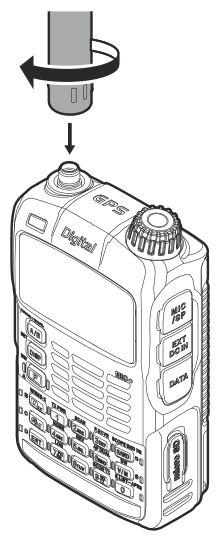</button><figcaption>Figure from page 15</figcaption><dialog id="fig-1"><p>Figure from page 15</p><form method="dialog"><button>Close</button></form></dialog></figure><figure><button aria-label="Enlarge Figure from page 15" class="zoom" data-dialog="fig-2" type="button">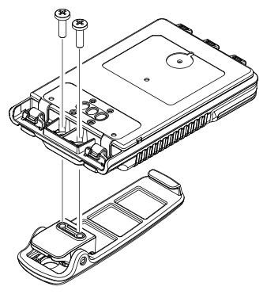</button><figcaption>Figure from page 15</figcaption><dialog id="fig-2"><p>Figure from page 15</p><form method="dialog"><button>Close</button></form></dialog></figure><p>~~<strong>Attaching a Hand Strap</strong>~~</p>
<p>If you attach a hand strap to the transceiver, its string which is inserted in and secured to
the strap hole of the transceiver must have a diameter of 1 mm.</p>
<ul>
<li>The hand strap is not an accessory.
<strong>1</strong> Remove the battery pack.
<strong>2</strong> Attach the hand strap.</li>
</ul>
<p>~~<strong>Cautions</strong>~~</p>
<p>Use a hand strap which can withstand the weight of the transceiver. If
you use a hand strap which is not strong enough, the hand strap can
break and the transceiver fall down, causing injury, breakage and other
troubles.</p>
<p>~~<strong>How to Use the Battery Case (FBA-39)  Optional</strong>~~</p>
<p>The optional battery case (FBA-39) allows three (size) AA Alkaline batteries to be used
for the power supply.</p>
<p>~~<strong>Tips</strong>~~</p>
<p>When the battery case (FBA-39) is used, you can select a power output level from:</p>
<p>Low Power (L1): 0.1W
Low Power (L2): Approximately 0.8W
Note that Low Power (L3) and High Power are not available.</p>
<p><strong>1</strong> Open the cover.
Lift up the lower right corner indicated by the hand pointer in
the illustration.
<strong>2</strong> Put alkaline batteries in the battery case.</p>
<p>~~<strong>Caution</strong>~~ Use three alkaline batteries. Pay attention to polarities (+ and</p>
<p>–) of the alkaline batteries.
<strong>3</strong> Close the cover.
Push the four corners of the cover firmly to close it tightly.</p>
<p>~~<strong>Tips</strong>~~</p>
<ul>
<li>When the battery charge is low, _ lights on the LCD. When the batteries are almost exhausted, _ blinks on the LCD.</li>
</ul>
<p>~~<strong>Cautions</strong>~~</p>
<ul>
<li>
<p>Manganese batteries cannot be used. Rechargeable AA batteries
cannot be used, either.</p>
</li>
<li>
<p>Do not mix new and old batteries. The service life of new batteries
may decrease.</p>
</li>
<li>
<p>If you do not use the transceiver for a long period, remove the batteries from the battery case.</p>
</li>
<li>
<p>If the terminal or electrode of the battery case is dirty, the transceiver
can malfunction due to poor contact resulting in overheating or explo</p>
</li>
</ul><figure><button aria-label="Enlarge Figure from page 16" class="zoom" data-dialog="fig-3" type="button">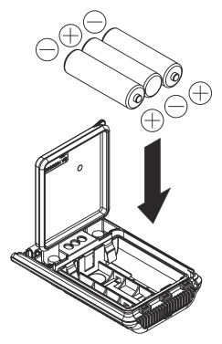</button><figcaption>Figure from page 16</figcaption><dialog id="fig-3"><p>Figure from page 16</p><form method="dialog"><button>Close</button></form></dialog></figure><p>~~<strong>Installing/Removing the Battery Pack</strong>~~</p>
<p><strong>Installing the Battery Pack</strong>
<strong>1</strong> Insert the bottom tabs of the battery pack in the slots
at the bottom of the transceiver.
<strong>2</strong> Push the battery in until the latches click securely.</p>
<p>~~<strong>Caution</strong>~~</p>
<ul>
<li>When you use the transceiver for the first time after purchase
or you have not used it for a long period, charge the battery
pack before use.</li>
</ul>
<p>~~<strong>Caution</strong>~~</p>
<ul>
<li>Risk of explosion if battery is replaced by an incorrect type.
Dispose of used batteries according to the instructions..</li>
</ul>
<p><strong>Removing the Battery Pack</strong>
<strong>1</strong> While pushing down and releasing the latches, remove the battery pack, as shown in the battery pack
removal illustration.</p>
<p>~~<strong>Caution</strong>~~</p>
<ul>
<li>When releasing the battery latches, be careful not to hurt your
fingers and nails.</li>
</ul>
<p>Lock dials</p>
<p>Push down on the latches in the
direction of the arrow.</p>
<p>~~<strong>Charging the Battery Pack</strong>~~</p>
<p>~~<strong>Cautions</strong>~~</p>
<ul>
<li>
<p>The battery pack is rechargeable about 300 times. However, improper use such as overcharge or
over-discharge can shorten its service life.</p>
</li>
<li>
<p>The battery pack is a consumable item. Recharging the battery pack repeatedly will gradually shorten the duration of its usage.</p>
</li>
<li>
<p>If the transceiver is not used for a long period with the battery pack installed, deterioration of the
battery pack can accelerate.</p>
</li>
<li>
<p>If you do not use the transceiver for a long period, be sure to store it with the battery pack removed.
Even if you do not use the transceiver for a long period, install the battery pack biannually and recharge the battery pack about 50% to prevent it from over-discharging.</p>
</li>
<li>
<p>Storing the battery pack in a high-temperature place can deteriorate it faster than usual. Store the
battery pack in a place where the ambient temperature is –20 °C to +50 °C (–4 °F to +122 °F).</p>
</li>
<li>
<p>Do not drop or give a strong shock to the battery pack. It can break.</p>
</li>
</ul>
<p>~~<strong>Tips</strong>~~</p>
<ul>
<li>
<p>The battery pack contains lithium-ion batteries that can be recharged for repetitive use.</p>
</li>
<li>
<p>The transceiver can be used with either of the following battery packs:
(1) Accessory: SBR-14LI (7.2 V, 2,200 mAh)
(2) Option: FNB-101LI (7.4 V, 1,100 mAh)</p>
</li>
<li>
<p>When the battery pack is recharged, its output voltage (about 8 V) becomes higher than the specifi d l (7 4 V) Thi i t f il</p>
</li>
</ul><p><strong>Rapid Charger CD-41</strong></p>
<p>(option)
<strong>1</strong> Install the Battery Pack
<strong>2</strong> Turn off the transceiver.</p>
<p>SAD-14B) in the EXT DC IN jack of the transceiver.
Charging starts.
While the battery is being charged, the display will indicate “NOW CHARGING”.
The charge level is indicated by a bar graph.
It takes about 8 hours to charge the battery pack fully.
When charging is completed, the display will change to</p>
<p>ing or when charging is complete. When the charge is
complete, the transceiver turns off after 3 minutes.
~~<strong>Supplement</strong>~~ - It takes about 5 hours to charge the FNB-101LI (option).</p>
<ul>
<li>The optional Rapid Charger (CD-41) requires about 4 hours to charge the supplied battery pack
(about 2.5 hours to charge the optional battery pack FNB-101LI).
Place the battery pack on the CD-41 so that the rails of the CD-41 fit into the grooves on the battery
pack.
Wh h i h b k i h CD 41 h LED h CD 41 i di h f h i</li>
</ul><figure><button aria-label="Enlarge Figure from page 18. Battery charger PA-48 or SAD-14B (accessory)" class="zoom" data-dialog="fig-4" type="button">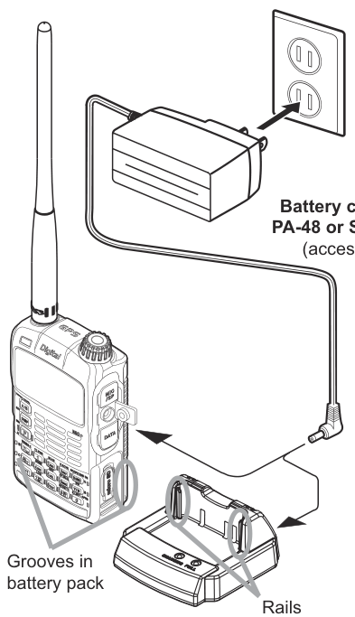</button><figcaption>Figure from page 18. Battery charger PA-48 or SAD-14B (accessory)</figcaption><dialog id="fig-4"><p>Figure from page 18. Battery charger PA-48 or SAD-14B (accessory)</p><form method="dialog"><button>Close</button></form></dialog></figure><p><strong>4</strong> When charging is complete, remove the plug of the battery charger from the jack of
the transceiver.</p>
<p>~~<strong>Cautions</strong>~~</p>
<ul>
<li>
<p>Neither transmission nor reception can be performed while charging the battery pack using the supplied battery charger.</p>
</li>
<li>
<p>Charging may cause noise in the nearby TV or radio. Charge the battery pack with the battery charger as far away as possible from a TV or radio.</p>
</li>
<li>
<p>If “BATTERY NOT INSTALLED” appears on the LCD and the battery pack cannot be charged after
lapse of 11 or more hours, stop charging the battery pack immediately. If the same message appears again, the battery pack is presumably at the end of its service life or defective. If so, replace
the battery pack with a new one.</p>
</li>
<li>
<p>While charging the battery pack, protect the transceiver from water.</p>
</li>
<li>
<p>Charge the battery pack in a place where the ambient temperature is +5 °C to +35 °C (+41 °F to
+95 °F).</p>
</li>
<li>
<p>If the terminal or electrode of the battery case is dirty, this transceiver can malfunction due to poor
contact, resulting in overheating or rupture. If the terminal or electrode gets dirty, clean it using a dry
cloth or cotton swab.</p>
</li>
</ul>
<p>~~<strong>Tips</strong>~~</p>
<ul>
<li>
<p>The battery charger may become hot during charging. This is not a malfunction.</p>
</li>
<li>
<p>If _ starts blinking, the battery pack charge is depleted. Charge it immediately.</p>
</li>
</ul>
<p><strong>Approximate Operating Time and Remaining Charge Level Indication</strong>
Approximate time to operate the transceiver with the fully charged battery pack or three
new AA alkaline batteries is as follows:</p>
<p>|Band in
Digital:|Use
OFF|Battery pack
FNB-101LI|Battery pack
SBR-14LI|Battery
FBA-39|
|---|---|---|---|---|
|Amateur Band|144 MHz band
430 MHz band|Approx. 5.0 hours
Approx. 4.5 hours|Approx. 10.0 hours
Approx. 9.0 hours|Approx. 15.5 hours
Approx. 15 hours|
|AM Broadcast Band||Approx. 10.0 hours|Approx. 20.0 hours|Approx. 18.0 hours|
|FM Broadcast Band||Approx. 8.0 hours|Approx. 16.0 hours|Approx. 14.5 hours|
||||||
|<strong>Band in</strong>
<strong>Digital:</strong>|**  Use**
** ON<strong>|</strong>Battery pack**
<strong>FNB-101LI</strong>|<strong>Battery pack</strong>
<strong>SBR-14LI</strong>|<strong>Battery</strong>
<strong>FBA-39</strong>|
|Amateur Band|144 MHz band
430 MHz band|Approx. 4.0 hours
Approx. 3.6 hours|Approx. 8.0 hours
Approx. 7.2 hours|Approx. 11.0 hours
Approx. 10.5 hours|</p>
<p>Transmission 6 seconds: Reception 6 seconds (VOL Level 16): Stand By 48 seconds (SAVE1:5)</p>
<p>~~<strong>Remark</strong>~~ Approximate hours are estimated assuming that the transceiver is operated under the fol
lowing conditions. The operation time that this transceiver can be actually used varies
depending on use conditions, ambient temperature, etc.</p>
<pre><code>    - When the GPS function is deactivated.

    - When the transceiver is repeatedly operated by high-power transmission for 6 seconds
</code></pre>
<p>and reception for 6 seconds, and standby for 48 seconds with an amateur ham radio band
selected</p><p>~~<strong>Connecting an External Power Supply for Use in Vehicle</strong>~~
~~<strong>(USA/EXP version only)</strong>~~</p>
<p>The optional external power supply</p>
<p>(SDD-13) allows the transceiver to be
used in a vehicle.</p>
<p><strong>2</strong> Insert the plug of the external power
supply adapter with a cigarette light
jack of the transceiver. lighter plug
<strong>3</strong> Insert the cigarette lighter plug of the SDD-13 (option)
external power supply adapter (SDD-13) in the cigarette lighter socket of the vehicle.</p>
<p>~~<strong>Cautions</strong>~~</p>
<ul>
<li>
<p>The SDD-13 is compatible with a 12 VDC cigarette lighter socket. Do not connect the SDD-13 to the
24 VDC cigarette lighter socket.</p>
</li>
<li>
<p>Use the transceiver at the minimum required transmission power level to prevent overheating.</p>
</li>
<li>
<p>Do not continue transmission for a prolonged period of time. The transceiver may overheat, resulting
in malfunction or burns.</p>
</li>
<li>
<p>If you operate the transceiver for 7 hours or longer, it is recommended that you remove the battery
pack and install the optional battery case (FBA-39).</p>
</li>
<li>
<p>Recharging the fully-charged battery pack repeatedly can shorten its service life. Be extremely
careful not to do so when you operate the transceiver when using an external power supply.</p>
</li>
<li>
<p>While charging the battery pack, protect the transceiver from water.</p>
</li>
<li>
<p>Charge the battery pack in a place where the ambient temperature is +5 °C to +35 °C (+41 °F to
+95 °F).</p>
</li>
<li>
<p>If the terminal or electrode of the battery case is dirty, the transceiver can malfunction due to poor
contact, resulting in overheating or rupture. If the terminal or electrode gets dirty, clean it using a dry
cloth or cotton swab.</p>
</li>
</ul>
<p>lighter plug
SDD-13 (option)</p>
<p>~~<strong>Cautions</strong>~~</p>
<p>~~<strong>Tips</strong>~~</p>
<ul>
<li>
<p>The battery pack can be charged within approximately 8 hours using the external power supply (approximately 5 hours to charge the optional battery pack FNB-101LI). If the battery pack is charged with
the transceiver turned on, the charging time increases slightly.</p>
</li>
<li>
<p>When the battery pack has been fully charged, charging stops automatically.</p>
</li>
<li>
<p>The external power supply can be used with the battery case installed.</p>
</li>
<li>
<p>If you connect the transceiver to the external power supply with it turned off, “CONNECTED TO EXTERNAL POWER” appears on the LCD, and about 20 seconds later “BATTERY NOT INSTALLED”
appears.</p>
</li>
</ul>
<p>~~<strong>Connecting to an External Power Supply Using a Power Cable</strong>~~
~~<strong>(USA/EXP version only)</strong>~~</p>
<p>The optional power cable (E-DC-6) allows the transceiver to be connected to an external</p><p><strong>1</strong> Turn off the transceiver.
<strong>2</strong> Connect the optional external power supply
cable (E-DC-6) to an external power supply.</p>
<p>~~<strong>Remarks</strong>~~   - Connect the red/black wire or white/red</p>
<p>wire to the positive (+) terminal of the
external power supply and the black
wire to the negative (–) terminal.</p>
<pre><code>    - Set the voltage of the external power
</code></pre>
<p>supply to 12 to 14 V.
<strong>3</strong> Insert the plug of the external power supply
in the EXT DC IN jack of the transceiver.</p>
<p>~~<strong>Cautions</strong>~~</p>
<ul>
<li>
<p>When you use the transceiver with the external power supply cable (E-DC-6) connected to an external power supply, pay attention to the following:</p>
</li>
<li>
<p>The power supply voltage must be between 12 V and 14 V.</p>
</li>
<li>
<p>If the voltage exceeds 14 V, the high voltage protection function is activated to disable high-power
transmission. L3 (2.5 W) is selected automatically to reduce the transmission power. If the voltage
exceeds 16 V, malfunctions such as damage to the electric circuits of the transceiver may result.
Take extra care.</p>
</li>
<li>
<p>Connect the red/black wire or white/black wire of the external power supply cable (E-DC-6) to the
positive (+) terminal of the external power supply and the black wire to the negative (–) terminal.</p>
</li>
<li>
<p>Use an external power supply having sufficient current capacity (3 A or more).</p>
</li>
<li>
<p>If the transceiver is used with supplied antenna connected, the external power supply can malfunction, resulting in a failure. If you use an external power supply, remove the supplied antenna and
connect an external antenna. Place the external power supply sufficiently away from the transceiver.</p>
</li>
<li>
<p>Use the transceiver at the minimum required transmission power level to prevent overheating.</p>
</li>
<li>
<p>Do not continue transmission for a prolonged period. The transceiver may overheat, resulting in
malfunction or burn.</p>
</li>
<li>
<p>If you operate the transceiver for 7 hours or longer, it is recommended that you remove the battery
pack and install the optional battery case (FBA-39).</p>
</li>
<li>
<p>Recharging the fully-charged battery pack repeatedly can shorten its service life. Be extremely careful not to do so when you operate the transceiver using an external power supply.</p>
</li>
<li>
<p>While charging the battery pack, protect the transceiver from water.</p>
</li>
<li>
<p>Charge the battery pack in a place where the ambient temperature is +5 °C to +35 °C (+41 °F to
+95 °F).</p>
</li>
<li>
<p>If the terminal or electrode of the battery case is dirty, the transceiver may malfunction due to poor
contact, resulting in overheating or rupture. If the terminal or electrode gets dirty, clean it using a dry
cloth or cotton swab.</p>
</li>
</ul>
<p>~~<strong>Tips</strong>~~</p>
<ul>
<li>
<p>The transceiver can be charged within approximately 8 hours using the external power
supply(approximately 5 hours to charge the optional battery pack FNB-101LI). If the battery pack is
charged with the transceiver turned on, the charging time increases slightly.</p>
</li>
<li>
<p>The external power supply can be used with the battery case installed.
If you connect the transceiver to the external power supply with it turned off, “CONNECTED TO EXTERNAL POWER” appears on the LCD, and about 20 seconds later “BATTERY NOT INSTALLED”</p>
</li>
</ul><p>Using a microSD memory card with the transceiver allows the following functions.
You can:
⿠ Back up information on the transceiver.
⿠ Save memory information.
⿠ Save data other than images.
⿠ Save GPS log data.
⿠ Save image data captured with the optional camera-equipped microphone (MH
85A11U).
⿠ Save messages downloaded with the GM function or WIRES-X function.</p>
<p>~~<strong>Usable microSD memory cards</strong>~~</p>
<p>This transceiver only supports the following capacity of microSD and microSDHD memory cards.</p>
<ul>
<li>2GB  • 4GB  • 8GB  • 16GB  • 32GB</li>
</ul>
<p>~~<strong>Cautions when using a micro SD memory card</strong>~~</p>
<p>⿠ Do not bend or place heavy objects on the microSD memory card.
⿠ microSD memory cards formatted on other devices may not properly save information</p>
<p>when used with this transceiver. Format micro SD memory cards again with this transceiver when using memory cards formatted with another device.
⿠ When saving data to a microSD memory card, do not remove the microSD memory</p>
<p>card or turn off the transceiver.</p><p><strong>2</strong> Open the microSD cover on the side of the transceiver.</p>
<p><strong>3</strong> Insert the microSD memory card into the card slot until
you hear a click. (as shown in the figure at the right).</p>
<p>~~<strong>Cautions</strong>~~   - Ensure that the microSD memory card is facing the</p>
<p>proper direction when mounting it.</p>
<pre><code>    - Do not touch the terminal of the microSD memory
</code></pre>
<p>card.</p>
<p><strong>4</strong> Close the microSD cover.
When the microSD memory card is properly detected,
the s lights on the display.</p>
<p>~~<strong>Tips</strong>~~</p>
<p><strong>Dismounting the microSD memory card.</strong>
To dismount the microSD memory card, as done in step 3 above,
push the memory card in until you hear a click, then remove the
memory card.</p>
<ul>
<li>By using the micro SD Card Clip, it is easy to remove the micro
SD memory Card.</li>
</ul>
<p>~~<strong>Caution</strong>~~</p>
<p>Do not turn off the transceiver while the data is being written to
the microSD memory card. Doing so may corrupt the data.</p><figure><button aria-label="Enlarge Figure from page 23. Using a microSD memory card proper direction when mounting it." class="zoom" data-dialog="fig-5" type="button">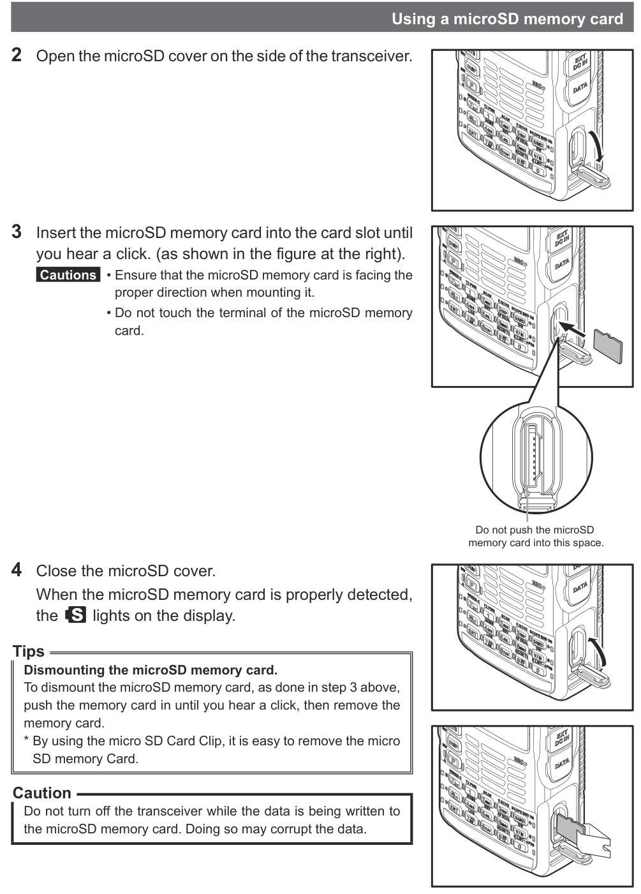</button><figcaption>Figure from page 23. Using a microSD memory card proper direction when mounting it.</figcaption><dialog id="fig-5"><p>Figure from page 23. Using a microSD memory card proper direction when mounting it.</p><form method="dialog"><button>Close</button></form></dialog></figure><p>~~<strong>Formatting a microSD memory card</strong>~~</p>
<p>Format a new microSD memory card following the steps below before use.</p>
<p>~~<strong>Caution</strong>~~</p>
<p>Formatting a microSD memory card erases all data saved to it. If you are going to format the microSD
memory card you are using, be sure to check the data saved to it before formatting.</p>
<p><strong>1</strong> Press and hold M over 1 second.
<strong>2</strong> Turn O to select [10 SD CARD].
<strong>3</strong> Press H .
<strong>4</strong> Turn O to select [4 FORMAT].
<strong>5</strong> Press H .</p>
<p>[OK?] appears on the LCD.</p>
<p>~~<strong>Tip</strong>~~ To cancel formatting, select [Cancel].
<strong>6</strong> Press H .
S ( s icon) on the LCD blinks and formatting starts.
When formatting is completed, a beep sound is emitted and</p>
<p>[Completed] appears on the LCD.</p>
<p>in progress</p><p>Try communication using the transceiver in the analog communication mode.
Follow the procedure below:</p>
<p>~~<strong>Turning on the Transceiver</strong>~~</p>
<p><strong>1</strong> Press and hold P over 1 second.
<strong>2</strong> The callsign input screen appears.
The callsign input screen appears when the transceiver
is turned on for the first time after purchase.
The next time, the frequency screen will appear after
the opening screen.
<strong>3</strong> Input a callsign for your transceiver.
Input the callsign with the ten key.
<strong>4</strong> Press p .
The callsign is set and two frequencies (A-band and
B-band frequency) appear at the same time.</p>
<p>~~<strong>Supplement</strong>~~ Factory settings are:</p>
<p>A-band (upper): 144.000 MHz</p>
<p>B-band (lower): 430.000 MHz</p>
<p>~~<strong>Tips</strong>~~ You can change the information such as the power supply</p>
<p>voltage and the opening message displayed at power-on.
For example, press and hold M over 1 second to enter
the Set mode and then select [1 DISPLAY] → [9 OPENING
MESSAGE] to change the opening message.</p>
<p>In addition you can set the transceiver to display the reception frequency immediately without</p><figure><button aria-label="Enlarge Figure from page 25" class="zoom" data-dialog="fig-6" type="button"></button><figcaption>Figure from page 25</figcaption><dialog id="fig-6"><p>Figure from page 25</p><form method="dialog"><button>Close</button></form></dialog></figure><ul>
<li><strong>Turning off the Transceiver</strong>
To turn off the transceiver, press and hold P over 1 second.</li>
</ul>
<p>~~<strong>Adjusting the Volume Level</strong>~~</p>
<p>level.</p>
<p><strong>2</strong> While pressing v, turn O to adjust the volume
level.
The volume bar graph moves up/down.</p>
<p>~~<strong>Supplement</strong>~~ If no sound is heard from the speaker, press</p>
<p>T and then adjust the volume level while
listening to white noise.
<strong>3</strong> Release v to exit from the Volume Level
Adjustment mode.</p>
<p>~~<strong>Tips</strong>~~</p>
<ul>
<li>
<p>Pressing v starts MUTE (silencing the audio) function,
muting entire sound.</p>
</li>
<li>
<p>Pressing v while the audio is being muted cancels the
MUTE function.</p>
</li>
</ul><p>~~<strong>Selecting an Operating Band</strong>~~</p>
<p>The frequency displayed on the LCD in large letters is the
operating band.
You can change the frequency of the operating band and
activate the transmitter.</p>
<p>Each time A is pressed, the operating content displayed on the LCD screen is
changed.</p>
<p>A-band (operating band)</p>
<p>B-band</p>
<p>Press A .</p>
<p>Press and hold A
about 1 second.</p>
<p>Press A .</p>
<p>Press and hold A
about 1 second.</p><figure><button aria-label="Enlarge Figure from page 27. Press F ↓ Press A." class="zoom" data-dialog="fig-7" type="button">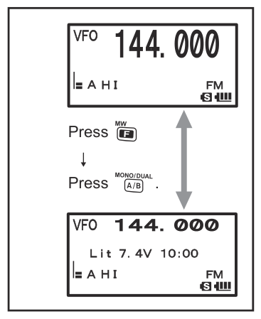</button><figcaption>Figure from page 27. Press F ↓ Press A.</figcaption><dialog id="fig-7"><p>Figure from page 27. Press F ↓ Press A.</p><form method="dialog"><button>Close</button></form></dialog></figure><figure><button aria-label="Enlarge Figure from page 27. Press F ↓ Press A." class="zoom" data-dialog="fig-8" type="button">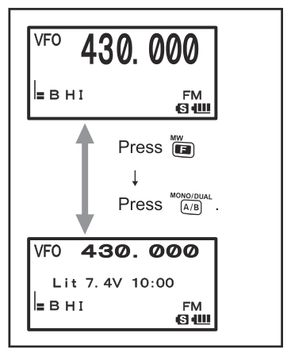</button><figcaption>Figure from page 27. Press F ↓ Press A.</figcaption><dialog id="fig-8"><p>Figure from page 27. Press F ↓ Press A.</p><form method="dialog"><button>Close</button></form></dialog></figure><p>~~<strong>Tip</strong>~~</p>
<ul>
<li>
<p>On A-band, you can transmit and receive using the 144 MHz and 430 MHz Amateur radio bands.</p>
</li>
<li>
<p>On B-band, you can transmit and receive using the 144 MHz and 430 MHz Amateur radio bands.
In addition, the frequencies on the chart below can be received on A-band and B-band.
Chart of A-band and B-band reception frequencies</p>
</li>
</ul>
<p><strong>A-band and B-band reception frequencies</strong></p>
<table>
<thead>
<tr>
<th>A-band</th>
<th>B-band</th>
</tr>
</thead>
<tbody>
<tr>
<td>0.5 MHz to 1.8 MHz</td>
<td></td>
</tr>
<tr>
<td>(AM BC Band)</td>
<td>−−</td>
</tr>
<tr>
<td>76 (88) MHz to 108 MHz</td>
<td></td>
</tr>
<tr>
<td>(FM BC Band)</td>
<td>−−</td>
</tr>
<tr>
<td>1.8 MHz to 30 MHz</td>
<td></td>
</tr>
<tr>
<td>(SW band)</td>
<td>−−</td>
</tr>
<tr>
<td>30 MHz to 76 (88) MHz</td>
<td></td>
</tr>
<tr>
<td>(50 MHz band)</td>
<td>−−</td>
</tr>
<tr>
<td>108 MHz to 137 MHz</td>
<td></td>
</tr>
<tr>
<td>(AIR band)</td>
<td>108 MHz to 137 MHz</td>
</tr>
<tr>
<td>(AIR band)</td>
<td></td>
</tr>
<tr>
<td>137 MHz to 174 MHz</td>
<td></td>
</tr>
<tr>
<td>(144 MHz band)</td>
<td>137MHz to 174 MHz</td>
</tr>
<tr>
<td>(144 MHz band)</td>
<td></td>
</tr>
<tr>
<td>174 MHz to 222 MHz</td>
<td></td>
</tr>
<tr>
<td>(VHF-TV Band)</td>
<td>174 MHz to 222 MHz</td>
</tr>
<tr>
<td>(VHF-TV Band)</td>
<td></td>
</tr>
<tr>
<td>222 MHz to 420 MHz</td>
<td></td>
</tr>
<tr>
<td>(INFO band (1))</td>
<td>222 MHz to 420 MHz</td>
</tr>
<tr>
<td>(INFO band (1))</td>
<td></td>
</tr>
<tr>
<td>420 MHz to 470 MHz</td>
<td></td>
</tr>
<tr>
<td>(430 MHz band)</td>
<td>420 MHz to 470 MHz</td>
</tr>
<tr>
<td>(430 MHz band)</td>
<td></td>
</tr>
<tr>
<td>470 MHz to 774 (800) MHz</td>
<td></td>
</tr>
<tr>
<td>(UHF-TV Band)</td>
<td>470 MHz to 580 MHz</td>
</tr>
<tr>
<td>803 (800) MHz to 999.9 MHz</td>
<td></td>
</tr>
<tr>
<td>Cellular Blocked</td>
<td></td>
</tr>
<tr>
<td>USA version</td>
<td>−−</td>
</tr>
</tbody>
</table>
<p>( ): EXP/European version</p>
<ul>
<li>A-band and B-band can be received at the same time.
You can receive Amateur radio frequency while listening to the AIR band, or receive two Amateur radio
frequencies on the same frequency band at the same time (V+V/U+U: Dual frequency reception on
the same band).</li>
</ul><figure><button aria-label="Enlarge Figure from page 28. Tip A-band and B-band reception frequencies" class="zoom" data-dialog="fig-9" type="button">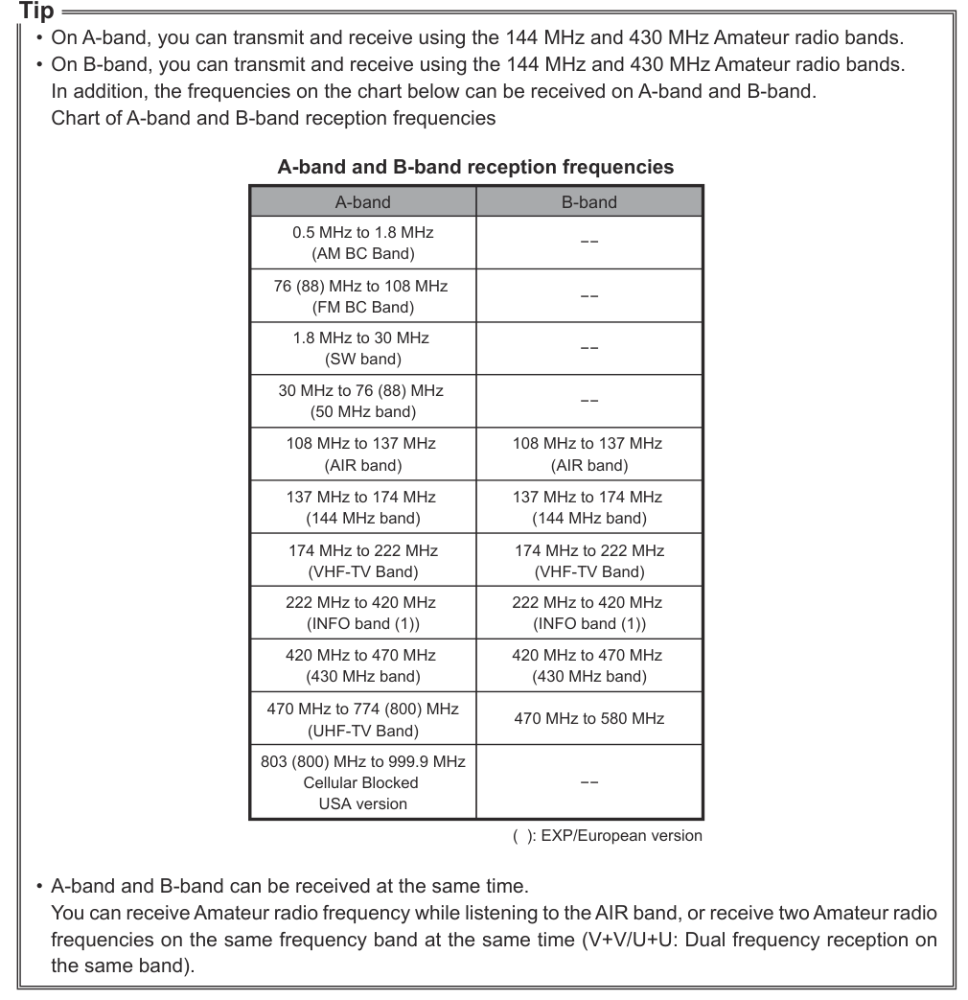</button><figcaption>Figure from page 28. Tip A-band and B-band reception frequencies</figcaption><dialog id="fig-9"><p>Figure from page 28. Tip A-band and B-band reception frequencies</p><form method="dialog"><button>Close</button></form></dialog></figure><p>~~<strong>Selecting a Frequency Band</strong>~~</p>
<p>You can select a frequency band to use for the A-band and B-band separately.</p>
<ul>
<li><strong>Setting a Frequency Band for the A-band</strong>
<strong>1</strong> Press A to select the A-band.
<strong>2</strong> Press B repeatedly to select a frequency band.</li>
</ul>
<p>~~<strong>Tip</strong>~~ Pressing F and then B changes frequency bands shown above in the reverse order.</p>
<ul>
<li><strong>Selecting a Frequency Band for B-band</strong>
<strong>1</strong> Press A to select the B-band.
<strong>2</strong> Press B to select a frequency band.</li>
</ul>
<p>~~<strong>Tip</strong>~~ Pressing F and then B changes frequency bands shown above in the reverse order.</p>
<p>~~<strong>Caution</strong>~~</p>
<ul>
<li>Digital communication can be performed only on the A-band.
Digital communication cannot be performed on the B-band.</li>
</ul>
<p>~~<strong>Tips</strong>~~</p>
<ul>
<li>
<p>The frequency settings from the factory are:
A-band: 144.000 MHz B-band: 430.000MHz</p>
</li>
<li>
<p>The factory setting of the Auto mode is set such that the transceiver is automatically switched to the
optimal reception mode for the default frequency bands.
To change the default reception mode, press and hold M for over 1 second and then select [2 TX/
RX] → [1 MODE] → [4RX MODE] (See page 38).</p>
</li>
<li>
<p>For the relationship between frequency bands and reception frequencies, see the table on page 28.</p>
</li>
<li>
<p>You can also recall the home channel of each frequency band by pressing F and then 4 (See
page 45).</p>
</li>
</ul><p>~~<strong>Tuning in to a Frequency</strong>~~</p>
<p>Tune in to your desired frequency using either of the following methods:
(1) Turn O to tune in to your desired frequency.
(2) Enter your desired frequency directly using the numeric keys.</p>
<ul>
<li><strong>Tuning in to your desired frequency with</strong> O <strong>.</strong>
<strong>1</strong> Switch to the VFO mode.
<strong>2</strong> Turn O to tune in to your desired frequency.
Turning O clockwise: The frequency increases.
Turning O counterclockwise: The frequency decreases.</li>
</ul>
<p>~~<strong>Tip</strong>~~ You can tune to the desired frequency in steps of 1 MHz by</p>
<p>pressing F and turning O .</p>
<p><strong>2</strong> Enter the desired frequency using numeric keys.
Example: To enter 145.520 MHz, Press the T he
following keys in sequence:
1 → 4 → 5 → 5 → 2
Example: To enter 430.000 MHz, Press the T he
following keys in sequence:
4 → 3 → H</p>
<p>~~<strong>Tips</strong>~~</p>
<ul>
<li>
<p>In factory settings, the Auto Step mode is set such that the transceiver is automatically switched to the
optimal frequency steps for the reception frequency.
You can change frequency steps manually using O (See page 37).</p>
</li>
<li>
<p>If you enter a wrong digit when entering a frequency using numeric keys, you can cancel it by pressing p .</p>
</li>
<li>
<p>In factory settings, turning O beyond the selected frequency band does not change the selected
frequency band to another frequency band and displays the selected frequency band repeatedly on
the LCD.
To prevent it, press and hold M for over 1 second to switch to the Set mode, select [8 CONFIG] →</p>
</li>
</ul>
<p>[21 VFO MODE] and change the [21 VFO MODE] to “ALL”. Thereby, you can change the frequency
band to another frequency band by turning O beyond the selected frequency band.</p>
<p>~~<strong>Selecting Communication Mode</strong>~~</p><p>Pressing % repeatedly switches the communication mode as follows.</p>
<p>[Analog (FM)] → [Auto (¢ FM)] → [Digital (DN)] → [Digital Wide (VW)]
FM: Analog Analog communication using FM mode.</p>
<p>¢ ○○ Auto Automatically switches between Analog AM (¢ AM), Analog
FM (¢ FM), and Digital (¢ DN).
DN: Digital Digital communication using (C4FM (Quaternary FSK)
modulation
VW: Wide Digital High sound quality of Digital Communication</p>
<p>~~<strong>Caution</strong>~~</p>
<ul>
<li>Digital communication can be performed only on the A-band.</li>
</ul>
<p>~~<strong>Performing Communication</strong>~~</p>
<p><strong>1</strong> Speak into the microphone while pressing p .
When speaking into the microphone, keep it about 5 cm away from your mouth.
<strong>2</strong> Release p .
The transceiver returns to the Reception mode.</p>
<p>~~<strong>Cautions</strong>~~</p>
<ul>
<li>
<p>Use the transceiver at the minimum required transmission power level.</p>
</li>
<li>
<p>Doing so prevents the transceiver from overheating and saves battery power, increasing the operating time.</p>
</li>
<li>
<p>Do not continue transmitting for a prolonged period. The transceiver can overheat, resulting in malfunction or burn.</p>
</li>
<li>
<p>If transmission is continued for a long period, the transceiver overheats and the overheat protection
function is activated. As a result, the transmitting power level is automatically set to Low Power. If
you continue transmitting while the overheat protection function is active, the transceiver will be forcibly returned to the Reception mode.</p>
</li>
<li>
<p>If you touch the transceiver immediately after the overheat protection function has become active,
you can get burned. Wait for the temperature inside the transceiver to drop sufficiently before resuming transmission.</p>
</li>
<li>
<p>Do not perform transmission without attaching the antenna. The transmitter circuit can be damaged.</p>
</li>
</ul>
<p>~~<strong>Tips</strong>~~</p>
<ul>
<li>
<p>In the FM mode, you can transmit on the 144 MHz and 430 MHz ham radio bands.</p>
</li>
<li>
<p>Even while you are receiving in the AM mode, you can transmit in the FM mode by pressing p .</p>
</li>
<li>
<p>You can change the transmit power level by pressing F and then 1 .
Transmit power level may be lower when using the battery pack or the alkaline battery case.
For more details, see “Changing the Transmission Power Level” on page 36.</p>
</li>
<li>
<p>If p is pressed when a frequency other than the amateur ham radio band is selected, an alarm tone
(beep) will be emitted and “ERROR” appears on the LCD, disabling transmission.</p>
</li>
<li>
<p>Pressing and holding M for over 1 second, and changing the Set Mode option [8 CONFIG] will allow
you to use the transceiver more conveniently.</p>
</li>
<li>
<p>Selecting [8 CONFIG] → [2 BCLO] prohibits transmission during reception of a signal.</p>
</li>
</ul><p>~~<strong>Selecting Communication Mode</strong>~~</p>
<p>This transceiver is equipped with AMS (Automatic Mode Select) which automatically selects between 4 modes of transmission to fit the signal being received. Because the transmission is automatically adjusted to that of the other station, not only C4FM digital signals,
but analog signals are also recognized.</p>
<p>Press % to display [¢ DN*] on the LCD.</p>
<pre><code>                 - (The display depends on the received signal.)
</code></pre>
<p>Example of when AMS is displayed.</p>
<p>To fix the transmission mode for operation, switch the transmission mode with % .
Pressing % toggles between communication modes in the order listed below.</p>
<p>[¢ DN (AMS)] → [DN (V/D mode)] → [VW (FR mode)] → [FM (analog)]</p>
<table>
<thead>
<tr>
<th>Operation mode</th>
<th>Displa</th>
<th>y Description of Modes</th>
</tr>
</thead>
<tbody>
<tr>
<td>AMS</td>
<td></td>
<td></td>
</tr>
<tr>
<td>(Automatic Mode Select)</td>
<td>¢ ○○</td>
<td>Transmission mode is automatically selected from 4 types ac-</td>
</tr>
<tr>
<td>cording to the signal received.</td>
<td></td>
<td></td>
</tr>
<tr>
<td>(“○○” part differs depending on the received signal.)</td>
<td></td>
<td></td>
</tr>
<tr>
<td>The AMS feature settings may be changed via Set Mode ( p.112).</td>
<td></td>
<td></td>
</tr>
<tr>
<td>V/D Mode</td>
<td></td>
<td></td>
</tr>
<tr>
<td>(Voice/Data simultaneous</td>
<td></td>
<td></td>
</tr>
<tr>
<td>transmission mode)</td>
<td>DN</td>
<td>Call is less prone to interruption due to detection and correction</td>
</tr>
<tr>
<td>of voice signals during digital voice signal transmission. This is</td>
<td></td>
<td></td>
</tr>
<tr>
<td>the standard mode for C4FM FDMA Digital</td>
<td></td>
<td></td>
</tr>
<tr>
<td>Voice FR Mode</td>
<td></td>
<td></td>
</tr>
<tr>
<td>(Voice Full Rate Mode)</td>
<td>VW</td>
<td></td>
</tr>
<tr>
<td>Digital voice data transmission using the entire 12.5kHz band.</td>
<td></td>
<td></td>
</tr>
<tr>
<td>Enables high-quality voice communication.</td>
<td></td>
<td></td>
</tr>
<tr>
<td>High speed data communication using entire 12.5kHz band.</td>
<td></td>
<td></td>
</tr>
<tr>
<td>This mode is automatically selected for image communication.</td>
<td></td>
<td></td>
</tr>
<tr>
<td>Data FR Mode (High Speed</td>
<td></td>
<td></td>
</tr>
<tr>
<td>Data Communication Mode)</td>
<td>Data FR Mode (High Speed</td>
<td></td>
</tr>
<tr>
<td>Data Communication Mode)</td>
<td>Data FR Mode (High Speed</td>
<td></td>
</tr>
<tr>
<td>Data Communication Mode)</td>
<td></td>
<td></td>
</tr>
<tr>
<td>Analog FM Mode</td>
<td>FM</td>
<td>Analog communication using FM mode.</td>
</tr>
<tr>
<td>Effective when the signal is weak and audio is susceptible to</td>
<td></td>
<td></td>
</tr>
<tr>
<td>interruption in digital mode.</td>
<td></td>
<td></td>
</tr>
</tbody>
</table>
<p>~~<strong>Cautions</strong>~~</p>
<ul>
<li>
<p>Digital communication can be performed only on the A-band.</p>
</li>
<li>
<p>Digital communication cannot be performed on the B-band.</p>
</li>
<li>
<p>In V/D mode (“DN” on the LCD), position information is included in the radio wave during voice
communication, however, it is not include in the Voice FR mode (“VW” on the LCD).</p>
</li>
</ul><p>~~<strong>Listening to the AM/FM Radio</strong>~~</p>
<p>AM broadcast stations can be easily received using “Preset Memory Receiver” (See page
52), where many major broadcast stations are already saved to this transceiver, or the
stations can be directly tuned in by inputting the frequency of the desired broadcast station with the O and key pad.
<strong>1</strong> Press A
Set A band as the operating band.
<strong>2</strong> Press B
Select either the “AM broadcast” or “FM broadcast” bands. The “ R ” icon will appear on the display while in the Broadcast Reception mode.
<strong>3</strong> Adjust the frequency by turning O or using the key pad (See page 30).</p>
<p>~~<strong>Tip</strong>~~</p>
<ul>
<li>
<p>Broadcast stations that are frequently listened to can be saved to memory (See page 43).</p>
</li>
<li>
<p>If you would like to scan a radio band, set A band as the operating band and press F, then 2 .</p>
</li>
<li>
<p>If a signal is detected during the scan, a beep will sound; the transceiver will receive the signal for 5
seconds then resume scanning.</p>
</li>
<li>
<p>The decimal point will flash when the scan is stopped.</p>
</li>
</ul>
<p>~~<strong>Switching between AM Antennas</strong>~~</p>
<p>When listening to AM broadcast stations, the Bar and external antennas may be switched
for best reception according to conditions. During normal use, you may not need to switch
between AM antennas.</p>
<p><strong>Enter the Set mode:</strong>
<strong>1</strong> Press and hold M for over 1 second.
<strong>2</strong> Turn O to select [2 TX/RX].
<strong>3</strong> Press H .
<strong>4</strong> Turn O to select [1 MODE].
<strong>5</strong> Press H .
<strong>6</strong> Turn O to select [1 ANTENNA AM].
<strong>7</strong> Press H .
<strong>8</strong> Turn O to switch to the desired antenna.</p>
<p>�����������</p>
<p>�����������</p><p>~~<strong>Setting clock time</strong>~~</p>
<p>This transceiver is equipped with an internal clock. The clock is used to display the time,
and also to turn the transceiver on or off at a specified time (timer function). Set the clock
before using the transceiver for the first time.</p>
<p><strong>Enter the Set mode:</strong>
<strong>1</strong> Press and hold M for over 1 second.
<strong>2</strong> Turn O to select [8 CONFIG].
<strong>3</strong> Press H .
<strong>4</strong> Turn O to select [19 DATE &amp; TIME ADJ].
<strong>5</strong> Press H .
<strong>6</strong> Turn O to set [YEAR].
<strong>7</strong> Press H .
The cursor moves to [MONTH].
<strong>8</strong> Turn O to set [MONTH].
<strong>9</strong> Repeat steps 5 and 6.
Set [DAY], [HOUR], and [MINUTE]
Pressing F moves the cursor to the setting item shown on the left.</p>
<p>~~<strong>Remark</strong>~~ The hour appears in the 24-hour clock format.</p>
<p>~~<strong>Tip</strong>~~ If GPS information is received, the clock will be set automatically.</p>
<p>Next, set the time signal alarm.
If you do not want to set the time signal alarm, proceed to step 3 described in “Setting the
Time Signal”.</p>
<p>~~<strong>Setting the Time Signal</strong>~~</p>
<p>Set the time signal so that a tone is emitted at 00 minute of each hour.
<strong>1</strong> Press B .
The cursor moves to [– –].
<strong>2</strong> Turn O to select “SIG”.
If you select [TIME SIGNAL] you will hear a time signal tone
(beep) at 00 minute of each hour.
If you do not want to hear the time signal tone, leave “– –” as it is.
<strong>3</strong> Press H .
The cursor moves to [SET].
<strong>4</strong> Press H to save the [TIME SIGNAL] setting.
<strong>5</strong> Press p to exit from the Set mode.</p>
<p>~~<strong>Remark</strong>~~ When “MONOBAND RECEPTION” is selected, the current time appears on the LCD.</p><p>~~<strong>Tips</strong>~~</p>
<ul>
<li>
<p>The accuracy of the clock is 30 seconds/month. However, it may vary depending on the environment
conditions, such as the temperature.</p>
</li>
<li>
<p>The transceiver is equipped with a dedicated rechargeable lithium battery for the clock.
Normally, the transceiver is powered from the battery pack. When the battery pack is detached or
runs out, the lithium battery starts operating automatically. The lithium battery can power the clock for
approximately 2 months.</p>
</li>
<li>
<p>When you use the transceiver for the first time or without the battery pack for a long period of time,
the accuracy of the clock may be poor. In such case, reattach the battery pack and adjust the time.</p>
</li>
<li>
<p>When the transceiver is operating in “Mono” band, the current time appears on the LCD.
However, when display of double-size characters or dual display is selected, the current time does
not appear on the LCD.</p>
</li>
<li>
<p>The calendar can display dates from January 1, 2000 A.D. up to December 31, 2099 A.D.</p>
</li>
<li>
<p>If AUTO is selected in [9 APRS] → [21 GPS TIME SET] in the Set mode, the clock will automatically
display accurate time. However, the day of the week is not set automatically. Set the day of the week
manually.</p>
</li>
<li>
<p>If you use the timer function, the transceiver will be turned off automatically (See page 132).
In addition, you can set the transceiver to turn on at the specified time (See page 132).</p>
</li>
</ul>
<p>~~<strong>Muting Audio</strong>~~</p>
<p>If it is difficult to hear the voice because the audio of A-band and the B-band are mixed
during dual reception, you can mute the audio of the non-operating band.
<strong>1</strong> Press and hold M for over 1 second to select the Set
mode.
<strong>2</strong> Turn O to select [2 TX/RX].
<strong>3</strong> Press H .
<strong>4</strong> Turn O to select [3 AUDIO].
<strong>5</strong> Press H .
<strong>6</strong> Turn O to select [2 MUTE].
<strong>7</strong> Press H .
<strong>8</strong> Turn O to select a mute level.</p>
<p>~~<strong>Remark</strong>~~ You can select one of the following 4 levels of mute:</p>
<ul>
<li>
<p>MUTE 30%</p>
</li>
<li>
<p>MUTE 50%</p>
</li>
<li>
<p>MUTE 100%</p>
</li>
<li>
<p>OFF
The higher the value for MUTE, the more the non-operating
band audio is reduced.
To deactivate the muting function, select OFF.</p>
</li>
</ul><p>~~<strong>Changing the Transmission Power Level</strong>~~</p>
<p>The maximum transmission power level of this transceiver is 5W. When communicating
with a friend in the immediate area or when you want to reduce the battery power consumption, you can lower the transmit power level. For power supply types and transmit
power levels, see the table shown below.
<strong>1</strong> Press F and then 1 .
<strong>2</strong> Turn O to select the transmit power level.
Select [LOW1], [LOW2], [LOW3], or [HIGH] by turning O .
<strong>3</strong> Press p to save the selected transmit power level.</p>
<p>|Battery type|HI (High
Power)|L3|L2|L1|
|---|---|---|---|---|
|Battery pack|5 W|2.5 W|1 W|0.1 W|
|External power supply
(13.8 VDC)|External power supply
(13.8 VDC)|External power supply
(13.8 VDC)|External power supply
(13.8 VDC)|External power supply
(13.8 VDC)|
|Battery Case
(alkaline battery)|||Approx. 0.8 W|0.1 W|</p>
<p>~~<strong>Tips</strong>~~</p>
<ul>
<li>
<p>You can set the transmitter power level separately for the A-band and B-band.</p>
</li>
<li>
<p>Use the transceiver at the minimum required transmit power level to reduce battery power
consumption.</p>
</li>
<li>
<p>By default, “HI (High power)” is selected.</p>
</li>
</ul><p>~~<strong>Adjusting the Squelch Level</strong>~~</p>
<p>You can mute the raspy noise heard when no signal is being received. The squelch level
can be adjusted separately for two broadcasts (FM and AM) received on the A-band and
B-band. When the squelch level is increased, the noise is more liable to disappear but, if
it is set too high, it becomes difficult to receive weak signals. Adjust the squelch level as
required.
<strong>1</strong> Press A to select the desired operating band.
<strong>2</strong> On the FT1XDR, press F and then T .
On the FT1XDE, press and hold M over 1 second to enter the Set mode, and then
select [4 SIGNALING] → [8 SQL LEVEL].
<strong>3</strong> Turn O to adjust the squelch level.</p>
<p>~~<strong>Remark</strong>~~ The squelch level can be adjusted within the range from 0 to 15.</p>
<p>Default: LEVEL 1
<strong>4</strong> Press p to save the Squelch Level Adjustment and exit the
Squelch Level Adjustment mode.</p>
<p>~~<strong>Tips</strong>~~</p>
<p>While T is held pressed, the squelch function will be deactivated
for both the A-band and B-band.</p>
<p>~~<strong>Changing the Frequency Step Manually</strong>~~</p>
<p>By default, “AUTO (Step)” is selected so that the optimum frequency step is automatically selected according to the received frequency. You can change this frequency step
manually.
<strong>1</strong> Press and hold M over 1 second.
Enters the Set mode.
<strong>2</strong> Turn O to select [8 CONFIG].
<strong>3</strong> Press H .
<strong>4</strong> Turn O to select [18 STEP].
<strong>5</strong> Press H .
<strong>6</strong> Turn O to select your desired frequency step.</p>
<p>~~<strong>Remark</strong>~~ Selectable frequency steps are as follows:</p>
<pre><code>   - AUTO       - 5 KHz       - 6.25 KHz

    - (8.33 KHz)         - 10 KHz         - 12.5 KHz

    - 15 KHz        - 20 KHz        - 25 KHz

    - 50 KHz        - 100KHz
</code></pre>
<p>It is recommended that AUTO be selected normally.
Default: AUTO
<strong>7</strong> Press p to save the frequency step, and exit the Frequency Step Setting mode.</p><p>~~<strong>Tips</strong>~~</p>
<ul>
<li>
<p>For the AIR band (108 MHz to 136.991 MHz), the frequency step “8.33 kHz” can be selected.</p>
</li>
<li>
<p>For bands covering 250MHz to 300MHz, and bands covering 580 MHz or higher, the frequencies,
frequency steps “5 kHz”, “6.25 kHz”, and “15 kHz” cannot be selected.</p>
</li>
</ul>
<p>~~<strong>Changing the Mode Manually</strong>~~</p>
<p>By default, the reception (RX) is set to “AUTO (Auto Mode)” so that the optimal reception
mode (radio wave type) is automatically selected according to the receiving band (frequency band). You can change this mode manually.</p>
<p><strong>Enters the Set mode:</strong>
<strong>1</strong> Press and hold M for over 1 second.
<strong>2</strong> Turn O to select [2 TX/RX].
<strong>3</strong> Press H .
<strong>4</strong> Turn O to select [1 MODE].
<strong>5</strong> Press H .
<strong>6</strong> Turn O to select [4 RX MODE].
<strong>7</strong> Press H .
<strong>8</strong> Turn O to select your desired reception mode.
It is recommended that AUTO be selected normally.</p>
<table>
<thead>
<tr>
<th>Display</th>
<th>Operation</th>
</tr>
</thead>
<tbody>
<tr>
<td><strong>Display</strong></td>
<td></td>
</tr>
<tr>
<td>AUTO</td>
<td><strong>Operation</strong></td>
</tr>
<tr>
<td>The optimal reception mode is automatically selected</td>
<td></td>
</tr>
<tr>
<td>according to the frequency band.</td>
<td></td>
</tr>
<tr>
<td>FM</td>
<td></td>
</tr>
<tr>
<td>Only the selected band is switched to the NFM (FM</td>
<td></td>
</tr>
<tr>
<td>mode).</td>
<td></td>
</tr>
<tr>
<td></td>
<td></td>
</tr>
<tr>
<td>AM</td>
<td>Only the selected band is switched to the AM mode.</td>
</tr>
</tbody>
</table>
<p><strong>9</strong> Press p to exit the Set mode.</p>
<p>~~<strong>Tip</strong>~~</p>
<ul>
<li>Even if the AM mode is selected on a ham radio band, 144 MHz band or 430 MHz band, transmission
takes place in the FM mode.</li>
</ul>
<p>~~<strong>Caution</strong>~~</p>
<ul>
<li>You cannot change the mode of A-band AM/FM broadcast radio bands.</li>
</ul><figure><button aria-label="Enlarge Figure from page 38" class="zoom" data-dialog="fig-10" type="button">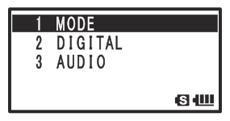</button><figcaption>Figure from page 38</figcaption><dialog id="fig-10"><p>Figure from page 38</p><form method="dialog"><button>Close</button></form></dialog></figure><figure><button aria-label="Enlarge Figure from page 38" class="zoom" data-dialog="fig-11" type="button">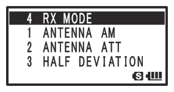</button><figcaption>Figure from page 38</figcaption><dialog id="fig-11"><p>Figure from page 38</p><form method="dialog"><button>Close</button></form></dialog></figure><p>~~<strong>Locking keys and switches</strong>~~</p>
<p>To prevent accidental frequency change during operation, keys, switches and O except
p switch, T, v, P can be locked.</p>
<p>Input the callsign with the numeric keys.
<strong>4</strong> Press p to save your callsign and the screen returns to the
frequency display.</p>
<p>~~<strong>Remark</strong>~~ To cancel the All Reset function, press a key or switch other</p>
<p>than F .</p>
<p>~~<strong>Caution</strong>~~</p>
<p>When the All Reset function is performed, all data such as memory channels registered in the memory
is deleted. Be sure to write it down on paper or back up the data on the microSD memory card (See
pages 138 to 139).</p>
<p>~~<strong>Tip</strong>~~</p>
<p>To return only the Set Mode option settings to default, press P while pressing % and V .</p><p>~~<strong>Communicating Via the Repeater</strong>~~</p>
<p>The transceiver includes an ARS (Automatic Repeater Shift) function which permits communication through the repeater automatically just by setting the receiver to the repeater
frequency.
<strong>1</strong> Set the receive frequency to the repeater frequency.</p>
<p>er.</p>
<p>~~<strong>Tone Calling (1750 Hz)</strong>~~</p>
<p>If your transceiver is FT1XDE (European version), press and hold in the T switch
(just below the p switch) to generates a 1750 Hz burst tone to access the European
repeater. The transmitter will automatically be activated, and a 1750 Hz audio tone will
be superimposed on the carrier. Once access to the repeater has been gained, you may
release the T switch, and use the p switch for activating the transmitter thereafter.
If you need to access the repeaters which requires a 1750 Hz burst tone for access by
the FT1XDR (USA/EXP versions), you can set the T switch to serve as a “Tone Call”
switch instead. To change the configuration of this switch, use Set Mode [8 CONFIG] →</p>
<p>[10 MONI/T-CALL].</p><p>The FT1XDR/DE has been configured, at the factory, for the repeater shifts customary in
the country where it is sold. For the 144 MHz band, this usually will be 600 kHz, while the
430 MHz shift will be 1.6 MHz, 7.6 MHz, or 5 MHz (USA version).
Depending on the part of the band in which you are operating, the repeater shift may be
either downward (−) or upward (+), and one of these icons will appear to the right of the
display frequency on the LCD when repeater shifts have been enabled.</p>
<p>~~<strong>Automatic Repeater Shift (ARS)</strong>~~</p>
<p>The FT1XDR/DE Automatic Repeater Shift feature causes the appropriate repeater shift
to be automatically applied whenever it is tuned into the designated repeater sub-bands.
If the ARS feature does not appear to be working, you may have accidentally disabled it.</p>
<p><strong>To re-enable ARS:</strong>
<strong>1</strong> Press and hold the M for over 1 second to enter the set mode.
<strong>2</strong> Turn the O to select [8 CONFIG].
<strong>3</strong> Press H .
<strong>4</strong> Turn the O to select [14 RPT ARS].
<strong>5</strong> Press H .
<strong>6</strong> Turn the O to select “ON” (to enable Automatic Repeater Shift).
<strong>7</strong> Press the p to save the new setting and exit the Set mode.</p><p>The FT1XDR/DE transceiver provides the following various types of memory channels in
addition to the regular memory channels (numbers 001 to 900).</p>
<p>•• [Home channels] which can be recalled on each frequency band with one touch of a
key. (See page 45)
•• Preset Receiver Memory Channels such as VHF Weather Broadcast Station (10 channels), international VHF (marine) radios (57 channels) and world broadcasts (89 channels) (see pages 51 to 55)
•• 99 (901 to 999) skip search memory channels that allow you to skip unwanted frequencies during VFO scanning (See page 58)
•• 50 sets of memory channels (L01/U01 to L50/U50) for programmable memory channels scanning (PMS) (See page 63)
The operating frequency and other operational information can be registered to each
regular memory channel, home channel, or PMS memory channel:</p>
<ul>
<li>
<p>Operating frequency - Memory tag - Repeater information</p>
</li>
<li>
<p>Tone information - DCS information - Transmission output</p>
</li>
<li>
<p>Memory channel skip information
(The operating mode information is not registered to the memory channels)</p>
</li>
</ul>
<p>Memory channels can be sorted and registered to memory banks according to the intended use. The transceiver allows you to use 24 types of memory banks. A maximum of
100 memory channels can be registered to each memory bank. A name can be assigned
to each memory bank with up to 16 characters. (See page 48)</p>
<p><strong>Memory Channel Configuration of the transceiver</strong></p>
<p><strong>PMS memory channels</strong></p>
<p>(50 sets)</p>
<p><strong>Memory channels</strong></p>
<p>(900 channels)</p>
<p><strong>Skip search memory channels</strong></p>
<p>(99 channels)</p>
<p><strong>Home channels</strong></p>
<p>(11 channels)</p>
<p><strong>Memory banks</strong></p>
<p>(24 banks)
Up to 100 memory channels can be</p>
<p><strong>Preset receiver memory channels</strong></p>
<ul>
<li>Memory channels for short wave broadcasts
(89 channels and international VHF (marine)
radios (57 channels))</li>
</ul><p>~~<strong>Registering to Memory Channel</strong>~~</p>
<p>~~<strong>Caution</strong>~~</p>
<p>The information such as operating frequency that is registered to memory channels can be corrupted
due to wrong operation, static electricity, or electrical noise. Also, it can be erased in the case of a failure
or repair. Be sure to write it down on paper or otherwise save the information (See pages 138 to 139).</p>
<p>The transceiver allows you to use 900 memory channels (memory channel numbers 1 to
900).
<strong>1</strong> Switch to the VFO mode.
<strong>2</strong> Tune in to a frequency by turning O .
Select the frequency you want to register to a memory channel.
<strong>3</strong> Press and hold F over 1 second.
Enters the Memory Channel Registration mode, and the
number of the memory channel next to the memory channel
to which you registered a frequency last blinks.</p>
<p>~~<strong>Remarks</strong>~~ - To cancel the memory channel registration, press the p</p>
<p>switch.</p>
<pre><code>    - To register a frequency to a memory channel specified, Turn O to select the memory
</code></pre>
<p>channel.</p>
<p>The ( icon indicating [The specified memory channel is unregistered] lights, and the</p>
<p>memory channel blinks.</p>
<p>The ) icon indicating [The specified memory channel is registered] lights.</p>
<pre><code>     - Pressing M each time skips memory channels quickly in steps of 100 memory channels.
</code></pre>
<p><strong>4</strong> Press F to complete the memory channel registration. The registered frequency
appears on the LCD.
When registering a frequency to a memory channel already registered, “Overwrite
OK?” appears on the LCD.</p>
<p>~~<strong>Tips</strong>~~</p>
<ul>
<li>
<p>By default, 144.000 MHz is registered to the memory channel 1. It can be changed to another frequency, but not be deleted.</p>
</li>
<li>
<p>The frequency which has been registered to a memory channel can be overwritten with a new frequency.
When you attempt to register a new frequency to a memory channel, an unregistered memory channel appears.</p>
</li>
<li>
<p>To display the lowest unregistered memory number when you register a frequency to a memory
channel, press and hold M over 1 second to enter the Set mode, and then select [3 MEMORY] →[6
MEMORY WRITE].</p>
</li>
<li>
<p>To inhibit registration to all memory channels, press and hold M over 1 second to enter the Set
mode, and then select [3 MEMORY] → [4 MEMORY PROTECT].</p>
</li>
</ul><p>~~<strong>Split Memory</strong>~~</p>
<p>Two different frequencies, one for reception and other for transmission, can be registered
to a memory channel.
<strong>1</strong> Register a receive frequency to a memory channel.</p>
<p>~~<strong>Remark</strong>~~ See “Registering to Memory Channel” above.
<strong>2</strong> Select a transmit frequency in the VFO mode.
<strong>3</strong> Press and hold F over 1 second.
<strong>4</strong> Turn O to select the memory channel number that you registered the receive frequency to.
<strong>5</strong> While pressing p, press F to save the Split memory
channel.
When you recall the memory channel to which you registered two different frequencies (one for receive and the
other for transmit), the @ appears on the LCD</p>
<p>~~<strong>Recalling a Memory Channel</strong>~~</p>
<p>Recall a registered memory channel using the following procedure:
<strong>1</strong> Press V to enter the Memory mode and the memory
channel you used last appears on the LCD.
<strong>2</strong> Turn O to select the desired memory channel.
Select the memory channel to use.</p>
<p>~~<strong>Remarks</strong>~~   - You can directly recall a memory channel using numeric</p>
<p>keys.</p>
<p>To recall memory channel 15: Press 15H</p>
<pre><code>     - Pressing F and turning O allows you to skip memory channels quickly in steps of 10
</code></pre>
<p>memory channels.
<strong>3</strong> Press V to exit the Memory mode, and the frequency selected in the VFO mode
appears.</p>
<p>~~<strong>Tips</strong>~~</p>
<ul>
<li>
<p>Unregistered memory channels are skipped.</p>
</li>
<li>
<p>By default, a priority memory channel, which is used as dual receive priority memory channel, is set to
the memory channel number 1. [P] appears on the upper right corner of the priority memory channel
number (See page 75).</p>
</li>
<li>
<p>The frequency registered to a memory channel can be transferred to the VFO operating band in the
following procedure:
Press and hold F over 1 second. → Press V → “OVERWRITE OK?” appears → Press V .</p>
</li>
<li>
<p>To place the FT1XDR/DE transceiver in the Memory Channel only mode, use the following procedure,
which allows the use of memory channels only.
Press V while pressing P to turn on the transceiver.
To cancel the Memory Channel Only mode, press P while pressing V again.</p>
</li>
</ul><p>~~<strong>Recalling Home Channel</strong>~~</p>
<p><strong>1</strong> Press F and then 4 .
The home channel of the currently selected frequency band appears on the LCD.</p>
<p>~~<strong>Tips</strong>~~   - For the relationship between the frequency bands and the home channel frequencies, see the</p>
<p>table on the next page.</p>
<pre><code>   - Selecting a frequency by turning O allows you to return to
</code></pre>
<p>the VFO mode.</p>
<table>
<thead>
<tr>
<th>Frequency band</th>
<th>Frequency</th>
<th>Frequency band</th>
<th>Frequency</th>
</tr>
</thead>
<tbody>
<tr>
<td>AM BC Band</td>
<td>540 kHz</td>
<td>174 to 222 MHz band</td>
<td>174.000 MHz</td>
</tr>
<tr>
<td>FM BC Band</td>
<td>76.000 (88.000) MHz</td>
<td>(INFO band (1))</td>
<td>222.000 MHz</td>
</tr>
<tr>
<td>(SW band)</td>
<td>1.800 MHz</td>
<td>430 MHz band</td>
<td>446.000 (430.000) MHz</td>
</tr>
<tr>
<td>50 MHz</td>
<td>50.000 MHz</td>
<td>470 to 770 MHz band</td>
<td>470.000 MHz</td>
</tr>
<tr>
<td>(AIR band)</td>
<td>108.000 MHz</td>
<td>Information radio band (2)</td>
<td>860.000 MHz</td>
</tr>
<tr>
<td>144 MHz band</td>
<td>146.520 (144.000) MHz</td>
<td>―</td>
<td>―</td>
</tr>
</tbody>
</table>
<p>( ): EXP/European version</p>
<p><strong>Returning to the Previous Frequency</strong>
<strong>1</strong> Press F and then 4
The frequency used before recalling the home channel appears on the LCD.</p>
<ul>
<li><strong>Changing Home Channel Frequency</strong>
You can change a default home channel frequency.
<strong>1</strong> Switch to the VFO mode.
<strong>2</strong> Turn O to select a frequency.
Select a frequency to change.
<strong>3</strong> Press and hold F for over 1 second to enter the Write mode.
<strong>4</strong> Press D .
“OVERWRITE?” appears on the LCD for about 5 seconds.
<strong>5</strong> Press D .
When the home channel frequency has been overwritten by
a new frequency, the home channel frequency of the selected frequency band is changed.</li>
</ul><p>~~<strong>Deleting Memory Channel</strong>~~</p>
<p><strong>1</strong> Switch to the Memory mode.
<strong>2</strong> Press and hold F for over 1 second.
<strong>3</strong> Turn O to select the memory channel to delete.
<strong>4</strong> Press H .
“MASK?” appears on the LCD for about 3 seconds.</p>
<p>~~<strong>Remark</strong>~~ To cancel the memory channel deletion operation, press</p>
<p>F .
<strong>5</strong> Press H to delete the memory channel.</p>
<p>~~<strong>Remark</strong>~~ To delete other memory channels, repeat steps 2 through</p>
<p>5.</p>
<p>~~<strong>Caution</strong>~~</p>
<p>�Memory channel 1 cannot be deleted.</p>
<p>~~<strong>Tips</strong>~~</p>
<p>The memory channel specified as a priority memory channel cannot be deleted. To delete a priority
memory channel, specify it as a regular memory channel, then delete it.</p>
<p><strong>Restoring Deleted Memory Channel</strong></p>
<p>You can restore a deleted memory channel.
<strong>1</strong> Switch to the Memory mode.
The last used memory channel appears.
<strong>2</strong> Press and hold F for over 1 second.
<strong>3</strong> Turn O to select the memory channel to restore.
<strong>4</strong> Press H to restore the deleted memory channel.</p>
<p>~~<strong>Using Memory Tag</strong>~~</p>
<p>Memory channels and home channels can be assigned a name (memory tag) such as a
callsign or broadcast station name. A memory tag can be specified with up to 16 characters. The following types of characters can be entered:</p>
<ul>
<li>
<p>Alphabetic characters (uppercase and lowercase characters)</p>
</li>
<li>
<p>Numeric characters (numbers) - Symbols</p>
</li>
</ul><figure><button aria-label="Enlarge Figure from page 46" class="zoom" data-dialog="fig-12" type="button">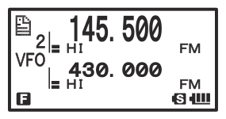</button><figcaption>Figure from page 46</figcaption><dialog id="fig-12"><p>Figure from page 46</p><form method="dialog"><button>Close</button></form></dialog></figure><figure><button aria-label="Enlarge Figure from page 46. 䎰䎤䎶䎮䎢" class="zoom" data-dialog="fig-13" type="button">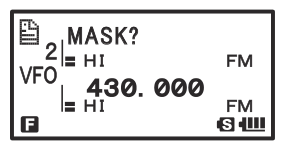</button><figcaption>Figure from page 46. 䎰䎤䎶䎮䎢</figcaption><dialog id="fig-13"><p>Figure from page 46. 䎰䎤䎶䎮䎢</p><form method="dialog"><button>Close</button></form></dialog></figure><p><strong>Assigning a Name to a Memory Channel</strong></p>
<p>Example: Assignment of name [YAESU]
<strong>1</strong> Switch to the Memory mode.
<strong>2</strong> Recall the memory channel to assign a name.
<strong>3</strong> Press and hold M for over 1 second to enter the Set mode.
<strong>4</strong> Turn O to select [3 MEMORY].
<strong>5</strong> Press H .
<strong>6</strong> Turn O to select [3 MEMORY NAME].
<strong>7</strong> Press H .
The cursor appears on the LCD.
<strong>8</strong> Press 9 8 times to select the numeric character [Y].
<strong>9</strong> Press H to move the cursor to the next character position.
<strong>10</strong> Press 2 5 times to select the numeric character [A].
<strong>11</strong> Press H to move the cursor to the next character position.
<strong>12</strong> Press 3 6 times to select the numeric character [E].
<strong>13</strong> Press H to move the cursor to the next character position.
<strong>14</strong> Press 7 9 times to select the numeric character [S].
<strong>15</strong> Press H to move the cursor to the next character position.
<strong>16</strong> Press 8 6times to select the numeric character [U].
<strong>17</strong> Press p to save the memory tag to the memory channel and exit the Set mode.</p>
<p>~~<strong>Tips</strong>~~</p>
<ul>
<li>
<p>To delete a character, press F . The character is deleted and the cursor moves to left.</p>
</li>
<li>
<p>Pressing 0 while entering alphanumeric characters (A,0) allows you to select 0, (space), –, /, ?,
!, ., : and #</p>
</li>
<li>
<p>When entering the same character repeatedly, press H to move the cursor.</p>
</li>
<li>
<p>When assigning a name to a home channel, recall the target home channel by first executing step 1
(see above).</p>
</li>
</ul>
<p><strong>Displaying Memory Tag</strong></p>
<p>During mono band operation, the tag (name) of the memory channel or home channel can
be displayed using the following procedure:
<strong>1</strong> Switch to the Memory mode.</p>
<p>(name) appears under the frequency.</p>
<p>Tag (name) display</p><p>Registered memory channels can be sorted according to the intended use. The transceiver allows you to use 24 types of memory banks. A maximum of 100 memory channels
can be registered to each memory bank.
One memory channel can be registered in two or more memory banks. If the memory
channel registered in any memory bank is changed or updated, the content of the corresponding memory channel in the other memory banks is automatically changed or updated.</p>
<p>~~<strong>Registering a Memory Channel in a Memory Bank</strong>~~</p>
<p><strong>1</strong> Switch to the Memory mode.
<strong>2</strong> Turn O to select a memory channel.
Select the memory channel to register in a memory bank.
<strong>3</strong> Press and hold F for over 1 second to enter the Memory
Write mode.
<strong>4</strong> Turn O to select a memory bank number.
Select the number (B1 to B24) of the memory bank to register the memory channel.
<strong>5</strong> Press F to register the memory channel in the memory
bank.</p>
<p>~~<strong>Tips</strong>~~</p>
<ul>
<li>
<p>See “Registering Your Favorite Preset Receiver Memory Channels in Memory Bank” on page 51.</p>
</li>
<li>
<p>When selecting a memory bank using O, the memory channel, skip search memory channel, and
programmable memory channel appear on the LCD as well. They appear repeatedly on the LCD in
the following order:
1 ⇔ 2 ⇔ 3 ⇔ ...L50 ⇔ U50 ⇔ BANK1 ⇔ BANK2 ⇔ ...BANK24 ⇔ 1 ⇔ 2...
When the displayed number is close to [1], turning O counterclockwise will display memory banks.
When the displayed number is close to [U50], turning O clockwise will display memory banks.</p>
</li>
<li>
<p>Pressing M displays memory banks quickly in steps of 100 memory channels. If the bank name was
changed, the changed bank name appears.</p>
</li>
<li>
<p>The icon appears for a memory bank in which no memory channel is registered, and the icon
appears for a memory bank in which at least one memory channel is registered.</p>
</li>
</ul><p>~~<strong>Recalling Memory Bank</strong>~~</p>
<p><strong>1</strong> Switch to the Memory mode.
<strong>2</strong> Press B .
Pressing B each time toggles between the memory
channel number and bank number.
<strong>3</strong> Press F and then B .
<strong>4</strong> Turn O to select a memory bank.
Select a memory bank.
<strong>5</strong> Press B .
The memory bank to be used is determined.
<strong>6</strong> Turn O to select a memory channel.
Select a memory channel in the memory bank.</p>
<p>~~<strong>Remarks</strong>~~   - To select another memory bank, repeat steps 3 through 5.</p>
<pre><code>    - To return to the Regular Memory Channel mode, press
</code></pre>
<p>B .</p>
<p>~~<strong>Canceling Memory Channel Registration in</strong>~~
~~<strong>Memory Bank</strong>~~</p>
<p>Bank Memory channel</p>
<p>Bank</p>
<p><strong>1</strong> Recall the memory bank in which the memory channel registration is to be deleted.
See “Recalling Memory Bank” above.
<strong>2</strong> Turn O to select a memory channel that is to be canceled from the Memory bank.
<strong>3</strong> Press and hold F over 1 second, and then press H .
Registration of memory channel in the memory bank is cancelled, returning to the
memory bank display state. If no other memory channel is registered in the memory
bank, the memory bank having the lowest bank number appears.</p>
<p>~~<strong>Assigning Name to Memory Bank</strong>~~</p>
<p>A memory bank can be specified with up to 16 characters.
The following types of characters can be entered:</p>
<ul>
<li>
<p>Alphabetic characters (uppercase and lowercase characters)</p>
</li>
<li>
<p>Numeric characters (numbers) - Symbols
Example: 144Mz band
<strong>1</strong> Press and hold M for over 1 second to enter the Set
mode.
<strong>2</strong> Turn O to select [3 MEMORY].
<strong>3</strong> Press H .</p>
</li>
</ul><figure><button aria-label="Enlarge Figure from page 49" class="zoom" data-dialog="fig-14" type="button"></button><figcaption>Figure from page 49</figcaption><dialog id="fig-14"><p>Figure from page 49</p><form method="dialog"><button>Close</button></form></dialog></figure><p><strong>4</strong> Turn O to select [2 BANK NAME].
<strong>5</strong> Press H .
<strong>6</strong> Turn O to select a memory bank.
Select the number of the memory bank to which you want to
assign a name.
<strong>7</strong> Press H to move the cursor to the first character of the
bank name.
<strong>8</strong> Press 1 to select the numeric character [1].
<strong>9</strong> Press H to move the cursor to the next character position.
<strong>10</strong> Press 4 7 times to select the numeric character [4].
Pressing 4 allows you to select the following characters
sequentially:
G → H → I → g → h → i → 4 → G
<strong>11</strong> Press H to move the cursor to the next character position.
<strong>12</strong> Press the 4 key 7 times to select the numeric character</p>
<p>[4].
Pressing the 4 key allows you to select the following characters sequentially:
G → H → I → g→ h → i → 4 → G
<strong>13</strong> Press H to move the cursor to the next character position.
<strong>14</strong> Press 6 to select [M].
Pressing 6 allows you to select the following characters
sequentially:
M → N → O → m → n → o → 6 → M
<strong>15</strong> Press H to move the cursor to the next character position.
<strong>16</strong> Select [H].
<strong>17</strong> Press [9] 8 times.
Select [z].
<strong>18</strong> Press p to save the name of memory bank and exit the Set
mode.</p>
<p>Enter a name (First digit)</p>
<p>~~<strong>Tips</strong>~~</p>
<ul>
<li>
<p>To delete a character, press F . A character is deleted and the cursor moves to left.</p>
</li>
<li>
<p>Pressing 0 while entering alphanumeric characters (A,0) allows you to select 0, (space), –, /, ?,
!, ., : and #</p>
</li>
<li>
<p>When entering the same type of characters repeatedly, press H to move the cursor.</p>
</li>
</ul><p>Frequencies of SP1 Weather Broadcast (10 channels). SP2 International VHF (marine)
radio (57 channels) and SP3 Shortwave Broadcasts (89 channels) are preset in the preset receiver memory channels. These channels can be selected in advance from region
to region.</p>
<p><strong>• VHF Weather Broadcast Station preset receiver memory channels</strong></p>
<p><strong>[SP1 WX CH].......................................................................................................Page 52</strong>
The frequencies (10 channel) used for the VHF Weather Broadcast Station are registered to the dedicated preset receiver memory channels.</p>
<p><strong>• International VHF (marine) radio preset receiver memory channels</strong></p>
<p><strong>[SP2 INTVHF]......................................................................................................Page 53</strong>
The frequencies (57 channel) used for the international VHF (marine) radio are registered to the dedicated preset receiver memory channels.</p>
<p><strong>• World broadcast preset receiver memory channels</strong></p>
<p><strong>[SP3 SW].............................................................................................................Page 54</strong>
You can listen to major broadcasts from around the world (total 89 channels).</p>
<p>~~<strong>Registering Your Favorite Preset Receiver Memory Channels in</strong>~~
~~<strong>Memory Bank</strong>~~</p>
<p>You can register your favorite preset receiver memory channel in a memory bank.
<strong>1</strong> Turn O to select your favorite preset receiver memory channel.
<strong>2</strong> Press and hold F for over 1 second to enter the Memory
Bank Write mode.
The f blinks on the LCD.</p>
<p>~~<strong>Remark</strong>~~ To cancel registration, press p .
<strong>3</strong> Turn O to select the memory bank in which you want to
register your favorite preset receiver memory channel.
<strong>4</strong> Press the F to register the preset receiver memory channel in the memory bank,
and the frequency appears on the LCD.</p>
<p>~~<strong>Recalling Preset Receiver Memory Channel to Listen to the Weath-</strong>~~
~~<strong>er Broadcast</strong>~~</p>
<p><strong>1</strong> Press A to set A-band to the operating band.
<strong>2</strong> Press F and then 3 to enter the Preset Receiver mode.
<strong>3</strong> Press B .
Select [SP1 WX CH].
<strong>4</strong> Turn O to select a preset Weather Broadcast receiver memory channel to listen to.</p>
<p>~~<strong>Remark</strong>~~ To stop reception of the Weather Broadcast, press 3 .</p><p>~~<strong>Recalling Preset Receiver Memory Channel to Listen to the Interna-</strong>~~
~~<strong>tional VHF (Marine) Radio</strong>~~</p>
<p>The frequencies (57 channels) used for the international VHF (marine) radio are registered to the dedicated preset receiver memory channels.
<strong>1</strong> Press A to set A-band to the operating band.
<strong>2</strong> Press F and then 3 to enter the Preset Receiver mode.</p>
<p>Select [SP2 INTVHF].
<strong>4</strong> Turn O to select a preset VHF receiver memory channel
to listen to.</p>
<p>~~<strong>Remark</strong>~~ To stop reception of the international VHF radio, press</p>
<p>3 .</p>
<p>In the event of extreme weather disturbances, such as storms and hurricanes, the
NOAA (National Oceanic and Atmospheric Administration) sends a weather alert accompanied by a 1050 Hz tone and subsequent weather report on one of the NOAA
weather channels. You may enable the Weather Alert tone via Set Mode option</p>
<p>[4 SIGNALING] → [14 WX ALERT], if desired (See page 124).</p>
<p>~~<strong>Tips</strong>~~</p>
<ul>
<li>
<p>The preset receiver memory channel cannot be rewritten with the data of another frequency.</p>
</li>
<li>
<p>To scan the preset receiver memory channels toward higher channel numbers, press F and then
2 .
Turning O one click counterclockwise scans the preset receiver memory channels toward lower
channel numbers. If a signal is received during scanning, the scanning is suspended for 5 seconds.</p>
</li>
<li>
<p>The operation that is performed when scanning stops can be set by following the procedure described
in “Selecting a Reception Method When Scanning Stops” on page 59.</p>
</li>
</ul>
<table>
<thead>
<tr>
<th>CH</th>
<th>Frequency</th>
<th>CH</th>
<th>Frequency</th>
</tr>
</thead>
<tbody>
<tr>
<td>1</td>
<td>162.550 MHz</td>
<td>6</td>
<td>162.500 MHz</td>
</tr>
<tr>
<td>2</td>
<td>162.400 MHz</td>
<td>7</td>
<td>162.525 MHz</td>
</tr>
<tr>
<td>3</td>
<td>162.475 MHz</td>
<td>8</td>
<td>161.650 MHz</td>
</tr>
<tr>
<td>4</td>
<td>162.425 MHz</td>
<td>9</td>
<td>161.775 MHz</td>
</tr>
<tr>
<td>5</td>
<td>162.450 MHz</td>
<td>10</td>
<td>163.275 MHz</td>
</tr>
</tbody>
</table><p><strong>Frequencies of International VHF (Marine)</strong>
<strong>Radio registered to the preset receiver memory channels</strong></p>
<table>
<thead>
<tr>
<th>Memory channel No.</th>
<th>Frequency (MHz)</th>
<th>Col3</th>
<th>Memory channel No.</th>
<th>Frequency (MHz)</th>
<th>Col6</th>
</tr>
</thead>
<tbody>
<tr>
<td>1</td>
<td>156.050</td>
<td>160.650*</td>
<td>15</td>
<td>156.750</td>
<td>156.750</td>
</tr>
<tr>
<td>2</td>
<td>156.100</td>
<td>160.700*</td>
<td>16</td>
<td>156.800</td>
<td>156.800</td>
</tr>
<tr>
<td>3</td>
<td>156.150</td>
<td>160.750*</td>
<td>17</td>
<td>156.850</td>
<td>156.850</td>
</tr>
<tr>
<td>4</td>
<td>156.200</td>
<td>160.800*</td>
<td>18</td>
<td>156.900</td>
<td>161.500*</td>
</tr>
<tr>
<td>5</td>
<td>156.250</td>
<td>160.850*</td>
<td>19</td>
<td>156.950</td>
<td>161.550*</td>
</tr>
<tr>
<td>6</td>
<td>156.300</td>
<td>156.300</td>
<td>20</td>
<td>157.000</td>
<td>161.600*</td>
</tr>
<tr>
<td>7</td>
<td>156.350</td>
<td>160.950*</td>
<td>21</td>
<td>157.050</td>
<td>161.650*</td>
</tr>
<tr>
<td>8</td>
<td>156.400</td>
<td>156.400</td>
<td>22</td>
<td>157.100</td>
<td>161.700*</td>
</tr>
<tr>
<td>9</td>
<td>156.450</td>
<td>156.450</td>
<td>23</td>
<td>157.150</td>
<td>161.750*</td>
</tr>
<tr>
<td>10</td>
<td>156.500</td>
<td>156.500</td>
<td>24</td>
<td>157.200</td>
<td>161.800*</td>
</tr>
<tr>
<td>11</td>
<td>156.550</td>
<td>156.550</td>
<td>25</td>
<td>157.250</td>
<td>161.850*</td>
</tr>
<tr>
<td>12</td>
<td>156.600</td>
<td>156.600</td>
<td>26</td>
<td>157.300</td>
<td>161.900*</td>
</tr>
<tr>
<td>13</td>
<td>156.650</td>
<td>156.650</td>
<td>27</td>
<td>157.350</td>
<td>161.950*</td>
</tr>
<tr>
<td>14</td>
<td>156.700</td>
<td>156.700</td>
<td>28</td>
<td>157.400</td>
<td>162.000*</td>
</tr>
</tbody>
</table>
<table>
<thead>
<tr>
<th>Memory No.</th>
<th>Frequency (MHz)</th>
<th>Col3</th>
<th>Memory No.</th>
<th>Frequency (MHz)</th>
<th>Col6</th>
</tr>
</thead>
<tbody>
<tr>
<td>60</td>
<td>156.025</td>
<td>160.625*</td>
<td>74</td>
<td>156.725</td>
<td>156.725</td>
</tr>
<tr>
<td>61</td>
<td>156.075</td>
<td>160.675*</td>
<td>75</td>
<td>156.775</td>
<td>156.775</td>
</tr>
<tr>
<td>62</td>
<td>156.125</td>
<td>160.725*</td>
<td>76</td>
<td>156.825</td>
<td>156.825</td>
</tr>
<tr>
<td>63</td>
<td>156.175</td>
<td>160.775*</td>
<td>77</td>
<td>156.875</td>
<td>156.875</td>
</tr>
<tr>
<td>64</td>
<td>156.225</td>
<td>160.825*</td>
<td>78</td>
<td>156.955</td>
<td>161.550*</td>
</tr>
<tr>
<td>65</td>
<td>156.275</td>
<td>160.875*</td>
<td>79</td>
<td>156.975</td>
<td>161.575*</td>
</tr>
<tr>
<td>66</td>
<td>156.325</td>
<td>160.925*</td>
<td>80</td>
<td>157.025</td>
<td>161.625*</td>
</tr>
<tr>
<td>67</td>
<td>156.375</td>
<td>156.375</td>
<td>81</td>
<td>157.075</td>
<td>161.675*</td>
</tr>
<tr>
<td>68</td>
<td>156.425</td>
<td>156.425</td>
<td>82</td>
<td>157.125</td>
<td>161.725*</td>
</tr>
<tr>
<td>69</td>
<td>156.475</td>
<td>156.475</td>
<td>83</td>
<td>157.175</td>
<td>161.775*</td>
</tr>
<tr>
<td>70</td>
<td>156.525</td>
<td>156.525</td>
<td>84</td>
<td>157.225</td>
<td>161.825*</td>
</tr>
<tr>
<td>71</td>
<td>156.575</td>
<td>156.575</td>
<td>85</td>
<td>157.275</td>
<td>161.875*</td>
</tr>
<tr>
<td>72</td>
<td>156.625</td>
<td>156.625</td>
<td>86</td>
<td>157.325</td>
<td>161.925*</td>
</tr>
<tr>
<td>73</td>
<td>156.675</td>
<td>156.675</td>
<td>87</td>
<td>157.375</td>
<td>161.975*</td>
</tr>
<tr>
<td>–</td>
<td>–</td>
<td>–</td>
<td>88</td>
<td>157.425</td>
<td>162.025*</td>
</tr>
</tbody>
</table>
<p>~~<strong>Remark</strong>~~</p>
<ul>
<li>indicates the frequency of the VHF Marine base station. For example, if the preset receiver memory
channel 1 is selected, the base station frequency 160.650 MHz appears and @ lights. Pressing F
and then 5 displays the Ship Station frequency 160.650 MHz and @ lights The base station frequency minus 4.6 MHz equals the Ship Station frequency, and duplex operation starts. To return to the
base station frequency, press F and then 5 .</li>
</ul><p>~~<strong>Recalling Preset Receiver Memory Channel to Listen to the</strong>~~
~~<strong>World Broadcast</strong>~~</p>
<p>The frequencies (89 channels) used for the world broadcast are registered to the dedicated
preset receiver memory channels.
<strong>1</strong> Press A to set A-band to the operating band.
<strong>2</strong> Press F and then 3 to enter the Preset Receiver mode.
<strong>3</strong> Press B .
Select [SP3 SW].
<strong>4</strong> Turn O to select a preset world Broadcast receiver memory channel to listen to.</p>
<p>~~<strong>Remark</strong>~~ To stop reception of the world broadcast, press 3 .</p>
<p>�Depending on time zone or signal strength, Broadcasts may not be received.
�There are broadcast station other than those listed below that can be received. In addition, depending
on the broadcast station, the frequency may be changed, off-air, or have become abolished. For
details, please refer to a commercially sold frequencies list.</p>
<p><strong>Worldwide short wave broadcast</strong></p>
<p>|CH
Number|Frequency
(MHz)|Name|Broadcast Station
Name|Col5|CH
Number|Frequency
(MHz)|Name|Broadcast Station
Name|
|---|---|---|---|---|---|---|---|---|
|1|6.030|VOA|USA||25|7.170|TURKEY|Turkey|
|2|6.160|VOA|USA||26|7.270|TURKEY|Turkey|
|3|9.760|VOA|USA||27|9.560|TURKEY|Turkey|
|4|11.965|VOA|USA||28|11.690|TURKEY|Turkey|
|5|9.555|CANADA|Canada||29|9.660|VATICAN|Vatican|
|6|9.660|CANADA|Canada||30|11.625|VATICAN|Vatican|
|7|11.715|CANADA|Canada||31|11.830|VATICAN|Vatican|
|8|11.955|CANADA|Canada||32|15.235|VATICAN|Vatican|
|9|6.195|BBC|UK||33|5.955|NEDRLAND|Netherlands|
|10|9.410|BBC|UK||34|6.020|NEDRLAND|Netherlands|
|11|12.095|BBC|UK||35|9.895|NEDRLAND|Netherlands|
|12|15.310|BBC|UK||36|11.655|NEDRLAND|Netherlands|
|13|6.090|FRANCE|France||37|5.985|CZECH|Czech Republic|
|14|9.790|FRANCE|France||38|6.105|CZECH|Czech Republic|
|15|11.670|FRANCE|France||39|9.455|CZECH|Czech Republic|
|16|15.195|FRANCE|France||40|11.860|CZECH|Czech Republic|
|17|6.000|DW|Germany||41|9.780|PORTUGAL|Portugal|
|18|6.075|DW|Germany||42|11.630|PORTUGAL|Portugal|
|19|9.650|DW|Germany||43|15.550|PORTUGAL|Portugal|
|20|9.735|DW|Germany||44|21.655|PORTUGAL|Portugal|
|21|5.990|ITALY|Italy||45|9.650|SPAIN|Spain|
|22|9.575|ITALY|Italy||46|11.880|SPAIN|Spain|
|23|9.675|ITALY|Italy||47|11.910|SPAIN|Spain|</p><p>CH
Number</p>
<p>Frequency</p>
<p>Frequency Broadcast Station</p>
<p>Name
(MHz) Name</p>
<p>Name</p>
<p>CH
Number</p>
<p>Frequency</p>
<p>Frequency Broadcast Station</p>
<p>Name
(MHz) Name</p>
<p>Name</p>
<table>
<thead>
<tr>
<th>49</th>
<th>6.055</th>
<th>NIKKEI</th>
<th>Japan (Nikkei)</th>
<th>Col5</th>
<th>71</th>
<th>9.595</th>
<th>INDIA</th>
<th>India</th>
</tr>
</thead>
<tbody>
<tr>
<td>50</td>
<td>7.315</td>
<td>NORWAY</td>
<td>Norway</td>
<td></td>
<td>72</td>
<td>11.620</td>
<td>INDIA</td>
<td>India</td>
</tr>
<tr>
<td>51</td>
<td>9.590</td>
<td>NORWAY</td>
<td>Norway</td>
<td></td>
<td>73</td>
<td>15.020</td>
<td>INDIA</td>
<td>India</td>
</tr>
<tr>
<td>52</td>
<td>9.925</td>
<td>NORWAY</td>
<td>Norway</td>
<td></td>
<td>74</td>
<td>7.190</td>
<td>CHINA</td>
<td>China</td>
</tr>
<tr>
<td>53</td>
<td>9.985</td>
<td>NORWAY</td>
<td>Norway</td>
<td></td>
<td>75</td>
<td>7.405</td>
<td>CHINA</td>
<td>China</td>
</tr>
<tr>
<td>54</td>
<td>6.065</td>
<td>SWEDEN</td>
<td>Sweden</td>
<td></td>
<td>76</td>
<td>9.785</td>
<td>CHINA</td>
<td>China</td>
</tr>
<tr>
<td>55</td>
<td>9.490</td>
<td>SWEDEN</td>
<td>Sweden</td>
<td></td>
<td>77</td>
<td>11.685</td>
<td>CHINA</td>
<td>China</td>
</tr>
<tr>
<td>56</td>
<td>15.240</td>
<td>SWEDEN</td>
<td>Sweden</td>
<td></td>
<td>78</td>
<td>6.135</td>
<td>KOREA</td>
<td>South Korea</td>
</tr>
<tr>
<td>57</td>
<td>17.505</td>
<td>SWEDEN</td>
<td>Sweden</td>
<td></td>
<td>79</td>
<td>7.275</td>
<td>KOREA</td>
<td>South Korea</td>
</tr>
<tr>
<td>58</td>
<td>6.120</td>
<td>FINLAND</td>
<td>Finland</td>
<td></td>
<td>80</td>
<td>9.570</td>
<td>KOREA</td>
<td>South Korea</td>
</tr>
<tr>
<td>59</td>
<td>9.560</td>
<td>FINLAND</td>
<td>Finland</td>
<td></td>
<td>81</td>
<td>13.670</td>
<td>KOREA</td>
<td>South Korea</td>
</tr>
<tr>
<td>60</td>
<td>11.755</td>
<td>FINLAND</td>
<td>Finland</td>
<td></td>
<td>82</td>
<td>6.165</td>
<td>JAPAN</td>
<td>Japan</td>
</tr>
<tr>
<td>61</td>
<td>15.400</td>
<td>FINLAND</td>
<td>Finland</td>
<td></td>
<td>83</td>
<td>7.200</td>
<td>JAPAN</td>
<td>Japan</td>
</tr>
<tr>
<td>62</td>
<td>5.920</td>
<td>RUSSIA</td>
<td>Russia</td>
<td></td>
<td>84</td>
<td>9.750</td>
<td>JAPAN</td>
<td>Japan</td>
</tr>
<tr>
<td>63</td>
<td>5.940</td>
<td>RUSSIA</td>
<td>Russia</td>
<td></td>
<td>85</td>
<td>11.860</td>
<td>JAPAN</td>
<td>Japan</td>
</tr>
<tr>
<td>64</td>
<td>7.200</td>
<td>RUSSIA</td>
<td>Russia</td>
<td></td>
<td>86</td>
<td>5.995</td>
<td>AUSTRALI</td>
<td>Australia</td>
</tr>
<tr>
<td>65</td>
<td>12.030</td>
<td>RUSSIA</td>
<td>Russia</td>
<td></td>
<td>87</td>
<td>9.580</td>
<td>AUSTRALI</td>
<td>Australia</td>
</tr>
<tr>
<td>66</td>
<td>7.465</td>
<td>ISRAEL</td>
<td>Israel</td>
<td></td>
<td>88</td>
<td>9.660</td>
<td>AUSTRALI</td>
<td>Australia</td>
</tr>
<tr>
<td>67</td>
<td>11.585</td>
<td>ISRAEL</td>
<td>Israel</td>
<td></td>
<td>89</td>
<td>12.080</td>
<td>AUSTRALI</td>
<td>Australia</td>
</tr>
<tr>
<td>68</td>
<td>15.615</td>
<td>ISRAEL</td>
<td>Israel</td>
<td>Reception Mode: AM</td>
<td>Reception Mode: AM</td>
<td>Reception Mode: AM</td>
<td>Reception Mode: AM</td>
<td>Reception Mode: AM</td>
</tr>
<tr>
<td>69</td>
<td>17.535</td>
<td>ISRAEL</td>
<td>Israel</td>
<td>Israel</td>
<td>Israel</td>
<td>Israel</td>
<td>Israel</td>
<td>Israel</td>
</tr>
<tr>
<td>70</td>
<td>6.045</td>
<td>INDIA</td>
<td>India</td>
<td>India</td>
<td>India</td>
<td>India</td>
<td>India</td>
<td>India</td>
</tr>
</tbody>
</table><p>The FT1XDR/DE supports the following four scan modes:</p>
<p>(1) VFO Scan</p>
<p>(2) Memory Channel Scan</p>
<p>(3) Programmable Memory Channel Scan</p>
<p>(4) Selected Memory Channel Scan</p>
<p>~~<strong>VFO Scan</strong>~~</p>
<p><strong>1</strong> Switch to the VFO mode, and then select a band to scan.
<strong>2</strong> Press F and then 2 to start scanning (SCAN) toward
higher frequencies.</p>
<p>~~<strong>Tips</strong>~~ When a signal is received during scanning, the decimal point</p>
<p>blinks.</p>
<p>Turn O clockwise: Scanning is performed toward higher fre
quencies.</p>
<p>Turn O counterclockwise: Scanning is performed toward lower</p>
<p>frequencies.</p>
<p>the decimal point blinks.</p>
<p>When a signal is received during scanning, a beep is emitted and its frequency appears for 5
seconds. When scanning is suspended, the decimal point blinks and the LCD stays lit. After
receiving the signal for 5 seconds, scanning resumes.</p>
<p>The range for scanning can be selected by selecting the Set mode options [5 SCAN WIDTH]
and then [5 SCAN] .</p><p><strong>Canceling Scanning</strong></p>
<p>To cancel scanning, press p .</p>
<p><strong>Skipping a Frequency You Do Not Want to Scan (Skip Search Memory)</strong></p>
<p>Scanning may stop at a frequency that you do not want to receive. Such a frequency can
be skipped by registering it to the [skip search memory channels]. Up to 99 frequencies
can be saved in the skip search memory channels (memory channels 901 to 999).</p><p><strong>Specifying the Frequency You Do Not Want to Scan</strong>
<strong>1</strong> Start VFO scanning.
Start VFO scanning with reference to [VFO Scanning] on page 56.
<strong>2</strong> When scanning stops at a frequency you do not want to receive, press and hold F
for over 1 second.
The number of the next unregistered skip search memory channel will blink.</p>
<p>~~<strong>Tips</strong>~~ Turning O allows you to specify other skip search memory channels.
<strong>3</strong> Press F to save (register) the frequency to the skip search memory channel, and
resume scanning.</p>
<p>~~<strong>Tips</strong>~~   - You can register a frequency you do not want to receive to a skip search memory channel by</p>
<p>using the following procedure in advance:</p>
<p><strong>1</strong> In the VFO mode, tune in to the frequency you do not want to scan.</p>
<p><strong>2</strong> Press and hold F for over 1 second.</p>
<p><strong>3</strong> Turn O to select a skip search memory channel.</p>
<p><strong>4</strong> Press F to save (register) the frequency to the skip search memory channel.</p>
<ul>
<li>To stop scanning, press p .</li>
</ul>
<p><strong>Deleting a Frequency Registered to the Skip Search Memory Channel</strong></p>
<p>The frequency registered to the skip search memory channel can be deleted in the following procedure. After it is deleted the frequency is scanned.
<strong>1</strong> Switch to the Memory mode.
<strong>2</strong> Press and hold F for over 1 second.
<strong>3</strong> Turn O to select a skip search memory channel from which you wish to delete the
registered frequency.
Select the skip search memory channel (901-999) from which the registered frequency is to be deleted.
When selecting a skip search memory channel number, pressing M allows you to
skip memory channel numbers in steps of 100 memory channel numbers.
<strong>4</strong> Press H .</p>
<p>[DELETE OK?] appears on the LCD.
<strong>5</strong> Press H to delete the registered frequency from the skip search memory channel.</p>
<p>~~<strong>Tip</strong>~~ To delete another frequency from the skip search memory channel, repeat steps 2 through 4.</p>
<p>~~<strong>Tips</strong>~~</p>
<ul>
<li>Restoring the Frequency Deleted from the Skip Search Memory Channel
If you have not specified a new frequency for the same memory channel, you can restore the deleted
frequency by repeating steps 1 through 4.</li>
</ul><p><strong>Selecting a Reception Method When Scanning Stops</strong></p>
<p>When scanning stops, you can select one of the following three reception methods:</p>
<p>(1) The signal is received for the specified period of time, and then scanning resumes.</p>
<p>You can specify this period of time in steps of 0.5 second within the range from 2 to
10 seconds.</p>
<p>(2) The signal is received until it fades out. Two seconds after the signal fades out, scan
ning resumes. [BUSY] appears on the LCD.</p>
<p>(3) Scanning stops and the current frequency is received. [HOLD] appears on the LCD.</p>
<p><strong>1</strong> Press and hold M for over 1 second.
<strong>2</strong> Turn O to select [5 SCAN].
<strong>3</strong> Press H .
<strong>4</strong> Turn O to select [4 SCAN RESUME].
<strong>5</strong> Press H .
<strong>6</strong> Press H again.
<strong>7</strong> Turn O to specify the reception method.
Select a reception method from [2 SEC TO 10 SEC (0.5
SEC STEP)], [BUSY], and [HOLD].
<strong>8</strong> Press p to save the specified reception method and exit
from the Set mode.</p>
<p>~~<strong>Tips</strong>~~</p>
<ul>
<li>
<p>The reception method selected here is also applied to [VFO Scanning], [Programmable Memory
Channel Scanning] and [Memory Channel Scanning].</p>
</li>
<li>
<p>The scanning restart time after BUSY (duration of signal reception) can be changed by selecting the
Set mode option [5 SCAN RESTART] → [3 SCAN RE-START].</p>
</li>
</ul>
<p>~~<strong>Memory Channel Scanning</strong>~~</p>
<p>Frequencies registered to the memory channels can be scanned in the order of memory
channel number.
<strong>1</strong> Switch to the Memory mode and recall a memory channel.
<strong>2</strong> Press F and then 2 .
Scanning (SCAN) is performed toward higher memory
channel numbers.</p>
<p>When a signal is received,
the decimal point blinks.</p><p>~~<strong>Tips</strong>~~   - Turn O clockwise.: Scanning is performed toward higher memory channel numbers.</p>
<p>Turn O counterclockwise: Scanning is performed toward lower memory channel numbers.</p>
<pre><code>  - When a signal is received during scanning, scanning stops for 5 seconds and this frequency
</code></pre>
<p>is received.</p>
<pre><code>  - When scanning is suspended, the decimal point blinks and the LCD stays lit.

  - After receiving the frequency for 5 seconds, scanning resumes.

   - To stop scanning, press p .
</code></pre>
<p>~~<strong>Tips</strong>~~</p>
<ul>
<li>
<p>Even during scanning, you can adjust the squelch in the following procedure:
Press F → Press T . → Turn O to adjust the squelch.</p>
</li>
<li>
<p>During scanning, you can finish the squelch adjustment in the following procedure:
Press F → Press T .</p>
</li>
<li>
<p>When a memory channel is recalled, the regular memory channels (memory channel numbers 1-900)
are scanned.</p>
</li>
<li>
<p>When a memory bank is recalled, only the memory channels in the memory bank are scanned.</p>
</li>
<li>
<p>For the operation to perform when scanning stops, see [Selecting a Reception Method When Scanning Stops] on page 59.</p>
</li>
<li>
<p>Press and hold M over 1 second to select the Set mode option, and then select the following setting
items for more convenient use:</p>
</li>
</ul>
<p>[8 CONFIG] → [3 BEEP] → [EDGE]: Emits a beep when the frequency band edge is reached.</p>
<p>[8 CONFIG] → [3 BEEP] → [SELECT]: Prevents a beep from being emitted when scanning stops.</p>
<p>[5 SCAN] → [2 SCAN LAMP]: Prevents the LCD from being lit when scanning stops.</p>
<p>[5 SCAN WIDTH] → [5 SCAN]: Range for scanning can be selected.</p>
<p><strong>Specifying a Skip/Selected Memory Channel</strong></p>
<p>You can specify two types of memory channels, a skip memory channel and a selected
memory channel, for effective memory channel scanning.
Skip memory channel: You can specify a memory channel that need not be scanned dur
ing memory channel scanning.
Selected memory channel: You can specify selected memory channels so that only the</p>
<p>specific memory channels are scanned during memory scanning.
<strong>1</strong> Switch to the Memory mode, and then recall the memory
channel you want to specify as a skip memory channel or a
selected memory channel.
<strong>2</strong> Press and hold M over 1 second.
Enters the Set mode.
<strong>3</strong> Turn O to select [3 MEMORY].
<strong>4</strong> Press H .
<strong>5</strong> Turn O to select [5 MEMORY SKIP].
<strong>6</strong> Press H .
<strong>7</strong> Turn O to select [OFF], [SKIP], or [SELECT].
<strong>8</strong> P p t th tti d it f th S t d</p><p>~~<strong>Tips</strong>~~ To cancel a skip/selected memory channel, select [OFF].</p>
<p>When it is canceled, the ◄ icon on the LCD disappears.</p>
<p>Lights when a skip memory</p>
<p>Blinks when a select</p>
<p><strong>Scanning Only the Selected Memory Channel</strong>
<strong>1</strong> Switch to the Memory mode, and then recall the selected
memory channel.
<strong>2</strong> Press F and then 2 .</p>
<p>~~<strong>Tips</strong>~~ - Scanning (SCAN) is performed toward higher memory chan</p>
<p>nel numbers.</p>
<pre><code>  - Only the selected memory channel is scanned.

  - If a signal is received during scanning, a beep is emitted and scanning stops for 5 seconds to
</code></pre>
<p>receive the current frequency.</p>
<pre><code>  - When scanning is suspended, the decimal point blinks and the LCD stays lit.

  - After receiving the frequency for 5 seconds, scanning resumes.

  - To cancel scanning, press p .

  - You can select the range for scanning by selecting [5 SCAN] → [5 SCAN WIDTH] in the Set
</code></pre>
<p>mode.</p>
<p>~~<strong>Scanning a Memory Bank</strong>~~</p>
<p>Only the memory channels in the recalled memory bank can be scanned.
<strong>1</strong> Press V to enter the Memory mode.
<strong>2</strong> Press B to enter Recall a memory bank.
Pressing B each time toggles between [MEMORY NO] and [BANK (No.)].</p>
<p>~~<strong>Tips</strong>~~ To recall another memory bank, press F and then B .
<strong>3</strong> Turn O to select a memory bank.
Select a memory bank from BANK1 through BANK 24.
<strong>4</strong> Press B .
The selected memory bank is determined.
<strong>5</strong> Press F and then 2 .
Scanning (SCAN) is performed toward higher memory channel numbers.</p><p>~~<strong>Tips</strong>~~  - Turn O clockwise: Scanning is performed toward higher memory channel numbers.</p>
<p>Turn O counterclockwise: Scanning is performed toward lower memory channel numbers.</p>
<pre><code> - When a signal is received during scanning, scanning stops for 5 seconds and this frequency
</code></pre>
<p>is received.</p>
<pre><code> - When scanning is suspended, the decimal point blinks and the LCD stays lit.

 - After receiving the frequency for 5 seconds, scanning resumes.

 - To stop scanning, press p .

 - You can select the range for scanning by selecting [5 SCAN] → [5 SCAN WIDTH] in the Set
</code></pre>
<p>mode.</p>
<p><strong>Memory Bank Link Scan</strong></p>
<p>memory channels assigned to the recalled memory</p>
<p>ning, memory channels registered in two or more
previously specified banks can be scanned.
<strong>1</strong> Press V to enter the Memory mode.
<strong>2</strong> Press B to enter Recall a memory bank.
<strong>3</strong> Press F and then B .
<strong>4</strong> Turn O to select a memory bank.
Select a memory bank subject to memory bank link scanning.
<strong>5</strong> Press V to select a Memory bank link.
The memory bank number changes from [B] to [b], indicating that the bank link has been activated
<strong>6</strong> Repeat steps 4 to 5 to select another memory bank.
<strong>7</strong> Press B .
The memory banks subject to memory bank link scanning
are determined.
<strong>8</strong> Press F and then [2].
Scanning (SCAN) is performed toward higher memory channel numbers.</p>
<p>The memory bank number
changes from [B] to [b].</p>
<p>~~<strong>Tips</strong>~~ - Turn O clockwise.: Scanning is performed toward higher memory channel numbers.</p>
<p>Turn O counterclockwise: Scanning is performed toward lower memory channel numbers.</p>
<ul>
<li>
<p>When a signal is received during scanning, scanning stops for 5 seconds and this frequency
is received.</p>
</li>
<li>
<p>When scanning is suspended, the decimal point blinks and the LCD stays lit.</p>
</li>
<li>
<p>After receiving the frequency for 5 seconds, scanning resumes.</p>
</li>
<li>
<p>To stop scanning, press p .</p>
</li>
<li>
<p>You can select the range for scanning by selecting [5 SCAN] → [5 SCAN WIDTH] in the Set
mode.</p>
</li>
</ul><ul>
<li><strong>Canceling Bank Link Scanning</strong>
<strong>1</strong> Press F and then B .
<strong>2</strong> Recall the memory bank for which bank link scanning was specified.
<strong>3</strong> Press V .
The memory bank number changes from [b] to [B], indicating that the bank link has
been deactivated.</li>
</ul>
<p>~~<strong>Programmable Memory Channel Scan (PMS)</strong>~~</p>
<p><strong>Registering to a Programmable Memory Channel</strong></p>
<p>50 sets of PMS memory channels (L1/U1 to L50/U50) are available.
Specify the lower limit frequency of the frequency range you want to scan for memory
channel [L], and the upper limit frequency for [U].
Enter a number between 1 and 50 for . Use the same number for the lower and upper
limit memory channels.</p>
<p>Specify the lower limit frequency and upper limit frequency for the PMS memory channel
(See page 43).
PMS memory channels are located next to the last memory channel.
Pressing M scans PMS memory channels quickly in steps of 100 memory channels.
Example: When registering the lower limit frequency 145.160 MHz and the upper limit</p>
<p>frequency 145.460 MHz to a PMS memory channel.</p>
<p><strong>Lower limit frequency L1</strong> <strong>Upper limit frequency U1</strong></p>
<p>~~<strong>Caution</strong>~~</p>
<p>When the upper and lower limit frequencies have been set in different step, be sure to set 100 kHz or
more in between.</p><p><strong>Performing Programmable Memory Channel Scan</strong></p>
<p>The programmable memory channel scan allows you to scan a specified frequency range
within the same frequency band.
<strong>1</strong> Switch to the Memory mode.
Recall a PMS memory channel to which the lower limit frequency or upper limit frequency is registered.
<strong>2</strong> Press F and then 2 .
Programmable memory channel scanning starts.</p>
<p>~~<strong>Tips</strong>~~ - Turn O clockwise: Scanning is performed toward higher fre</p>
<p>quencies.</p>
<p>Turn O counterclockwise: Scanning is performed toward</p>
<p>lower frequencies.</p>
<ul>
<li>When a signal is received during scanning, scanning stops for
5 seconds and this frequency is received.</li>
</ul>
<p>Decimal point blinks.</p>
<pre><code>  - When scanning is suspended, the decimal point blinks and the LCD stays lit.

  - After receiving the frequency for 5 seconds, scanning resumes.

   - To stop scanning, press p .
</code></pre>
<p>~~<strong>Tips</strong>~~</p>
<ul>
<li>
<p>When a skip memory channel is specified for [L] or [U] or when the lower/upper limit frequency is
not properly specified, program memory channel scanning is not performed properly.</p>
</li>
<li>
<p>Press and hold M over 1 second to select the Set mode option and then select the following setting
items for more convenient use:</p>
</li>
</ul>
<p>[8 CONFIG] → [3 BEEP] →[EDGE]: Emits a beep when the frequency band edge is reached.</p>
<p>[5 SCAN] → [2 SCAN LAMP]: Prevents the LCD from being lit when scanning stops.</p>
<ul>
<li>
<p>Even during scanning, you can adjust the squelch in the following procedure:
Press F → Press T → Turn O to adjust the squelch.</p>
</li>
<li>
<p>During scanning, you can finish the squelch adjustment in the following procedure:
Press F → Press T .</p>
</li>
</ul><p>~~<strong>What is the GM function?</strong>~~</p>
<p>The Digital GM (Group Monitor) Function automatically checks if there is another transceiver operating on the same frequency with the GM function within transmission range,
and displays the direction, distance and other information for each detected callsign on
the LCD. This convenient function not only lets you know if a friend is within transmission
range, but also enables instant confirmation of position information between group members. Furthermore, by using this function, you can send messages and images between
group members.</p>
<p>~~<strong>Caution</strong>~~</p>
<p>The GM function does not function in the analog mode. Using the % key, switch the communication
mode to AMS (Auto Mode Select Function) or digital mode.</p>
<p>~~<strong>Tip</strong>~~</p>
<p>When transmitting image data while GM function is active, the transmission mode automatically switches
to FR mode (High Speed Data Communication Mode).The transmission mode will automatically return
to the previous V/D mode (Voice/Data Simultaneous Communication Mode).</p>
<p>~~<strong>Standard Operation of the GM Function</strong>~~</p>
<p>~~<strong>Using the GM Function</strong>~~</p>
<p>There are 2 ways of using the Digital GM Function.</p>
<p>(1) Show all stations (up to 24 stations) operating with the GM function.
(2) Register IDs of friends in a group and use it only between registered members.</p>
<ul>
<li><strong>Displaying all stations (up to 24 stations) operating with the GM function.</strong>
<strong>1</strong> Adjust frequency to A band.
<strong>2</strong> Press D to open the group list.
<strong>3</strong> Turn O to select [ALL].
<strong>4</strong> Press H .
The ID, distance, and direction of all stations (up to 24) within communication range operating with the GM function on
the same frequency are displayed. Group List Screen
If there are more than 3 stations, turn O to scroll through
the display.
When the GM function is active, not only can you verify if a station is in or out of communication range but the position (direction and distance) information as well.</li>
</ul>
<p>Direction
In range</p>
<p>Out of range</p>
<p>Distance</p><ul>
<li><strong>Registering IDs of friends in a group and using GM function only between regis-</strong>
<strong>tered members</strong>
Set a group with a name such as [Touring] or [Camp], and only show members registered
to that group.</li>
</ul>
<p>Group Name</p>
<p>Example of display when Group is set</p>
<p>For group setting and instruction on how to register members to a group, refer to the GM
function instruction manual (please download it from our company website).</p>
<ul>
<li><strong>Turning the GPS Function OFF</strong>
Press D .
The GM function is deactivated and the transceiver returns to the state previous to when
GM function was activated.</li>
</ul>
<p>~~<strong>Tip</strong>~~</p>
<p>With the GM function, data such as messages and images can be transmitted between members.
For details, refer to the GM function instruction manual (please download it from our company website).</p><p>Although there are several functions that display position information using GPS in amateur radios, the APRS is data communication system that transmits data such as position
information and messages using a format proposed by Bob Bruninga of WB4APR.
Upon receiving an APRS signal from the remote station, information such as direction and
distance to the remote station from your station and speed of the remote station appear
on the LCD of your transceiver.</p>
<p>Example of display when APRS signal is received</p>
<p>The settings (initial settings) such as callsign and symbol for your station must be applied
before using the APRS function.
For details, refer to the APRS function instruction manual (please download it from our
company website).</p>
<p>~~<strong>What is the WIRES-X Function?</strong>~~</p>
<p>The WIRES-X is a system that connects to other users via the Internet. This function enables users to communicate with other users regardless of the distance.
For details, refer to the separate WIRES-X Instruction Manual which is available on the
Yaesu website.</p><p>GPS (Global Positioning System) is a space-based satellite navigation system that provides location and time information anywhere on the earth. It was developed by the U.S.
Department of Defense as a military system. It receives signals from three or more of
about 30 GPS satellites flying at an altitude of about 20,000 km, and displays the current
position (latitude, longitude, and altitude) within a tolerance of several meters. In addition,
GPS can receive the exact time from the satellite’s onboard atomic clock.</p>
<p>~~<strong>Activating the GPS Function</strong>~~</p>
<p>To activate the GPS function, select [9 APROS] → [23GPS POWER], and then select</p>
<p>[GPS ON] in the Set mode.</p>
<p>~~<strong>Tips</strong>~~</p>
<ul>
<li>Default: ON</li>
</ul>
<p>When the GPS function on the transceiver is turned ON, internal clock settings and position settings for your station are automatically obtained from the GPS data.</p>
<p><strong>1</strong> Press and hold M for over 1 second to enter the Set mode.
<strong>2</strong> Turn O to select [9 APRS].
<strong>3</strong> Press H .
<strong>4</strong> Turn O to select [20 GPS POWER].
<strong>5</strong> Press H .
<strong>6</strong> Turn O to select [GPS ON].
<strong>7</strong> Press p to set the GPS Function to ON, and exit the Set
mode.</p>
<p>~~<strong>Tips</strong>~~</p>
<ul>
<li>
<p>Tip Information about the current positions of radio stations provided by GPS can be registered to
10 memory channels (P1 to P10). Registered position information can be used to set the position of
your station.</p>
</li>
<li>
<p>When the GPS function is active, the power consumption increases by about 40 mA. As a result, the
battery life is reduced by about 20% compared to when the GPS function is deactivated.</p>
</li>
<li>
<p>To use the GPS function during APRS operation, be sure to select [9 APRS] → [24MY POSITION],
and then select [GPS] in the Set mode.</p>
</li>
</ul><p>~~<strong>Displaying Current Position Information of Your Station</strong>~~</p>
<p><strong>1</strong> Turn on the transceiver.
<strong>2</strong> Press and hold M for over 1 second to enter the Set mode.
<strong>3</strong> Turn O to select [1 DISPLAY].
<strong>4</strong> Press H .
<strong>5</strong> Turn O to select [1 GPS POWER].
<strong>6</strong> Press H .
<strong>7</strong> GPS data appears on the LCD.
An arrow icon (the direction in which you are heading), your
current position, number of satellites, longitude, latitude,
and altitude appear on the LCD.</p>
<p>~~<strong>Tips</strong>~~   - The arrow icon (the direction in which you are heading) will not</p>
<p>appear and the latitude/altitude blinks until GPS satellite data is acquired.</p>
<pre><code>  - When GPS satellite data has been acquired, the arrow icon (the direction in which you are
</code></pre>
<p>heading) will appear, the latitude/altitude will change from blinking to lit, and your current position will be displayed.</p>
<pre><code>   - If acquisition of GPS satellite data is interrupted due to an obstacle, such as a building or tunnel, only the arrow icon (the direction in which you are heading) disappears.
</code></pre>
<p><strong>8</strong> Press O to scroll the screen, and display the current time.
Pressing O again displays GPS data.
The GPS screens will transition each time H is pressed.
<strong>9.</strong> Press p .
The screen returns from the GPS screen to the normal frequency display. (Not return to the transmission state)</p>
<p>~~<strong>Displaying Position Information of Remote Station in Digital Mode</strong>~~</p>
<p>With the V/D mode C4FM digital, because GPS position information is transmitted simultaneously with voice signals, the direction and position of the remote station can be
displayed in real-time even while communicating.
For details, see “Real-Time Navigation Function” on page 73.</p>
<p>~~<strong>Tip</strong>~~</p>
<ul>
<li>Even if the GPS function of your station is set to OFF, position information of the remote station can
be displayed in V/D mode.</li>
</ul>
<p>~~<strong>Caution</strong>~~</p>
<p>�If the GPS function is not active, the remote station will not be able to acquire position information for
your station.</p><p><strong>About Positioning by GPS</strong></p>
<p>“Positioning” refers to calculation of your current position from the satellite orbit
information and radio propagation time. At least three satellites need to be acquired for
successful positioning. If positioning fails, move away from buildings as far as possible
and stand in an area with open sky.</p>
<p><strong>●</strong> <strong>About errors</strong>
A positioning error by several hundred meters can occur due to the environmental
conditions. Under favorable conditions, positioning can be performed successfully
using only three satellites. However, under the following poor conditions, the positioning
accuracy can decrease or positioning can fail.</p>
<ul>
<li>
<p>Between tall buildings</p>
</li>
<li>
<p>Narrow paths between buildings</p>
</li>
<li>
<p>Indoors or in close vicinity to large buildings</p>
</li>
<li>
<p>Beneath bridges or high-voltage lines</p>
</li>
<li>
<p>Between trees such as in forests or woods</p>
</li>
<li>
<p>Inside tunnel or underground</p>
</li>
<li>
<p>Usage behind heat reflective glass</p>
</li>
<li>
<p>Areas with strong magnetic fields.</p>
</li>
</ul>
<p><strong>● Searching for satellites when using the GPS function for the first time each</strong>
<strong>day</strong>
When you use the GPS function for the first time after purchase or the first time in the
day, a few minutes are required to search for satellites. Also, when using the GPS
function after turning off the transceiver for several hours, a few minutes may be
required to search for satellites.</p><p>~~<strong>Saving GPS Information (GPS Log Function)</strong>~~</p>
<p>Position information from the GPS can be saved periodically to the microSD memory
card.
Using the saved data and a personal computer, tracks can be displayed with commercially sold map software*.</p>
<ul>
<li>Map software, and methods of use are not supported by YAESU.
<strong>1</strong> Check that the GPS function is active.
If it is not active, refer to page 68 and enable the GPS function.
<strong>2</strong> Press M for over 1 second.
<strong>3</strong> Turn O to select [8 CONFIG].
<strong>4</strong> Press H .
<strong>5</strong> Turn O to select [6 GPS LOG].
<strong>6</strong> Press H .
<strong>7</strong> Turn O to select the interval for saving data.
OFF / 1 sec / 2 sec / 5 sec / 10 sec / 30 sec / 60 sec
Position information is not saved if OFF is selected.
<strong>8</strong> Press p to enable the GPS log function and exit from the Set mode.</li>
</ul>
<p>~~<strong>Tip</strong>~~</p>
<ul>
<li>
<p>Position information will continue to be saved unless “OFF” is selected in step 7, shown above, or the
power of the transceiver is turned off.</p>
</li>
<li>
<p>If “ON” is selected again in step 7, shown above, or the power for the transceiver is turned on, position
information will start being saved to a differently named file.</p>
</li>
</ul>
<p>~~<strong>Checking Tracks on a PC</strong>~~</p>
<p><strong>1</strong> Turn the transceiver off.
<strong>2</strong> Remove the microSD.
<strong>3</strong> Connect the microSD card to a PC using a commercially sold memory card reader.
<strong>4</strong> Open the folder named [FT1D] within the microSD memory card.
<strong>5</strong> Open the folder named [GPSLOG].
Data is saved with the name [GPSyymmddhhmmss.log].
The [yymmddhhmmss] part of the name represents year (yy), month (mm), day (dd),
hour (hh), minute (mm), and second (ss).</p>
<p>~~<strong>Tip</strong>~~</p>
<ul>
<li>
<p>Tracks can be displayed on a personal computer using commercially sold map software by importing
the GPS data.</p>
</li>
<li>
<p>For information on importing and using the GPS data, please refer to the operation manual for the
map software being used.</p>
</li>
</ul><p>Activating the GPS function displays the following information on the LCD.</p>
<p>① <strong>Compass:</strong> North-UP (North is always up)</p>
<p>Heading-UP: Heading-UP: (When B is</p>
<p>Displays the number of acquired satellites.</p>
<p><strong>Press</strong> A <strong>to scroll the</strong></p>
<p><strong>screen until the current</strong></p>
<p><strong>time appears.</strong></p>
<p>pressed, the direction in which
you are heading is always up. A
white arrow icon appears. [H] appears at the lower right of the
compass icon.
② <strong>Positioning:</strong> When at least three satellites have been acquired,
appears.
This icon does not appear on the LCD if the transceiver
cannot acquire at least three satellites.
③ <strong>Number</strong> <strong>of</strong> Displays the number of acquired satellites.
<strong>satellites:</strong></p>
<p>④ <strong>Latitude:</strong> The current position appears using north (N) or south (S)
latitude.
Display format: X DD° MM. MMM
X: X=N: North latitude, X=S: South latitude
DD: Degree
MM.MMM: Minute
Example: N 35° 38.250 (35 degrees, 38 minutes, 15 sec
onds north latitude)
⑤ <strong>Longitude:</strong> The current position appears using east (E) or west (S)
longitude.
Format: X DDD° MM. DMMM
X: X=E: East longitude, X=W: West longitude
DDD: Degree
MM.MMM: Minute
Example: E 139° 42.500 (139 degrees, 42 minutes, 30</p>
<p>seconds east latitude)
⑥ <strong>Speed:</strong> The speed at which you are moving appears.
Format: SPD aaakm/h
Example: SPD 5 km/h
⑦ <strong>Altitude:</strong> The altitude of the current position of your radio station
appears.
Format: ALT aaaaam
Example: ALT 20m
⑧ <strong>Time:</strong> The current time set by GPS appears.
Format: aa (hour): bb (minute): cc (second)
Example: 23:59:59 (23 hours 59 minutes 59 seconds)</p>
<pre><code>   - When an external GPS device is connected to
</code></pre>
<p>the data terminal, the time appears as follows:
aa (hour): bb (minute)</p><p>~~<strong>Tips</strong>~~</p>
<ul>
<li>
<p>You can change the unit of GPS data by selecting [9 APRS] → [22 GPS UNIT] in the Set mode.</p>
</li>
<li>
<p>When the GPS function is used, the accurate time data (date and time) obtained from GPS appears
on a 24 hour basis. This time data is reflected in the time data displayed on the GPS and APRS
screens.</p>
</li>
<li>
<p>You can change the geodetic system of the built-in GPS unit by selecting [9 APRS] → [19 GPS
DATUM] in the Set mode. However, since APRS uses the geodetic system of WGS-84, it is recommended not to change it.</p>
</li>
<li>
<p>You can set the time zone by units of 30 minutes by selecting [9 APRS] → [28 TIME ZONE] in the
Set mode (Default: UTC +0:00).</p>
</li>
<li>
<p>When the GPS function is active, the power consumption increases by about 30 mA. As a result, the
battery life is reduced by about 20% compared to when the GPS function is deactivated.</p>
</li>
<li>
<p>You can obtain position information from a external GPS device by selecting [9 APRS] → [17 COM
PORT SETTING] and then setting [INPUT] to [GPS] in the Set mode. In this case, the data obtained
from the internal GPS is disabled.</p>
</li>
<li>
<p>When using an external GPS device, keep it away from the transceiver.</p>
</li>
</ul>
<p>~~<strong>Smart Navigation Function</strong>~~</p>
<p>~~<strong>Using the Smart Navigation Function</strong>~~</p>
<p>There are 2 methods of navigation with the Smart Navigation function.</p>
<p>(1) Real-time navigation function
(2) Backtrack function</p>
<ul>
<li><strong>Real-Time Navigation Function</strong>
GPS position information and voice signals are simultaneously transmitted in the V/D
mode of C4FM digital.
For this reason, the position and direction of the remote station can be displayed in realtime even during communication.
<strong>1</strong> Press M to open the GPS screen.
<strong>2</strong> Turn O to select [YR].
The distance and direction to the remote station operating on the same frequency in
the V/D mode is displayed.</li>
</ul>
<p>Distance to remote station
Direction display</p>
<p><strong>3</strong> Press M .
The screen returns from the navigation screen to the normal frequency display.</p><ul>
<li>
<p><strong>Backtrack Function</strong>
By registering a point of departure beforehand, the distance and direction to the registered position from your current position can be displayed in real-time.</p>
</li>
<li>
<p><strong>Registering your current position (point of departure) (up to 3 positions can be</strong>
<strong>registered)</strong>
<strong>1</strong> Press M to open the Backtrack screen.
<strong>2</strong> Turn O to select [MY].
<strong>3</strong> Press H to display the position information of your station.
<strong>4</strong> Turn O to select a mark to register from [I], [L1], and [L1].
<strong>5</strong> Press H to register the position information to the selected mark and return to the BACK TRACK function screen.
<strong>6</strong> Press M to return from the backtrack screen to the normal
frequency display.</p>
</li>
<li>
<p><strong>Using the Backtrack Function</strong>
<strong>1</strong> Press M to open the Backtrack screen.
<strong>2</strong> Turn O to select [I], [L1] or [L2].
Select the mark with the registered position you would like to
backtrack.
The registered position (departure point) is in the direction
of the arrow within the circle. Walk forward so that the arrow
stays pointing up on the screen.
<strong>3</strong> Press M to return from the backtrack screen to the normal frequency display.
To verify the position again, press [DISP] to open the backtrack screen.</p>
</li>
</ul>
<p>~~<strong>Description of the BACK TRACK Function Screen</strong>~~</p>
<p>Distance to the registered position</p>
<p>Registered position mark</p>
<p>Direction to the registered position</p><p>The FT1XDR/DE is equipped with the following 3 types of Dual Reception Functions:</p>
<p>(1) VFO Dual Reception</p>
<p>(2) Memory Channel Dual Reception</p>
<p>(3) Home Channel Dual Reception
The transceiver checks the standby side signal reception over the frequency registered
to the selected memory channel (Priority Memory Channel) once approximately every 5
seconds. When the transceiver detects signal reception on the standby side, it starts signal reception over the frequency registered to the selected memory channel.
Even while receiving a signal over the frequency registered to a priority memory channel
on the standby side, pressing p disables the Dual Reception function and allows for
transmission over the former active side frequency.
Example: Checking signal reception over a frequency registered to the priority memory</p>
<p>channel [90] (standby side), while receiving signal over [145.500 MHz] (active
side).</p>
<p>Frequency over which a signal is</p>
<p>being received.</p>
<p>The transceiver monitors signal reception over the frequency registered
to the Priority Memory Channel [90]
(standby) and checks it in intervals of
approximately 5 seconds.</p>
<p>~~<strong>VFO Dual Reception</strong>~~</p>
<p>When the transceiver receives a signal
over the frequency registered to the priority memory channel [90], dual reception stops and signal reception switches
to [90] (standby).</p>
<p>~~<strong>VFO mode → Priority memory channel</strong>~~
<strong>1</strong> Switch to the Memory mode.
<strong>2</strong> Press and hold F for over 1 second to enter the Write
mode; F and the channel number blink on the LCD.
<strong>3</strong> Turn O to select a memory channel, then press and hold
B for over 1 second.
Select a memory channel to prioritize for signal reception
(Priority Memory Channel). The “P” appears on the LCD.
<strong>4</strong> Turn O to select a frequency for signal reception.
Select a frequency for continual signal reception in VFO
mode (active side).
<strong>5</strong> Press F and then V to start Dial Dual Reception, and</p>
<p>[VDW] appears on the LCD</p>
<p>“P” is displayed.</p>
<p>“VDW” is displayed.</p><p>~~<strong>Memory Channel Dual Reception</strong>~~</p>
<p>~~<strong>Memory channel → Priority memory channel</strong>~~</p>
<p><strong>1</strong> Switch to the Memory mode.
<strong>2</strong> Press and hold F over 1 second to enter the Write mode; F and the channel number blink on the LCD.</p>
<p>Select a memory channel to prioritize for signal reception
(Priority Memory Channel) (standby side). The “P” appears
on the LCD.
<strong>4</strong> Select a memory channel for signal reception.
Select a memory channel for signal reception at all times</p>
<p><strong>5</strong> Press F and then V to start Memory Channel Dual Reception; and [MDW] appears on the LCD.
<strong>6</strong> Press V to stop the memory channel dual reception.</p>
<p>“P” is displayed.</p>
<p>“MDW” is displayed.</p>
<p>~~<strong>Home Channel Dual Reception</strong>~~</p>
<p>~~<strong>Home channel → Priority memory channel</strong>~~</p>
<p><strong>1</strong> Switch to the Memory mode.
<strong>2</strong> Press and hold F over 1 second to enter the Write mode.
F and the channel number blink on the LCD.
<strong>3</strong> Turn O to select a memory channel and press B .
Select a memory channel to prioritize for signal reception
(Priority Memory Channel) (standby side). The “P” appears
on the LCD.
<strong>4</strong> Press F and then 4 to recall a HOME channel (active
side).
<strong>5</strong> Press F and then V .
HOME Channel Dual Reception starts and [MDW] appears
on the LCD.
<strong>6</strong> Press V to turn home channel dual reception OFF.</p>
<p>“P” is displayed.</p>
<p>“HDW” is displayed.</p><p>~~<strong>Caution</strong>~~</p>
<p>Be sure to set a memory channel as the Priority Memory Channel for standby before using this function.</p>
<p>~~<strong>Tips</strong>~~</p>
<ul>
<li>
<p>The Priority Memory Channel is set to the Memory Channel number 1 by default.</p>
</li>
<li>
<p>Pressing and holding M over 1 second and changing the Set mode option allows you to use this
function more conveniently.</p>
</li>
</ul>
<p>[5 SCAN] → [1 DW TIME]: The interval for monitoring the Priority Memory Channel can be changed.</p>
<p>[5 SCAN] → [4 SCAN RESUME]: The resumption conditions for Dual Reception can be changed.</p>
<ul>
<li>The combination of the frequency bands and modes of the frequency for the Priority Memory Channel
(standby side) and the frequency for continual signal reception (active side) can be freely changed.</li>
</ul>
<p>~~<strong>AF-DUAL Function for simultaneous signal reception over the oth-</strong>~~
~~<strong>er frequency while listening to the radio</strong>~~</p>
<p>The AF-DUAL Reception Function allows reception of a radio broadcast, while standby
reception of A-band or B-band frequency (or frequency registered to a memory channel)
is active. When standby reception is active, voice received over that frequency cannot
be heard, however if a voice signal is detected, the reception of the radio broadcast will
be paused and voice will be heard. Although there is a similar function in Dual Reception
(See page 76), because a signal reception over the frequency registered to the priority
memory channel is checked approximately every 5 seconds in Dual Reception, the reception for radio broadcast is interrupted every time this happens. With the AF-DUAL Reception Function, the reception of radio broadcast is interrupted only when there is a calling
signal from another transceiver.</p>
<ul>
<li><strong>Listening Radio Broadcast with AF-DUAL Reception Function</strong>
<strong>1</strong> Set the A-band or B-band frequency (or Memory Channel/Home Channel) for standby. Set the standby reception frequency for A-band or B-band (or Memory Channel/
Home Channel) to monitor for calls while receiving radio broadcast.</li>
</ul>
<p>~~<strong>Tips</strong>~~   - You can listen to radio broadcast while scanning the standby signal reception frequencies.</p>
<pre><code>  - Radio broadcast can be listened to while monitoring the standby signal reception frequency in
</code></pre>
<p>the dual reception mode.
<strong>2</strong> Press A to set the operating band to A-band.
<strong>3</strong> Press F and then 6 to activate the AF-Dual function.
<strong>4</strong> Press B and select [AM] or [WFM].
The broadcast band is toggled in the following order every
time B is pressed:
AM broadcast (middle wave band) ⇔ FM broadcast ⇔ AM
broadcast (middle wave band)
On the LCD, AM (AM broadcast) or WFM (FM broadcast) is
displayed.
<strong>5</strong> Turn O to tune in to the frequency of broadcast station</p><p>~~<strong>Tips</strong>~~</p>
<ul>
<li>
<p>For broadcast station frequencies, refer to “Preset Broadcast Station Frequencies List (See page 54)”
or a commercially sold frequencies list.</p>
</li>
<li>
<p>AF-DUAL reception function can be used for the radio frequency registered to the memory bank.</p>
</li>
<li>
<p>Pressing T while a signal is being received, will switch to receiving the standby reception frequency.</p>
</li>
<li>
<p>With the AF-DUAL Function, an A Band or B Band registered with a AM broadcast (middle wave
frequency) or a FM broadcast frequency, set for standby reception, cannot be simultaneously received
while listening to the radio.</p>
</li>
<li>
<p>To disable the AF-DUAL Function, press F and then 6 .
The frequency registered to the standby (memory channel) appears on the LCD.</p>
</li>
<li>
<p><strong>Setting the resumption time of radio reception</strong>
While receiving radio broadcast (active side) and ham radio band (A-band or B-band) on
standby side, the transceiver may be set to resume receiving the broadcast audio [After
loss of receive signal] or [After transmission].
<strong>1</strong> Press and hold M for over 1 second to enter the Set
mode.
<strong>2</strong> Turn O to select [2 TX/RX].
<strong>3</strong> Press H .
<strong>4</strong> Turn O to select [3 AUDIO].
<strong>5</strong> Press H .</p>
</li>
</ul>
<table>
<thead>
<tr>
<th>Turn to select [3 RX AF DUAL]. Press H. Turn O to select reception time. Set transmission time as well. Transmission and reception for 1 second to 10 seconds, HOLD (Fixed), or transmission for 1 second to 10 seconds. Remarks Default setting: transmission and reception for 2 seconds</th>
<th>Col2</th>
<th>Col3</th>
</tr>
</thead>
<tbody>
<tr>
<td>~~** Remarks**~~    Default setting: transmission and reception for 2 seconds</td>
<td>~~** Remarks**~~  Default setting: transmission and reception for 2 seconds</td>
<td></td>
</tr>
<tr>
<td><strong>Display</strong></td>
<td><strong>Operation</strong></td>
<td></td>
</tr>
<tr>
<td>Transmission and re-</td>
<td></td>
<td></td>
</tr>
<tr>
<td>ception: 1 second to</td>
<td></td>
<td></td>
</tr>
<tr>
<td>10 seconds</td>
<td>While receiving radio broadcast and ham radio band frequencies (A-band</td>
<td></td>
</tr>
<tr>
<td>and B-band) on standby simultaneously with [AF-DUAL Reception Func-</td>
<td></td>
<td></td>
</tr>
<tr>
<td>tion], resumption of receiving radio broadcast can be set to [After loss of</td>
<td></td>
<td></td>
</tr>
<tr>
<td>receive signal] or [After transmission]. For example, if 5 seconds is selected,</td>
<td></td>
<td></td>
</tr>
<tr>
<td>radio reception resumes after 5 seconds after reception (or transmission)</td>
<td></td>
<td></td>
</tr>
<tr>
<td>ends.</td>
<td>band frequencies (A-band</td>
<td></td>
</tr>
<tr>
<td>F-DUAL Reception Func-</td>
<td></td>
<td></td>
</tr>
<tr>
<td>Fixed</td>
<td>While receiving radio broadcast and ham radio band frequencies (A-band</td>
<td></td>
</tr>
<tr>
<td>and B-band) on standby simultaneously with [AF-DUAL Reception Func-</td>
<td></td>
<td></td>
</tr>
<tr>
<td>tion], the transceiver will continue to receive a signal over that frequency</td>
<td></td>
<td></td>
</tr>
<tr>
<td>after signal detection without switching back to radio broadcast.</td>
<td>While receiving radio broadcast and ham radio band frequencies (A-band</td>
<td></td>
</tr>
<tr>
<td>and B-band) on standby simultaneously with [AF-DUAL Reception Func-</td>
<td></td>
<td></td>
</tr>
<tr>
<td>tion], the transceiver will continue to receive a signal over that frequency</td>
<td></td>
<td></td>
</tr>
<tr>
<td>after signal detection without switching back to radio broadcast.</td>
<td></td>
<td></td>
</tr>
</tbody>
</table><p><strong>9</strong> Press p to set the radio broadcast resumption time for
reception and Transmission, and exit the Set mode.</p>
<p>~~<strong>Using the DTMF Function</strong>~~</p>
<p>DTMF (Dual Tone Multi Frequencies) is the tone signal sent for making a call through
DTMF telephone line. The maximum of 16 digit DTMF code can be registered (up to 10
channels) for telephone numbers to make a call through the public telephone line from a
phone patch.
<strong>1</strong> Press and hold M for over 1 second to enter the Set
mode.
<strong>2</strong> Turn O to select [4 SIGNALING].
<strong>3</strong> Press H .
<strong>4</strong> Turn O to select [5 DTMF SELECT].
<strong>5</strong> Press H .
<strong>6</strong> Turn O to select a memory channel to register the DTMF
code (1 to 10).
<strong>7</strong> Press H .
<strong>8</strong> Input the DTMF code with O .</p>
<p>~~<strong>Tips</strong>~~ - DTMF code can also be entered with the numeric keys.</p>
<pre><code>  - To delete a code, press F . When F is pressed, a code is
</code></pre>
<p>deleted and the cursor moves to left.
<strong>9</strong> Press H to move the cursor.
<strong>10</strong> Repeat steps 8 and 9 to enter the DTMF code.</p>
<p>~~<strong>Tips</strong>~~ The maximum of 16 digits for DTMF code can be entered.</p><figure><button aria-label="Enlarge Figure from page 79" class="zoom" data-dialog="fig-15" type="button">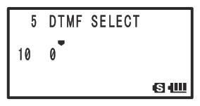</button><figcaption>Figure from page 79</figcaption><dialog id="fig-15"><p>Figure from page 79</p><form method="dialog"><button>Close</button></form></dialog></figure><figure><button aria-label="Enlarge Figure from page 79" class="zoom" data-dialog="fig-16" type="button"></button><figcaption>Figure from page 79</figcaption><dialog id="fig-16"><p>Figure from page 79</p><form method="dialog"><button>Close</button></form></dialog></figure><p><strong>11</strong> Press p to set the DTMF code and exit from the Set
mode.</p>
<p><strong>Confirming the entered DTMF code by the sound</strong>
<strong>1</strong> Press and hold M for over 1 second to enter the Set mode.
<strong>2</strong> Turn O to select [4 APRS].
<strong>3</strong> Press H .
<strong>4</strong> Turn O to select [5 SCAN].
<strong>5</strong> Press H .
<strong>6</strong> Turn O to select the memory channel to which the DTMF
code was registered.
<strong>7</strong> Press F to confirm the registered DTMF code by the audio
tones.
<strong>8</strong> Press p to exit from the Set mode.</p>
<p>~~<strong>Sending the Registered DTMF Code</strong>~~</p>
<p><strong>1</strong> Press and hold M over 1 second to enter the Set mode.
<strong>2</strong> Turn O to select [4 SIGNALING].
<strong>3</strong> Press H .
<strong>4</strong> Turn O to select [4 DTMF MODE].
<strong>5</strong> Press H .
<strong>6</strong> Turn O to select [MODE].
<strong>7</strong> Press H .
<strong>8</strong> Turn O to select [AUTO].
<strong>9</strong> Press M .
<strong>10</strong> Press p to set the auto dialer.
<strong>11</strong> While pressing p key, press 1 to 0 to select the
DTMF memory channel to transmit with the numeric keys.</p>
<p>~~<strong>Tips</strong>~~   - The registered DTMF code is transmitted.</p>
<pre><code>  - The transmitted DTMF tone can be heard from the speaker.
</code></pre>
<p><strong>12</strong> Release p .
Even if p is released, the DTMF tone signal will continue to be transmitted until transmission of the signal is complete.</p><p>~~<strong>Sending a DTMF Code Manually</strong>~~</p>
<p><strong>1</strong> Press and hold M for over 1 second to enter the Set mode.
<strong>2</strong> Turn O to select [4 SIGNALING].
<strong>3</strong> Press H .
<strong>4</strong> Turn O to select [4 DTMF MODE].
<strong>5</strong> Press H .
<strong>6</strong> Turn O to select [MODE].
<strong>7</strong> Press H .
<strong>8</strong> Turn O to select [MANUAL].
<strong>9</strong> Press M .
<strong>10</strong> Press p to set [MANUAL].
<strong>11</strong> While pressing p, select the DTMF code to transmit by
pressing 1 to 0, A, B, C, , and # on the numeric
keys.</p>
<p>~~<strong>Tips</strong>~~   - The DTMF code selected by pressing the keys is transmitted (refer to chart below).</p>
<pre><code>  - The transmitted DTMF tone can be heard from the speaker.
</code></pre>
<p><strong>12</strong> Release p .
Even if p is released, the DTMF tone signal will continue to be transmitted until transmission of the signal is complete.</p><figure><button aria-label="Enlarge Figure from page 81" class="zoom" data-dialog="fig-17" type="button">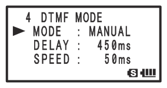</button><figcaption>Figure from page 81</figcaption><dialog id="fig-17"><p>Figure from page 81</p><form method="dialog"><button>Close</button></form></dialog></figure><p><strong>Band Scope Function</strong></p>
<p>While in VFO mode, the Band Scope Function is available that will graphically display
the strength of the signals on up to ±50 channels, centered on the current main band
frequency.
<strong>1</strong> Turn O to tune in to your desired center frequency.
<strong>2</strong> Press and hold B for over 1 second.
With the current frequency as the center, the strengths of
any signals of each of the higher and lower 16 channels are
shown on a graph.
<strong>3</strong> Turn O to adjust the ▼ to point to any of the displayed
channels, and the signal on the indicated frequency can be
received.
<strong>4</strong> Press B to exit the band scope function.</p>
<p>~~<strong>Tips</strong>~~</p>
<ul>
<li>
<p>You can change the number of band scope channels setting by selecting [1 DISPLAY] → [4 BAND
SCOPE] in the Set mode. The band scope channel setting can be changed to ±5 channels, ±9
channels, ±16 channels, ±24 channels, and ±50 channels, instead of ±16 channels.</p>
</li>
<li>
<p>The band scope channel interval is the same as the VFO frequency step.</p>
</li>
<li>
<p>When band scope is active, the numeric keys will not function.</p>
</li>
<li>
<p>The audio of A/B common frequency band can be heard simultaneously while scanning.</p>
</li>
<li>
<p>FULL: Continualy scans(scoops).
1Time: Scans(scoops) only once.
If the frequency is changed with O, scan will resume.</p>
</li>
<li>FULL is only selected in the analog mode.</li>
<li>1Time is only selected in the digital mode.</li>
</ul>
<p><strong>Taking picture with the optional camera mounted on speaker</strong>
<strong>microphone</strong></p>
<p>Pictures can be taken by connecting the speaker microphone with optional camera (MH85A11U).
Captured image data can be saved to a microSD memory card placed in the transceiver.
Saved image data can be sent to another transceiver in the digital mode or using the GM
function.
In addition, image data can be transmitted to other transceivers* by pressing the
(Send Image Button] on the camera mounted on speaker microphone.</p>
<ul>
<li>
<p>Refer to the Yaesu homepage or catalog for the models of transceiver to which images
can be transferred.</p>
</li>
<li>
<p>Only the picture just taken can be sent to another transceiver. For methods to send other
image data, refer to the GM Function instruction manual.</p>
</li>
</ul><p><strong>1</strong> Connect the speaker microphone with camera (MH-85A11U) to the DATA terminal of
the transceiver.
<strong>2</strong> Press P to turn the transceiver on.</p>
<p>Make sure to have at least 50cm between the lens and the object. If the object is too
close, the picture will be out of focus, resulting in a blurred picture.</p>
<p>~~<strong>Tips</strong>~~   - You can set the picture size (resolution) and image quality (compression rate) of the image, by</p>
<p>selecting [11 OPTION] → [1 USB CAMERA] in the Set mode.</p>
<pre><code>  - Captured images are saved to the microSD memory card installed in the transceiver.

   - If your transceiver and another compatible transceiver are both in digital mode, a picture just
</code></pre>
<p>~~<strong>Caution</strong>~~</p>
<ul>
<li>
<p>Do not directly photograph objects with strong light, such as the sun or other bright objects. Such
operation can lead to malfunction.</p>
</li>
<li>
<p>If the lens or the microphone gets dirty, use a dry, soft cloth to wipe off the contaminants.</p>
</li>
<li>
<p>Do not place the MH-85A11U near heat emitting equipment or where it is exposed to direct sunlight.
Doing so can lead to fire or a malfunction.</p>
</li>
<li>
<p>Do not drop the MH-85A11U. Applying a strong shock to the MH-85A11U may result in damages or
failure.</p>
</li>
</ul><p>The tone squelch opens the squelch only when a signal containing the specified frequency tone is received. Use of the digital code squelch (DCS) opens the squelch only when a
signal containing the specified DCS code is received. The tone squelch
function mutes monitoring the communications between other stations, even when listening for a call by a specific station for a long time.
<strong>1</strong> Press and hold M over 1 second.
<strong>2</strong> Turn O to select [4 SIGNALING].
<strong>3</strong> Press H .
<strong>4</strong> Turn O to select [11 SQL TYPE].
<strong>5</strong> Press H .
The Set mode option [11 SQL TYPE] is selected.
<strong>6</strong> Turn O to select a squelch type.
Select a squelch type with reference to the table shown below.
<strong>7</strong> Press p to set the squelch type and exit the Set mode.</p>
<p>Displays
logo</p>
<p>~~<strong>Tips</strong>~~</p>
<p>Displays squelch
type</p>
<ul>
<li>
<p>The tone squelch and DCS setting are also active during scanning. If scanning is performed with the
tone squelch or the DCS function turned on, it stops only when a signal containing a tone of the specified frequency or a signal containing the specified DCS code is received.</p>
</li>
<li>
<p>Pressing the Monitor switch allows you to hear signals that do not contain a tone or DCS code, and
signals with different tones or DCS code.</p>
</li>
<li>
<p>Pressing and holding M for 1 second, and then changing the Set mode option allows you to use this
function more conveniently.</p>
</li>
</ul>
<p>[4 SIGNALING] → [3 DCS INVERSION]: Allows you to receive the DCS code of the inverted phase.</p>
<p>[4 SIGNALING] → [10 SQL EXPANTION]: Allows you to specify different squelch types for transmis</p>
<p>sion and reception respectively.</p>
<table>
<thead>
<tr>
<th>Display</th>
<th>Operation</th>
</tr>
</thead>
<tbody>
<tr>
<td>OFF</td>
<td>Turns off the tone sending function, tone squelch function, etc.</td>
</tr>
<tr>
<td>TONE</td>
<td>Just sends tones ([TN] appears).</td>
</tr>
<tr>
<td>TONE SQL</td>
<td>Turns on the tone squelch function ([TSQ] appears).</td>
</tr>
<tr>
<td>DCS</td>
<td>Turns on the digital code squelch ([DCS] appears).</td>
</tr>
<tr>
<td>REV TONE</td>
<td>Turns on the reverse tone ([RTN] appears). Used to monitor communi-</td>
</tr>
<tr>
<td>cations based on the squelch control system in which a tone signal is</td>
<td></td>
</tr>
<tr>
<td>contained when communication is not performed and the tone signal dis-</td>
<td></td>
</tr>
<tr>
<td>appears when communication starts.</td>
<td></td>
</tr>
</tbody>
</table><table>
<thead>
<tr>
<th>Display</th>
<th>Operation</th>
</tr>
</thead>
<tbody>
<tr>
<td>PR FREQ</td>
<td>Turns on the no-communication squelch function for radios ([PR] ap-</td>
</tr>
<tr>
<td>pears.). You can specify no-communication signal tone frequencies within</td>
<td></td>
</tr>
<tr>
<td>the range from 300 Hz to 3000 Hz in steps of 100 Hz.</td>
<td></td>
</tr>
<tr>
<td>PAGER (See page 90)</td>
<td>Turns on a new pager function ([PAG] appears). When using transceivers</td>
</tr>
<tr>
<td>with your friends, specifying personal codes (each code is composed of</td>
<td></td>
</tr>
<tr>
<td>two tones) allows only a specific station to be called.</td>
<td></td>
</tr>
<tr>
<td>D CD*</td>
<td>Sends a DCS code only in case of transmission ([DC] appears).</td>
</tr>
<tr>
<td>TONE-DCS*</td>
<td>Sends a tone signal in case of transmission, and waits for a DCS code in</td>
</tr>
<tr>
<td>case of reception ([T-D] appears).</td>
<td></td>
</tr>
<tr>
<td>D CD-TONE SQL*</td>
<td>Sends a DCS code in case of transmission, and waits for a tone signal in</td>
</tr>
<tr>
<td>case of reception ([D-T] appears).</td>
<td></td>
</tr>
</tbody>
</table>
<ul>
<li>Pressing and holding M over 1 second and selecting [4 SIGNALING] → [10 SQL EXPANTION] and then</li>
</ul>
<p>[ON] will add the setting items of D CD, ONE-DCS, and D CD TONESQ to [10 SQL TYPE] of the Set mode
option [4 SIGNALING], allowing you to select different types of squelches for transmission and reception.</p>
<p><strong>Selecting a Tone Frequency</strong></p>
<p>You can select a tone frequency from among 50 frequencies (67.0 Hz to 254.1 Hz).
<strong>1</strong> Specify the operating frequency.
<strong>2</strong> Press and hold M over 1 second.
Enters the Set mode.
<strong>3</strong> Turn O to select [4 SIGNALING].
<strong>4</strong> Press H .
<strong>5</strong> Turn O to select [12 TONE SQL FREQ].
<strong>6</strong> Press H .
<strong>7</strong> Turn O to select a tone frequency.
<strong>8</strong> Quickly press M 3 times to save the tone frequency setting
and exit the Set mode.</p>
<p>~~<strong>Tips</strong>~~</p>
<ul>
<li>
<p>The tone frequency selected using the above-described procedure is also effective when only the
tone is sent out.</p>
</li>
<li>
<p>By default, the tone frequency is set to 88.5 Hz.</p>
</li>
</ul><p><strong>Searching for the Frequency of the</strong>
<strong>Tone Squelch Used by the Remote Station</strong></p>
<p>The frequency of the tone squelch used by the remote station can be searched for and
displayed.</p>
<p><strong>Enter the Set mode:</strong>
<strong>1</strong> Press and hold M for over 1 second.
<strong>2</strong> Turn O to select [4 SIGNALING].
<strong>3</strong> Press H .
<strong>4</strong> Turn O to select [11 SQL TYPE].
<strong>5</strong> Press H .
<strong>6</strong> Turn O to select [TONE SQL].
<strong>7</strong> Press M .
<strong>8</strong> Turn O to select [12 TONE SQL FREQ].
<strong>9</strong> Press H .
<strong>10</strong> Receive the signal from the remote station.
<strong>11</strong> Press and hold B over 1 second.</p>
<p>[TONE SEARCH] appears.
<strong>12</strong> Release B .
Search for the tone frequency starts.
When a corresponding tone frequency is detected, a beep
is emitted and search stops temporarily. The detected tone
frequency blinks.</p>
<p>~~<strong>Tip</strong>~~ To set the searched tone frequency and exit from the Set mode:</p>
<p>Press B → a beep is emitted. → Quickly press M 3 times.</p>
<p>~~<strong>Tip</strong>~~</p>
<p>For the operation to perform when scan stops, refer to “Selecting a Reception Method When Scanning
Stops” on page 59.</p>
<p><strong>Selecting a DCS Code</strong></p>
<p>You can select a DCS code from among 104 DCS codes (023 to 754).
<strong>1</strong> Specify the operating frequency.
<strong>2</strong> Press and hold M over 1 second to enter the Set mode.
<strong>3</strong> Turn O to select [4 SIGNALING].
<strong>4</strong> Press H .
<strong>5</strong> Turn O to select [2 DCS CODE].
<strong>6</strong> Press H .</p><p><strong>7</strong> Turn O to select a DCS code.
<strong>8</strong> Quickly press M 3 times to set the DCS code and exit from
the Set mode.</p>
<p>~~<strong>Tip</strong>~~</p>
<p>By default, the DCS code is set to [023].</p>
<p><strong>Searching for the Frequency of the DCS Used by the Remote Station</strong></p>
<p>The DCS code used by the remote station can be searched for and displayed.</p>
<p><strong>Enter the Set mode:</strong>
<strong>1</strong> Press and hold M over 1 second.
<strong>2</strong> Turn O to select [4 SIGNALING].
<strong>3</strong> Press H .
<strong>4</strong> Turn O to select [11 SQL TYPE].
<strong>5</strong> Press H .
<strong>6</strong> Turn O to select [DCS].
Sets the DCS.
<strong>7</strong> Press M .
<strong>8</strong> Turn O to select [2 DCS CODE].
<strong>9</strong> Press H .
<strong>10</strong> Receive the signal from the remote station.
<strong>11</strong> Press and hold B over 1 second.</p>
<p>[DCS SEARCH] appears.
<strong>12</strong> Release B .
Searching for the DCS code begins. When a corresponding DCS code is heard, a beep is emitted and search stops
temporarily. The found DCS code blinks.</p>
<p>~~<strong>Tip</strong>~~ To set the searched DCS code:</p>
<p>Press B → a beep is emitted. → Quickly press M 3 times to
set the DCS code and exit from the Set mode.</p>
<p>~~<strong>Tip</strong>~~</p>
<p>To perform the operation when scan stops, refer to “Selecting a Reception Method When Scanning
Stops” on page 59.</p><p>~~<strong>Notification of Call from the Remote Station by</strong>~~
~~<strong>Vibration of the Vibrator</strong>~~</p>
<p>Set the vibrator to alert you of a call from a remote station containing a corresponding
CTCSS tone or DCS code.</p>
<p><strong>Enter the Set mode:</strong>
<strong>1</strong> Press and hold M over 1 second.
<strong>2</strong> Turn O to select [8 CONFIG].
<strong>3</strong> Press H .
<strong>4</strong> Turn O to select [22 VIBRATOR].
<strong>5</strong> Press H .
<strong>6</strong> Turn O to select [MODE].
<strong>7</strong> Press H .
<strong>8</strong> Turn O to select [SIGNALING].
<strong>9</strong> Press p to set the Vibrator mode and exit the Set mode.</p>
<p>~~<strong>Tip</strong>~~ To turn off the Vibrator function, select [OFF] in step 7.</p>
<p><strong>Selecting Vibrator Operation Mode</strong></p>
<p><strong>Enter the Set mode:</strong>
<strong>1</strong> Press and hold M over 1 second.
<strong>2</strong> Turn O to select [8 CONFIG].
<strong>3</strong> Press H .
<strong>4</strong> Turn O to select [22 VIBRATOR].
<strong>5</strong> Press H .</p><figure><button aria-label="Enlarge Figure from page 88" class="zoom" data-dialog="fig-18" type="button"></button><figcaption>Figure from page 88</figcaption><dialog id="fig-18"><p>Figure from page 88</p><form method="dialog"><button>Close</button></form></dialog></figure><figure><button aria-label="Enlarge Figure from page 88" class="zoom" data-dialog="fig-19" type="button">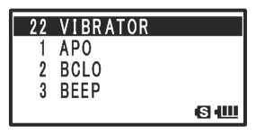</button><figcaption>Figure from page 88</figcaption><dialog id="fig-19"><p>Figure from page 88</p><form method="dialog"><button>Close</button></form></dialog></figure><figure><button aria-label="Enlarge Figure from page 88" class="zoom" data-dialog="fig-20" type="button"></button><figcaption>Figure from page 88</figcaption><dialog id="fig-20"><p>Figure from page 88</p><form method="dialog"><button>Close</button></form></dialog></figure><p><strong>6</strong> Turn O to select [SELECT].
<strong>7</strong> Press H .
<strong>8</strong> Turn O to select a vibrator operation mode.</p>
<p>~~<strong>Remark</strong>~~ Default: MODE1</p>
<p><strong>9</strong> Press p .
Sets the Vibrator mode and exits from the Set mode.</p>
<p>~~<strong>Notification of a Call from a Remote Station by the Bell</strong>~~</p>
<p>Set the Bell sound and the blinking b icon on the LCD, to alert you of a call from a remote
station containing a corresponding CTCSS tone or DCS code.</p>
<p><strong>Enter the Set mode:</strong>
<strong>1</strong> Press and hold M over 1 second.
<strong>2</strong> Turn O to select [4 SIGNALING].
<strong>3</strong> Press H .
<strong>4</strong> Turn O to select [1 BELL].
<strong>5</strong> Press H .
<strong>6</strong> Turn O to select [SELECT].
<strong>7</strong> Press H .
<strong>8</strong> Turn O to select [BELL].
When the tone squelch or DCS function is turned on, the b
icon appears.
<strong>9</strong> Press p to set the bell function and exit Set mode.</p>
<p>~~<strong>Tip</strong>~~ To turn off the bell function, select [OFF] in step 6.</p>
<p><strong>Changing the Number of Times the Bell Rings</strong></p>
<p><strong>Enter the Set mode:</strong>
<strong>1</strong> Press and hold M over 1 second.
<strong>2</strong> Turn O to select [4 SIGNALING].
<strong>3</strong> Press H</p><figure><button aria-label="Enlarge Figure from page 89" class="zoom" data-dialog="fig-21" type="button">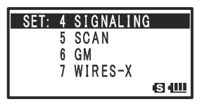</button><figcaption>Figure from page 89</figcaption><dialog id="fig-21"><p>Figure from page 89</p><form method="dialog"><button>Close</button></form></dialog></figure><figure><button aria-label="Enlarge Figure from page 89" class="zoom" data-dialog="fig-22" type="button"></button><figcaption>Figure from page 89</figcaption><dialog id="fig-22"><p>Figure from page 89</p><form method="dialog"><button>Close</button></form></dialog></figure><p><strong>4</strong> Turn O to select [1 BELL].
<strong>5</strong> Press H .
<strong>6</strong> Turn O to select [RINGER].
<strong>7</strong> Press H .
<strong>8</strong> Turn O to select the number of times the bell rings.</p>
<p>~~<strong>Remark</strong>~~ Default: Once</p>
<p>~~<strong>Tip</strong>~~ You can select the number of times the bell rings from among 1 to</p>
<p>20 times, or continuous.
<strong>9</strong> Press p to set the selected number of times the bell rings
and exit from the Set mode.</p>
<p>~~<strong>Calling Only a Specific Station   New Pager Function</strong>~~</p>
<p>When using the transceivers with your friends, specifying personal codes (each code
composed of two CTCSS tones) allows you to call only a specific station. Even if the
called person is not near his or her transceiver, the information on the LCD indicates that
he or she has been called.</p>
<p>Three persons A, B, and C Mr. C sends the personal
are using the transceiver. code of Mr. B.</p>
<p><strong>Flow of Operation to Use the Pager Function</strong></p>
<p>Only Mr. B is called.</p><p><strong>Setting the Code of Your Station</strong></p>
<p>Set the personal code (your code) to be called by other stations.</p>
<p><strong>Enter the Set mode:</strong>
<strong>1</strong> Press and hold M over 1 second.
<strong>2</strong> Turn O to select [4 SIGNALING].
<strong>3</strong> Press H .
<strong>4</strong> Turn O to select [6 PAGER].
<strong>5</strong> Press H .
<strong>6</strong> Turn O to select [CODE-RX].
<strong>7</strong> Press H .
<strong>8</strong> Turn O to select a code.
Select the first code from among 1 to 50.
<strong>9</strong> Press H .
The cursor [] moves.
<strong>10</strong> Turn O to select a code.
Select the second code from among 1 to 50.</p>
<p>~~<strong>Caution</strong>~~ The second code must be different from the first code.
<strong>11</strong> Press p to set your station code and exit from the Set mode.</p>
<p>~~<strong>Tips</strong>~~   - Default: 05 47</p>
<pre><code>  - The first and second codes contained in your personal code
</code></pre>
<p>may be reversed, i.e., [47 05] from [05 47] but recognized as
the same code.</p>
<pre><code>  - If the same personal code (group code) is specified for all persons, all persons can be called at the same time.
</code></pre>
<p><strong>Turning on the New Pager Function</strong></p>
<p><strong>Enter the Set mode:</strong>
<strong>1</strong> Press and hold M over 1 second.
<strong>2</strong> Turn O to select [4 SIGNALING].
<strong>3</strong> Press H .
<strong>4</strong> Turn O to select [11 SQL TYPE].
<strong>5</strong> Press H .
<strong>6</strong> Turn O to select [PAGER].
<strong>7</strong> Press p to set the new pager function and exit from the Set
mode.
You can make a call, or wait for a call from a remote station,
using the new pager function.</p>
<p>PAG appears.</p><figure><button aria-label="Enlarge Figure from page 91" class="zoom" data-dialog="fig-23" type="button">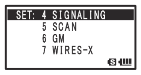</button><figcaption>Figure from page 91</figcaption><dialog id="fig-23"><p>Figure from page 91</p><form method="dialog"><button>Close</button></form></dialog></figure><figure><button aria-label="Enlarge Figure from page 91" class="zoom" data-dialog="fig-24" type="button"></button><figcaption>Figure from page 91</figcaption><dialog id="fig-24"><p>Figure from page 91</p><form method="dialog"><button>Close</button></form></dialog></figure><figure><button aria-label="Enlarge Figure from page 91" class="zoom" data-dialog="fig-25" type="button">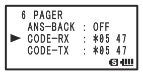</button><figcaption>Figure from page 91</figcaption><dialog id="fig-25"><p>Figure from page 91</p><form method="dialog"><button>Close</button></form></dialog></figure><p><strong>Calling a Specific Station</strong></p>
<p><strong>Enter the Set mode:</strong>
<strong>1</strong> Press and hold M over 1 second.
<strong>2</strong> Turn O to select [4 SIGNALING].
<strong>3</strong> Press H .
<strong>4</strong> Turn O to select [11 SQL TYPE].
<strong>5</strong> Press H .
<strong>6</strong> Turn O to select [PAGER].
Set the new pager function:
<strong>7</strong> Press M .
<strong>8</strong> Turn O to select [6 PAGER].
<strong>9</strong> Press H .
<strong>10</strong> Turn O to select [CODE-TX].
<strong>11</strong> Press H .
<strong>12</strong> Turn O to select the code of the remote station.
Select the first code of the remote station.</p>
<p>~~<strong>Caution</strong>~~ Register the pager code of the remote station in advance.
<strong>13</strong> Press H .
The cursor [] moves.
<strong>14</strong> Turn O to select the code of the remote station.
Select the second code of the remote station.
<strong>15</strong> Press p to set the code of the remote station and exit from
the Set mode.
<strong>16</strong> Press p to call the remote station.</p>
<p>PAG appears.</p><figure><button aria-label="Enlarge Figure from page 92" class="zoom" data-dialog="fig-26" type="button">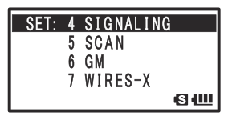</button><figcaption>Figure from page 92</figcaption><dialog id="fig-26"><p>Figure from page 92</p><form method="dialog"><button>Close</button></form></dialog></figure><figure><button aria-label="Enlarge Figure from page 92" class="zoom" data-dialog="fig-27" type="button">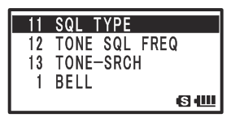</button><figcaption>Figure from page 92</figcaption><dialog id="fig-27"><p>Figure from page 92</p><form method="dialog"><button>Close</button></form></dialog></figure><figure><button aria-label="Enlarge Figure from page 92" class="zoom" data-dialog="fig-28" type="button"></button><figcaption>Figure from page 92</figcaption><dialog id="fig-28"><p>Figure from page 92</p><form method="dialog"><button>Close</button></form></dialog></figure><figure><button aria-label="Enlarge Figure from page 92" class="zoom" data-dialog="fig-29" type="button">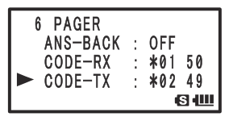</button><figcaption>Figure from page 92</figcaption><dialog id="fig-29"><p>Figure from page 92</p><form method="dialog"><button>Close</button></form></dialog></figure><figure><button aria-label="Enlarge Figure from page 92" class="zoom" data-dialog="fig-30" type="button">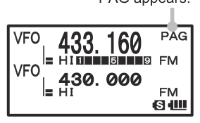</button><figcaption>Figure from page 92</figcaption><dialog id="fig-30"><p>Figure from page 92</p><form method="dialog"><button>Close</button></form></dialog></figure><p><strong>Being Called by the Remote Station (Standby Operation)</strong></p>
<p>If you use the new pager function on the same frequency as the remote station, the [PAG]
icon displayed on the LCD changes to [PIN], alerting that you have been called by the
remote station. In addition, if you turn on the “bell function” (See page 89), you can confirm a call from the remote station by the [PAG] display, the blinking [ b ] icon, and the bell
sound. Also, if you turn on the “vibrator function” (See page 88), the vibrator will confirm
a call from the remote station.</p>
<p>Blinks</p>
<p>When called</p>
<p>~~<strong>Tip</strong>~~</p>
<p>Selecting [4 SIGNALING] → [9 PAGER ANS-BACK] → [ON] in the Set mode automatically places the
transceiver in the transmission mode (for about 2.5 seconds) when called by the remote party, and notifies the remote party to get ready for communication.</p><p>~~<strong>Using the Set Mode</strong>~~</p>
<p>The Set mode allows you to select various functions from a list so you can use your
transceiver more conveniently.</p>
<p><strong>Enter the Set mode:</strong>
<strong>1</strong> Press and hold M for over 1 second.
<strong>2</strong> Turn O to select a Set mode option.
<strong>3</strong> Press H .
<strong>4</strong> Turn O to choose a setting item.</p>
<p><strong>Select a setting item:</strong>
<strong>5</strong> Press H .</p>
<p><strong>[If there is no lower layer of setting items</strong>
<strong>Proceed to step 8.]</strong></p>
<p><strong>[If there is lower layer of setting items</strong>
<strong>continue with step 6.]</strong>
<strong>6</strong> Turn O to select a setting item.
<strong>7</strong> Press p to exit the Set mode.</p>
<p><strong>Resetting the Set Mode Options</strong></p>
<p>Set mode option No.</p>
<p>Set mode option</p>
<p>Setting item</p>
<p>The Set mode options you have set can be restored to the defaults by following the
procedure described below. However, to restore the following setting items to the defaults,
“ALL RESET” (See page 39) is required.</p>
<p>2-1-2 ANTENNA ATT
2-1-4 RX MODE
3-3 MEMORY NAME
4-2 DCS CODE
4-6 PAGER (CODE-RX/CODE-TX)
4-9 SQL S-METER
4-12 TONE SQL FREQ
8-5 CLOCK TYPE
8-15 RPT SHIFT
9-7 APRS MSG TXT
9-18 DIGI PATH
9-24 MY POSITION
12 CALLSIGN</p>
<p>2-1-3 HALF DEVIATION
3-2 BANK NAME
3-5 MEMORY SKIP
4-3 DCS INVERSION
4-7 PR FREQUENCY
4-11 SQL TYPE
7-4 EDIT CATEGORY TAG
8-12 PASSWORD
8-16 RPT SHIFT FREQ
9-15 BEACON STATS TXT
9-23 CALLSIGN (APRS)
9-25 MY SYMBOL (4:User)</p><figure><button aria-label="Enlarge Figure from page 94" class="zoom" data-dialog="fig-31" type="button">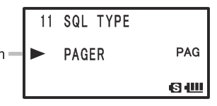</button><figcaption>Figure from page 94</figcaption><dialog id="fig-31"><p>Figure from page 94</p><form method="dialog"><button>Close</button></form></dialog></figure><p><strong>1</strong> Press % while pressing V, and P .
Then turn the transceiver on. When a beep is heard, release the keys.
<strong>2</strong> When [SET MODE RESET PUSH F KEY] appears, press F .
A beep is emitted.</p>
<p>~~<strong>Tip</strong>~~ To cancel resetting, press any key other than F .</p>
<p>~~<strong>Set Mode Option List</strong>~~</p>
<p>|Set mode option No./
setting Item|Description of function|Setting Item
(Bold letters: Default)|Reference
page|
|---|---|---|---|
|<strong>1 DISPLAY</strong>|<strong>1 DISPLAY</strong>|<strong>1 DISPLAY</strong>|<strong>1 DISPLAY</strong>|
|<strong>1-1 GPS INFO</strong>|PressH to open the GPS
screen.|–|103|
|<strong>1-2 TARGET LOCATION</strong>|Set the display method for the
BACKTRACK screen that ap-
pears when using the GM Func-
tion.|
<strong>COMPASS</strong> / NUMERIC|104|
|<strong>1-3 COMPASS</strong>|Set the display method for BACK-
TRACK Compass.|<strong>HEADING UP</strong> / NORTH UP|104|
|<strong>1-4 BAND SCOPE</strong>|Switch the Search Channel for the
BAND SCOPE operation mode.|
11ch / 19ch /<strong>33ch</strong> / 49ch / 101ch|105|
|<strong>1-5 LAMP</strong>|Set the duration time of backlight
and keys to be lit.|
OFF / 2 to 10 SEC (KEY) /
CONTINUOUS<strong>KEY 5sec</strong>|105|
|<strong>1-6 LANGUAGE</strong>|Select Japanese or English as the
display language for Set mode
options, setting items, etc.|</p>
<p>JAPANESE /<strong>ENGLISH</strong>|106|
|<strong>1-7 LCD CONTRAST</strong>|Set the LCD contrast level.|LEVEL 1 to LEVEL 15<strong>Level 7</strong>|106|
|
<strong>1-8 LCD DIMMER</strong>|Set the brightness level of the
LCD backlight and keypad key
light.|</p>
<p>LEVEL 1 to LEVEL 6<strong>Level 6</strong>|107|
|<strong>1-9 OPENING</strong>
<strong>MESSAGE</strong>|Select an opening message type.|NORMAL / OFF / DC /
MESSAGE /<strong>CALLSIGN</strong>|107|
|<strong>1-10 SENSOR INFO</strong>|Display function for electrical volt-
age and temperature.|Voltage &amp; Temperature|108|
|<strong>1-11 S-METER SYMBOL</strong>|Select a S/PO meter symbol dis-
play type.|4 types|109|
|<strong>2 TX / RX</strong>|<strong>2 TX / RX</strong>|<strong>2 TX / RX</strong>|<strong>2 TX / RX</strong>|
|
<strong>2-1 MODE</strong>|
<strong>2-1 MODE</strong>|
<strong>2-1 MODE</strong>|
<strong>2-1 MODE</strong>|
|
<strong>2-1-1 ANTENNA AM</strong>|Select an AM radio antenna type.|<strong>BAR &amp; EXT</strong> / Bar Antenna|33|
|
<strong>2-1-2 ANTENNA ATT</strong>|
Set the attenuator to ON or OFF.|
<strong>OFF</strong> / ON|109|
|
<strong>2-1-3 HALF DEVIATION</strong>|Set the transmission modulation
level.|
<strong>OFF</strong> / ON|110|
|<strong>2-1-4 RX MODE</strong>|Select a reception mode.|<strong>AUTO</strong> / FM / AM|38|
|</p>
<p><strong>2-2 DIGITAL</strong>|</p>
<p><strong>2-2 DIGITAL</strong>|</p>
<p><strong>2-2 DIGITAL</strong>|</p>
<p><strong>2-2 DIGITAL</strong>|</p>
<p><strong>2-2-1 DIGITAL MODE</strong> Select DIGITAL to switch to DIGI- MODE: DIGITAL / <strong>AMS</strong> / ANALOG 111
TAL mode DIG TX: <strong>DN</strong> / VW</p>
<p>MODE: DIGITAL / <strong>AMS</strong> / ANALOG
DIG TX: <strong>DN</strong> / VW
AMS MODE: <strong>TX M</strong> / TX FM /
TX DN / TX VW / AUTO</p>
<p>111</p><p>|Set mode option No./
setting Item|Description of function|Setting Item
(Bold letters: Default)|Reference
page|
|---|---|---|---|
|<strong>2-2-2 SQL TYPE</strong>|Select SQL Type in the DIGITAL
mode.|
SQL TYPE:<strong>OFF</strong> / CODE /
BREAK
CODE:<strong>001</strong> to 126|113|
|<strong>2-2-3 DIGI POP UP</strong>|Set the POP UP time.|OFF BND2s / BND4s / BND6s /
BND8s /<strong>BND10s</strong> / BND20s /
BND30s / BND60s / BNDCNT|113|
|<strong>2-2-4 LOCATION</strong>
<strong>SERVICE</strong>|Set whether or not to display the
current location of your own sta-
tion in the digital mode.|
<strong>ON</strong> / OFF
* For more details of this function, refer to
the GM Function Instruction Manual.|
<strong>ON</strong> / OFF
* For more details of this function, refer to
the GM Function Instruction Manual.|
|<strong>2-2-5 STANDBY BEEP</strong>|STANDBY BEEP setting|<strong>ON</strong> / OFF|114|
|
<strong>2-2-6 DSP Ver</strong>|DSP version display|Version display|115|
|
<strong>2-3 AUDIO</strong>|
<strong>2-3 AUDIO</strong>|
<strong>2-3 AUDIO</strong>|
<strong>2-3 AUDIO</strong>|
|
<strong>2-3-1 MIC GAIN</strong>|Adjust the microphone gain level.|LEVEL 1 to LEVEL 9<strong>LEVEL 5</strong>|115|
|
<strong>2-3-2 MUTE</strong>|Set the muting level on the non-
operating side when a signal is
received on the operating band
side.|</p>
<p><strong>OFF</strong> / MUTE30% / MUTE50% /
MUTE 100%|35|
|<strong>2-3-3 RX AF DUAL</strong>|Set the resumption time of radio
reception in the AF Dual mode.|
Transmission and reception 1
second to 10 seconds, Fixed, or
transmission 1 second to 10 sec-
onds.
<strong>Transmission 2 seconds</strong>|</p>
<p>78|
|<strong>2-3-4 VOL MODE</strong>|Setv key.|
<strong>NORMAL</strong> / AUTO BACK|116|
|<strong>3 MEMORY</strong>|<strong>3 MEMORY</strong>|<strong>3 MEMORY</strong>|<strong>3 MEMORY</strong>|
|
<strong>3-1 BANK LINK</strong>|Set memory bank link.|BANK 1 to BANK 24, BANK LINK
ON / OFF|117|
|<strong>3-2 BANK NAME</strong>|Assign a name to a memory bank.|BANK1 to BANK24|49|
|
<strong>3-3 MEMORY NAME</strong>|Enter a memory channel tag.|Up to 16 characters|47|
|
<strong>3-4 MEMORY PROTECT</strong>|Allow or prohibit memory channel
registration.|
<strong>OFF</strong> / ON|118|
|<strong>3-5 MEMORY SKIP</strong>|Set memory channels or selected
memory channels to skip.|
<strong>OFF</strong> / SKIP / SELECT|60|
|<strong>3-6 MEMORY WRITE</strong>|Set the automatic increment to
display memory channel to be
registered.|</p>
<p><strong>NEXT</strong> / LOWER|118|
|<strong>4 SIGNALING</strong>|<strong>4 SIGNALING</strong>|<strong>4 SIGNALING</strong>|<strong>4 SIGNALING</strong>|
|
<strong>4-1 BELL</strong>|Set the number of bell ring.|SELECT:<strong>OFF</strong> / BELL
RINGER:<strong>1 time</strong> to 20 times /
Continuous|89|
|<strong>4-2 DCS CODE</strong>|Set the DCS code.|<strong>DCS 023</strong> to DCS 754|86|</p><p>|Set mode option No./
setting Item|Description of function|Setting Item
(Bold letters: Default)|Reference
page|
|---|---|---|---|
|<strong>4-3 DCS INVERSION</strong>|Select a combination of DCS in-
version codes in terms of commu-
nication direction.|RX (Reception):
<strong>-NORMAL (Homeomorphic)</strong> /
INVERT (Inversion) /
BOTH (Both Phase) /
NORMAL (Homeomorphic)
TX (Transmission):
<strong>-NORMAL (Homeomorphic)</strong> /
NORMAL (Homeomorphic)
NORMAL (Homeomorphic)
INVERT (Inversion)|119|
|<strong>4-4 DTMF MODE</strong>|Set the transmission of DTMF
code registered to a DTMF mem-
ory channel, DTMF code trans-
mission delay time, and DTMF
code transmission speed.|</p>
<p>MODE:<strong>MANUAL</strong> / AUTO
DELAY: 50ms / 250ms /<strong>450ms</strong> /
750ms / 1000ms
SPEED:<strong>50ms</strong> / 100ms|81|
|<strong>4-5 DTMF SELECT</strong>|Set a DTMF auto dialer channel
and code (16 characters).|
<strong>1</strong> to 10|79|
|<strong>4-6 PAGER</strong>|Turn on/off the pager answerback
function and specify a personal
code (transmission/reception).|</p>
<p>ANS-BACK:<strong>OFF</strong> / ON
CODE-RX: 01 02 to 50 49<strong>05 47</strong>
CODE-TX: 01 02 to 50 49<strong>05 47</strong>|90|
|<strong>4-7 PR FREQUENCY</strong>|Set a non-communication
squelch.|
300 Hz to 3000 Hz<strong>1600 Hz</strong>|120|
|<strong>4-8 SQL LEVEL</strong>|Select a squelch level.|Level 0 to Level 15<strong>Level 1</strong>|121|
|
<strong>4-9 SQL S-METER</strong>|Select an S-meter squelch level.|
<strong>OFF</strong>/ LEVEL 1 to LEVEL 9|121|
|
<strong>4-10 SQL</strong>
<strong>EXPLANATION</strong>|Set a separate squelch type for
reception and transmission.|</p>
<p><strong>OFF</strong> / ON|122|
|<strong>4-11 SQL TYPE</strong>|Select a squelch type.|<strong>OFF</strong> / TONE / TONE SQL / DCS /
REV TONE / PR FREQ / PAGER|
84|
|<strong>4-12 TONE SQL FREQ</strong>|Set a tone frequency.|67.0 Hz to 254.1 Hz<strong>100 Hz</strong>|85|
|
<strong>4-13 TONE-SRCH</strong>|Set the audio output during tone
search.
Turn the muting function on/off
and select a tone search speed.|</p>
<p>MUTE:<strong>ON</strong> / OFF
SPEED:<strong>FAST</strong> / SLOW|123|
|<strong>4-14 WX ALERT</strong>|Enables/Disables the Weather
Alert Feature.|
<strong>OFF</strong> / ON|124|
|<strong>5 SCAN</strong>|<strong>5 SCAN</strong>|<strong>5 SCAN</strong>|<strong>5 SCAN</strong>|
|
<strong>5-1 DW TIME</strong>|Set the priority memory channel
monitoring interval.|
0.1 SEC to 10 SEC<strong>5 SEC</strong>|124|
|<strong>5-2 SCAN LAMP</strong>|Set the scan lamp to light or not
when scanning stops.|
<strong>ON</strong> / OFF|125|
|<strong>5-3 SCAN RE-START</strong>|Set the scanning restart time.|0.1 SEC to 10 SEC<strong>2 SEC</strong>|125|
|
<strong>5-4 SCAN RESUME</strong>|Set the scan stop mode.|
SCAN:
BUSY / HOLD / 2sec to 10sec
<strong>5sec</strong>
DW:
BUSY /<strong>HOLD</strong> / 2sec to 10sec|59|</p>
<p><strong>5-5 SCAN WIDTH</strong> Set the scan mode. VFO: ALL / <strong>BAND</strong>
MEMORY: <strong>ALL CH</strong> / BAND</p>
<p>126</p><p>|Set mode option No./
setting Item|Description of function|Setting Item
(Bold letters: Default)|Reference
page|
|---|---|---|---|
|<strong>6 GM</strong>|<strong>6 GM</strong>|<strong>6 GM</strong>|<strong>6 GM</strong>|
|<strong>6-1 LANGUAGE</strong>|Select the language to use for
writing a message, etc.|
JAPANESE
<strong>ENGLISH</strong>|–|
|<strong>6-2 DELETE GROUP</strong>|Delete a registered group.|–|–|
|<strong>6-3 DELETE MEMBER</strong>|Delete a registered member.|–|–|
|<strong>6-4 RADIO ID</strong>|Transceiver specific number(ID)
appears. (This cannot be edited)|
–|–|
|* For more details of this function, refer to the GM Function Instruction Manual.|* For more details of this function, refer to the GM Function Instruction Manual.|* For more details of this function, refer to the GM Function Instruction Manual.|* For more details of this function, refer to the GM Function Instruction Manual.|
|<strong>7 WIRES-X</strong>|<strong>7 WIRES-X</strong>|<strong>7 WIRES-X</strong>|<strong>7 WIRES-X</strong>|
|<strong>7-1 LANGUAGE</strong>|Select the language to use for
writing a message, etc.|
JAPANESE
<strong>ENGLISH</strong>|–|
|<strong>7-2 RPT/WIRES FREQ</strong>|Set a frequency to be used for Re-
peater/WIRES.|<strong>MANUAL</strong> / PRESET|–|
|<strong>7-3 SERCH SETUP</strong>|Set the WIRES ROOM selection
method.|
<strong>HISTORY</strong> / ACTIVITY|–|
|<strong>7-4 EDT CATEGORY</strong>
<strong>TAG</strong>|Edit a category tag.|C1 to C5|–|
|<strong>7-5 REMOVE ROOM/</strong>
<strong>NODE</strong>|Delete a registered Category
ROOM.|
C1 to C5|–|
|* For more details of this function, refer to the WIRES-X Function Instruction Manual.|* For more details of this function, refer to the WIRES-X Function Instruction Manual.|* For more details of this function, refer to the WIRES-X Function Instruction Manual.|* For more details of this function, refer to the WIRES-X Function Instruction Manual.|
|<strong>8 CONFIG</strong>|<strong>8 CONFIG</strong>|<strong>8 CONFIG</strong>|<strong>8 CONFIG</strong>|
|
<strong>8-1 APO</strong>|Set the APO operating time.|<strong>OFF</strong> / 0.5 HOUR /
1 HOUR to 12 HOURS|127|
|<strong>8-2 BCLO</strong>|Turn on/off the busy channel lock-
out function.|<strong>OFF</strong> / ON|128|
|<strong>8-3 BEEP</strong>|Set the beep output function and
the function of emitting a beep
when a band edge/CH1 is en-
countered.|</p>
<p>SELECT:
<strong>KEY&amp;SCAN</strong> / KEY / OFF
EDGE:<strong>OFF</strong> / ON|128|
|<strong>8-4 BUSY LED</strong>|Turn on/off the BUSY LED.|A BAND:<strong>ON</strong> / OFF
B BAND:<strong>ON</strong> / OFF
RADIO:<strong>ON</strong> / OFF|129|
|<strong>8-5 CLOCK TYPE</strong>|Set the clock shift function.|<strong>A</strong> / B|129|
|
<strong>8-6 GPS LOG</strong>|Set the GPS access time.|<strong>OFF</strong> / 1 SEC / 2 SEC / 5 SEC /
10 SEC / 30 SEC / 60 SEC|130|
|<strong>8-7 HOME VFO</strong>|ENABLE/DISABLE of VFO trans-
mission in Home Channel.|<strong>ENABLE</strong> / DISABLE|130|
|<strong>8-8 LED LIGHT</strong>|Turn on/off the white LED flash-
light.|–|131|
|<strong>8-9 LOCK</strong>|Select a lock mode.|<strong>KEY&amp;DIAL</strong> / PTT / KEY&amp;PTT /
DIAL&amp;PTT / ALL / KEY / DIAL|131|
|<strong>8-10 MONI/T-CALL</strong>|Select a monitor switch or T-CALL
switch.|
MONI / T-CALL *1|132|
|<strong>8-11 TIMER</strong>|Set the power ON/OFF timer.|ON:<strong>00:00</strong> to 23:59 ON /<strong>OFF</strong>
OFF:<strong>00:00</strong> to 23:59 ON /<strong>OFF</strong>|132|</p>
<p><strong>8-12 PASSWORD</strong> Turn on/off the password function ON / <strong>OFF</strong> [ – – – – ] 133</p><p>|Set mode option No./
setting Item|Description of function|Setting Item
(Bold letters: Default)|Reference
page|
|---|---|---|---|
|<strong>8-13 PTT DELAY</strong>|Set the PTT delay time.|<strong>OFF</strong> / 20ms / 50ms / 100ms /
200ms|134|
|<strong>8-14 RPT ARS</strong>|Turn the ARS function on/off.|<strong>ON</strong> / OFF|134|
|<strong>8-15 RPT SHIFT</strong>|Select a repeater shift direction.|Differs depending on frequency|135|
|<strong>8-16 RPT SHIFT FREQ</strong>|Select a repeater shift width.|Differs depending on frequency|135|
|<strong>8-17 SAVE RX</strong>|Set the reception save time.|OFF /<strong>0.2 SEC (1:1)</strong> to 60.0 SEC
(1:300)|136|
|<strong>8-18 STEP</strong>|Select a channel step.|<strong>AUTO</strong> / 5.0 kHz to 100 kHz|37|
|<strong>8-19 DATE &amp; TIME ADJ</strong>|Set up the built-in clock function.|–|34|
|<strong>8-20 TOT</strong>|Set the timeout timer.|OFF / 30 SEC to 10 MIN<strong>3.0min</strong>|136|
|<strong>8-21 VFO MODE</strong>|Select the frequency selection
range in the VFO mode.|
ALL /<strong>BAND</strong>|137|
|<strong>8-22 VIBRATOR</strong>|Select a vibrator mode and set up
the vibrator function.|
MODE:
<strong>OFF</strong> / BUSY / SIGNALING
SELECT:
<strong>MODE1</strong> / MODE2 / MODE3|88|
|<strong>9 APRS</strong>|<strong>9 APRS</strong>|<strong>9 APRS</strong>|<strong>9 APRS</strong>|
|
<strong>9-1 APRS AF DUAL</strong>|Turn on/off the muting function
when both the APRS function and
AF dual function are active.|</p>
<p>ON /<strong>OFF</strong>|–|
|<strong>9-2 APRS</strong>
<strong>DESTINATION</strong>|Displaying Model Code|APY01D (Cannot be edited.)|–|
|<strong>9-3 APRS FILTER</strong>|Select filter function|Mic-E:<strong>ON</strong> / OFF
POSITION:<strong>ON</strong> / OFF
WEATHER:<strong>ON</strong> / OFF
OBJECT:<strong>ON</strong> / OFF
ITEM:<strong>ON</strong> / OFF
STATUS:<strong>ON</strong> / OFF
OTHER:<strong>OFF</strong> / ON
ALTNET:<strong>OFF</strong> / ON|–|
|<strong>9-4 APRS MODEM</strong>|Set the APRS baud rate|<strong>OFF</strong> / 1200bps / 9600bps|–|
|
<strong>9-5 APRS MSG FLASH</strong>|Set the strobe to flash when there
is an incoming message.|
MSG:
OFF / 2-<strong>4</strong>-10 (2sec interval) /
20sec / 30sec / 60sec /
CONTINUOUS /
EVERY 2s-10s (1sec interval) /
EVERY 10s-EVERY 50s
(10sec interval) / EVERY
1m-EVERY 10m (1min interval)
GRP:
OFF / 2-<strong>4</strong>-10 (2sec interval) /
20sec / 30sec / 60sec /
CONTINUOUS
BLN:
OFF / 2-<strong>4</strong>-10 (2sec interval) /
20sec / 30sec / 60sec /
CONTINUOUS|–|</p><p>|Set mode option No./
setting Item|Description of function|Setting Item
(Bold letters: Default)|Reference
page|
|---|---|---|---|
|<strong>9-6 APRS MSG GROUP</strong>|Set group filter for receiving mes-
sages.|<strong>G1: ALL</strong>******
G2: CQ*******
G3: QST******
G4: YAESU****
G5:
B1: BLN******
B2: BLN*
B3: BLN*|–|
|<strong>9-7 APRS MSG TXT</strong>|Enter standard message text 1 to
7ch|
1 to 8 ch|–|
|<strong>9-8 APRS MUTE</strong>|Turn on/off the B-band AF muting
function when APRS is set.|
ON /<strong>OFF</strong>|–|
|<strong>9-9 APRS POPUP</strong>|Set such as a beacon type,  mes-
sage type and time for pop-up
display.|
Mic-E:
  OFF / ALL2s to ALL60s /
  ALLCNT / BND2s to BND60s /
BNDCNT<strong>ALL10s</strong>
POSITION:
  OFF / ALL2s to ALL60s /
  ALLCNT / BND2s to BND60s /
BNDCNT<strong>ALL10s</strong>
WEATHER:
  OFF / ALL2s to  ALL60s /
  ALLCNT / BND2s to BND60s /
BNDCNT<strong>ALL10s</strong>
OBJECT:
  OFF / ALL2s to ALL60s /
  ALLCNT / BND2s to BND60s /
BNDCNT<strong>ALL10s</strong>
ITEM:
  OFF / ALL2s to ALL60s /
  ALLCNT / BND2s to BND60s /
BNDCNT<strong>ALL10s</strong>
STATUS:
  OFF / ALL2s to ALL60s /
  ALLCNT / BND2s to BND60s /
BNDCNT<strong>ALL10s</strong>
OTHER:
  OFF / ALL2s to ALL60s /
  ALLCNT / BND2s to BND60s /
BNDCNT<strong>ALL10s</strong>
MY PACKET:
  OFF / ALL2s to ALL60s /
  ALLCNT / BND2s to BND60s /
BNDCNT<strong>ALL10s</strong>
MSG:
  OFF / ALL2s to ALL60s /
  ALLCNT / BND2s to BND60s /
BNDCNT<strong>ALL10s</strong>|–|</p><p>|Set mode option No./
setting Item|Description of function|Setting Item
(Bold letters: Default)|Reference
page|
|---|---|---|---|
|<strong>9-9 APRS POPUP</strong>|Set the beacon type, the message
type and the time of the popup
display.|</p>
<p>GRP:
  OFF / ALL2s to ALL60s /
  ALLCNT / BND2s to BND60s /
BNDCNT<strong>ALL10s</strong>
BLN:
  OFF / ALL2s to ALL60s /
  ALLCNT / BND2s to BND60s /
BNDCNT<strong>ALL10s</strong>
MY MSG:
  OFF / BND2s to BND60s /
<strong>BND10s</strong>
DUP.BCN:
  OFF / BND2s to BND60s /
<strong>BND10s</strong>
DUP.MSG:
  OFF / BND2s to BND60s /
<strong>BND10s</strong>
ACK.REJ:
  OFF / BND2s to BND60s /
<strong>BND10s</strong>
OTHER MSG:
  OFF / BND2s to BND60s /
<strong>BND10s</strong>|–|
|<strong>9-10 APRS RINGER</strong>|Turn on/off the bell when a bea-
con is received.|Mic-E:<strong>ON</strong> / OFF
POSITION:<strong>ON</strong> / OFF
WEATHER:<strong>ON</strong> / OFF
OBJECT:<strong>ON</strong> / OFF
ITEM:<strong>ON</strong> / OFF
STATUS:<strong>ON</strong> / OFF
OTHER:<strong>ON</strong> / OFF
MY PACKET:<strong>ON</strong> / OFF
MSG:<strong>ON</strong> / OFF
GRP:<strong>ON</strong> / OFF
BLN:<strong>ON</strong> / OFF
MY MSG:<strong>ON</strong> / OFF
DUP.BCN:<strong>ON</strong> / OFF
DUP.MSG:<strong>ON</strong> / OFF
ACK.REJ:<strong>ON</strong> / OFF
OTHER MSG:<strong>ON</strong> / OFF
TX BCN:<strong>ON</strong> / OFF
TX MSG:<strong>ON</strong> / OFF|–|
|<strong>9-11 APRS UNIT</strong>|Select the units for APRS display.|Position:<strong>MM.MM'</strong> / MM'SS'
Distance: km /<strong>mile</strong>
Speed: km/h / knot /<strong>mph</strong>
Altitude: m /<strong>ft</strong>
Temp: °C /<strong>°F</strong>
Rain: mm /<strong>inch</strong>
Wind: m/s /<strong>mph</strong>|–|</p>
<p><strong>9-12 APRS TX DELAY</strong> Set the data sending delay time. 100ms / 150ms / 200ms / 250ms / <strong>300ms</strong> / 400ms /</p><p>|Set mode option No./
setting Item|Description of function|Setting Item
(Bold letters: Default)|Reference
page|
|---|---|---|---|
|<strong>9-13 BEACON INFO</strong>|Set the transmission beacon in-
formation.|AMBIGUITY:
<strong>OFF</strong> / 1 dig to 4dig
SPD / CSE:<strong>ON</strong> / OFF
ALTITUDE:<strong>ON</strong> / OFF|–|
|<strong>9-14 BEACON</strong>
<strong>INTERVAL</strong>|Set a beacon automatic sending
interval.|
30sec / 1min / 2min / 3min /
<strong>5min</strong> / 10min / 15min / 20min /
30min / 60min|–|
|<strong>9-15 BEACON STATS</strong>
<strong>TXT</strong>|Input setting for status text.|S.TXT: ON /<strong>OFF</strong>
TX RATE:<strong>1/1</strong> to 1/8
1 to 5 CH|–|
|<strong>9-16 BEACON TX</strong>|Select automatic or manual send-
ing of beacon.|AUTO /<strong>MANUAL</strong> / SMART|–|
|<strong>9-17 COM PORT</strong>
<strong>SETTING</strong>|Set the COM port.|STATUS: ON /<strong>OFF</strong>
SPEED:
4800 /<strong>9600</strong> / 19200 / 38400
INPUT:<strong>OFF</strong> / GPS
OUTPUT:<strong>OFF</strong>/ GPS / WAY.P
WAYPOINT:
<strong>NMEA9</strong>/ NMEA6 / NMEA7 /
NMEA8
Mic-E:<strong>ON</strong>/ OFF
POSIT:<strong>ON</strong>/ OFF
WEATHER:<strong>ON</strong>/ OFF
OBJECT:<strong>ON</strong> / OFF
ITEM:<strong>ON</strong> / OFF|–|
|<strong>9-18 DIGI PATH</strong>|Select a digital repeater route.|P1 OFF
P2 1 WIDE1-1
<strong>P3 1 WIDE1-1</strong> /<strong>2 WIDE2-1</strong>
P4 1 · · · · · · – · · / 2 · · · · · · – · ·
P5 1 · · · · · · – · · / 2 · · · · · · – · ·
P6 1 · · · · · · – · · / 2 · · · · · · – · ·
P7 1 · · · · · · – · · / 2 · · · · · · – · ·
P8 1 · · · · · · – · · to 8 · · · · · · – · ·|–|
|<strong>9-19 GPS DATUM</strong>|Select a datum used for the GPS
function.|
<strong>WGS-84</strong> / Tokyo Mean /
Tokyo Japan / Tokyo Korea /
Tokyo Okinawa|–|
|<strong>9-20 GPS POWER</strong>|Turn on/off the GPS function.|<strong>GPS ON</strong> / GPS OFF|–|
|
<strong>9-21 GPS TIME SET</strong>|Turn on/off the GPS time and date
automatic acquisition function.|</p>
<p><strong>AUTO</strong> / MANUAL|–|
|<strong>9-22 GPS UNIT</strong>|Select the units for GPS display.|Position: .<strong>MMM'</strong> / 'SS''
Speed: km/h / Knot /<strong>mph</strong>
Altitude: m /<strong>ft</strong>|–|
|<strong>9-23 CALLSIGN (APRS)</strong>|Specify the callsign of your sta-
tion.|–|–|
|<strong>9-24 MY POSITION</strong>|Set the position for your station.|<strong>GPS</strong>/ Lat N * <strong>°</strong>.*<em>' /
LON</em> <strong>°</strong>.<strong>'
P1 to P10|–|
|</strong>9-25 MY SYMBOL**|Set the symbol for your station.|45 Icon|–|</p><p>|Set mode option No./
setting Item|Description of function|Setting Item
(Bold letters: Default)|Reference
page|
|---|---|---|---|
|<strong>9-26 POSITION</strong>
<strong>COMMENT</strong>|Set up the position comment func-
tion.|<strong>Off Duty</strong> / En Route /
In Service / Returning /
Committed / Special / Priority /
Custom 0 to 6 / EMERGENCY|
   !
–|
|<strong>9-27 SmartBeaconing</strong>|Set the smart beaconing function.|STATUS:
<strong>OFF</strong> / TYPE1 / TYPE2 / TYP
LOW SPD: 2mph to 30mph
HIGH SPD: 31mph to 90mph
SLOW RATE: 1min to 100min
FAST RATE: 10sec to 180sec
TURN ANGL: 5° to 90°
TURN SLOP: 1 to 255
TURN TIME: 5sec to 180sec|E3
–|
|<strong>9-28 TIME ZONE</strong>|Set the time zone.|UTC ±13.0 H /<strong>UTC+0:00</strong>|–|
|</p>
<ul>
<li>
<p>For more details of functions, refer to the APRS Section in the instruction manual.|</p>
</li>
<li>
<p>For more details of functions, refer to the APRS Section in the instruction manual.|</p>
</li>
<li>
<p>For more details of functions, refer to the APRS Section in the instruction manual.|</p>
</li>
<li>
<p>For more details of functions, refer to the APRS Section in the instruction manual.|
|<strong>10 SD CARD</strong>|<strong>10 SD CARD</strong>|<strong>10 SD CARD</strong>|<strong>10 SD CARD</strong>|
|
<strong>10-1 BACKUP</strong>|Write or read the information
about your transceiver into or
from the micro SD memory card.|</p>
</li>
</ul>
<p>Write to SD / Read from SD|138|
|<strong>10-2 MEMORY CH</strong>|Write or read the memory channel
information into or from the micro
SD memory card.|</p>
<p>Write to SD / Read from SD|138|
|<strong>10-3 GROUP ID</strong>|Write or read GROUP ID infor-
mation into or from the micro SD
memory card.|
Write to SD / Read from SD|139|
|<strong>10-4 FORMAT</strong>|Format the micro SD memory
card.|
Format|24|
|<strong>11 OPTION</strong>|<strong>11 OPTION</strong>|<strong>11 OPTION</strong>|<strong>11 OPTION</strong>|
|
<strong>11-1 USB CAMERA</strong>|Set the USB CAMERA image size
and resolution.|
SIZE:<strong>160</strong>×<strong>120</strong> / 320×240
QUALITY:<strong>LOW</strong> / NORMAL /
HIGH|140|
|<strong>12 CALLSIGN</strong>|Set the CALLSIGN.|–|141|</p>
<p>~~<strong>Displaying the GPS screen.</strong>~~</p>
<p>When using the GPS function, you can display the GPS information on the LCD.</p>
<p><strong>Enter the Set mode:</strong>
<strong>1</strong> Press and hold M for over 1 second.
<strong>2</strong> Turn O to select [1 DISPLAY].
<strong>3</strong> Press H .
<strong>4</strong> Turn O to select [1 GPS INFO].
<strong>5</strong> Press H to display the GPS information on the LCD.</p><p>~~<strong>Setting the display method of the remote station information</strong>~~</p>
<p>Set the display method of the remote station information when using the GM Function.</p>
<p><strong>Enter the Set mode:</strong>
<strong>1</strong> Press and hold M for over 1 second.
<strong>2</strong> Turn O to select [1 DISPLAY].
<strong>3</strong> Press H .
<strong>4</strong> Turn O to select [2 TARGET LOCATION].
<strong>5</strong> Press H .
<strong>6</strong> Turn O to select the display method.
COMPASS: Compass appears.
NUMERIC: Longitude and latitude appear.
<strong>7</strong> Press p to set the selected display method, and exit from
the Set mode.</p>
<p>~~<strong>Caution</strong>~~</p>
<p>When the NUMERIC is selected, only the location information of the remote station appears on the
LCD. The BACKTRACK function is not activated.</p>
<p>~~<strong>Setting the display method for BACKTRACK</strong>~~</p>
<p>You can set the BACKTRACK screen display method.</p>
<p><strong>Enter the Set mode:</strong>
<strong>1</strong> Press and hold M for over 1 second.
<strong>2</strong> Turn O to select [1 DISPLAY].
<strong>3</strong> Press H .
<strong>4</strong> Turn O to select [3 COMPASS].
<strong>5</strong> Press H .
<strong>6</strong> Turn O to select the display method.
HEADING UP: Heading direction is indicated upward.
NORTH UP: North direction is indicated upward.
<strong>7</strong> Press p to save the selected display setting and exit the
set mode.</p><p>~~<strong>Setting the search channels for the BAND SCOPE function</strong>~~</p>
<p>You can set the number of channels to be displayed for the band scope when the BAND
SCOPE function is used.</p>
<p><strong>Enter the Set mode:</strong>
<strong>1</strong> Press and hold M for over 1 second.
<strong>2</strong> Turn O to select [1 DISPLAY].
<strong>3</strong> Press H .
<strong>4</strong> Turn O to select [4 BAND SCOPE].
<strong>5</strong> Press H .
<strong>6</strong> Turn O to select the number of channels to search for.
11ch / 19ch / 33ch / 49ch / 101ch</p>
<p>~~<strong>Remark</strong>~~ Default: 33ch
<strong>7</strong> Press p to set the number of channels to search for, and
exit the Set mode.</p>
<p>~~<strong>Changing the Lighting Condition</strong>~~</p>
<p>You can change the LCD and key lighting condition.</p>
<p><strong>Enter the Set mode:</strong>
<strong>1</strong> Press and hold M for over 1 second.
<strong>2</strong> Turn O to select [1 DISPLAY].
<strong>3</strong> Press H .
<strong>4</strong> Turn O to select [5 LAMP].
<strong>5</strong> Press H .
<strong>6</strong> Turn O to select a lighting condition.
Select a lighting condition with reference to the following
table:</p>
<table>
<thead>
<tr>
<th>Display</th>
<th>Lighting Condition</th>
</tr>
</thead>
<tbody>
<tr>
<td>2 SEC (KEY) to</td>
<td></td>
</tr>
<tr>
<td>10 SEC (KEY)</td>
<td>WhenO dial or a key is pressed, the LCD</td>
</tr>
<tr>
<td>and keys light up for the set time.</td>
<td></td>
</tr>
<tr>
<td>CONTINUOUS</td>
<td>The LCD and keys light up continuously.</td>
</tr>
<tr>
<td>OFF</td>
<td>The LCD and keys do not light.</td>
</tr>
</tbody>
</table>
<p>~~<strong>Remark</strong>~~ Default: Key, 5 seconds
<strong>7</strong> Press p to save the lighting condition, and exit the Set mode.</p><p>~~<strong>Selecting a Display Language</strong>~~</p>
<p>You can select a display language from Japanese and English.</p>
<p><strong>Enter the Set mode:</strong>
<strong>1</strong> Press and hold M for over 1 second.
<strong>2</strong> Turn O to select [1 DISPLAY].
<strong>3</strong> Press H .
<strong>4</strong> Turn O to select [6 LANGUAGE].
<strong>5</strong> Press H .
<strong>6</strong> Turn O to select a language.
Select [JAPANESE] or [ENGLISH].</p>
<p>~~<strong>Remark</strong>~~ Default: Japanese
<strong>7</strong> Press p to save the selected display language, and exit
the Set mode.</p>
<p>~~<strong>Adjusting the LCD Contrast Level</strong>~~</p>
<p>You can adjust the LCD contrast level.</p>
<p><strong>Enter the Set mode:</strong>
<strong>1</strong> Press and hold M for over 1 second.
<strong>2</strong> Turn O to select [1 DISPLAY].
<strong>3</strong> Press H .
<strong>4</strong> Turn O to select [7 LCD CONTRAST].
<strong>5</strong> Press H .
<strong>6</strong> Turn O to select a contrast level.
Select from among LEVEL 1 (LIGHT) to LEVEL 15 (DARK).</p>
<p>~~<strong>Remark</strong>~~ Default: LEVEL 7
<strong>7</strong> Press p to save the selected contrast, and exit the Set
mode.</p><p>~~<strong>Adjusting the LCD Backlight and Keypad Key</strong>~~
~~<strong>Light Brightness Level</strong>~~</p>
<p>You can adjust the brightness level of the LCD backlight and keypad key light.</p>
<p><strong>Enter the Set mode:</strong>
<strong>1</strong> Press and hold M for over 1 second.
<strong>2</strong> Turn O to select [1 DISPLAY].
<strong>3</strong> Press H .
<strong>4</strong> Turn O to select [8 LCD DIMMER].
<strong>5</strong> Press H .
<strong>6</strong> Turn O to select a brightness level.
You can select from LEVEL 1 (DARK) to LEVEL 6 (BRIGHT).</p>
<p>~~<strong>Remark</strong>~~ Default: LEVEL 6
<strong>7</strong> Press p to save the selected display brightness level, and
exit the Set mode.</p>
<p>~~<strong>Changing the Opening Message Displayed</strong>~~
~~<strong>Immediately after Power-on</strong>~~</p>
<p>You can select the message displayed under the “YAESU” logo from among four types:
“no message”, “power supply voltage”, “message comprising up to 16 characters”, and
“callsign”.</p>
<p><strong>Enter the Set mode:</strong>
<strong>1</strong> Press and hold M for over 1 second.
<strong>2</strong> Turn O to select [1 DISPLAY].
<strong>3</strong> Press H .
<strong>4</strong> Turn O to select [9 OPENING MESSAGE].
<strong>5</strong> Press H .</p><figure><button aria-label="Enlarge Figure from page 107" class="zoom" data-dialog="fig-32" type="button">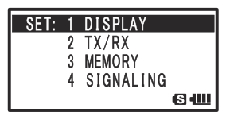</button><figcaption>Figure from page 107</figcaption><dialog id="fig-32"><p>Figure from page 107</p><form method="dialog"><button>Close</button></form></dialog></figure><figure><button aria-label="Enlarge Figure from page 107" class="zoom" data-dialog="fig-33" type="button"></button><figcaption>Figure from page 107</figcaption><dialog id="fig-33"><p>Figure from page 107</p><form method="dialog"><button>Close</button></form></dialog></figure><p><strong>6</strong> Turn O to select the display method.
Select a message type with reference to the following table:</p>
<p>~~<strong>Remark</strong>~~ Default: CALLSIGN</p>
<table>
<thead>
<tr>
<th>Display</th>
<th>Display Condition</th>
</tr>
</thead>
<tbody>
<tr>
<td>NORMAL</td>
<td>The YAESU logo appears immediately after power-on.</td>
</tr>
<tr>
<td>OFF</td>
<td>Immediately after power-on, the reception frequency, etc. appear with</td>
</tr>
<tr>
<td>ing an opening message.</td>
<td></td>
</tr>
<tr>
<td>DC</td>
<td>The power supply voltage and time appear immediately after power-o</td>
</tr>
<tr>
<td>MESSAGE</td>
<td>A message comprising up to 16 characters ap-</td>
</tr>
<tr>
<td>pears immediately after power-on.</td>
<td></td>
</tr>
<tr>
<td>PressingH displays the message registration</td>
<td></td>
</tr>
<tr>
<td>screen. Enter a message to be displayed following</td>
<td></td>
</tr>
<tr>
<td>the procedure described in “Assigning a Name to a</td>
<td></td>
</tr>
<tr>
<td>Memory Channel” (See page 47).</td>
<td></td>
</tr>
<tr>
<td>CALLSIGN</td>
<td>Your callsign appears immediately after power-on.</td>
</tr>
</tbody>
</table>
<p><strong>7</strong> Press p to save the selected display method, and exit from the Set mode.</p>
<p>~~<strong>Measuring the Battery Voltage and the Transceiver Temperature</strong>~~
~~<strong>Power Supply Voltage Measurement Function/Temperature</strong>~~
~~<strong>Measurement Function</strong>~~</p>
<p>You can measure the battery voltage and the temperature inside the transceiver. When
the optional external power supply adapter with a cigarette plug (SDD-13) is connected,
the power supply voltage of this adapter is measured.</p>
<p><strong>Enter the Set mode:</strong>
<strong>1</strong> Press and hold M for over 1 second.
<strong>2</strong> Turn O to select [1 DISPLAY].
<strong>3</strong> Press H .
<strong>4</strong> Turn O to select [10 SENSOR INFO].
<strong>5</strong> Press H .
The voltage and temperature appear on the LCD.</p>
<p>~~<strong>Remark</strong>~~ When the temperature appears on the LCD, pressing V</p>
<p>toggles the unit of temperature display between °C and °F.
<strong>7</strong> Press M .</p><p>~~<strong>Tips</strong>~~</p>
<ul>
<li>
<p>The display changes as follows depending on the type of the power supply used.
Battery pack: “Lit”
Battery case: “Dry”
External power supply adapter: “Ext”</p>
</li>
<li>
<p>During mono band reception, the voltage can be displayed on the LCD constantly (See page 27).</p>
</li>
<li>
<p>This function displays the temperature inside the transceiver.</p>
</li>
<li>
<p>In a situation where the temperature inside of the transceiver does not rise (e.g., standby reception),
you can know the approximate outside temperature from the temperature displayed on the LCD.</p>
</li>
</ul>
<p>~~<strong>Changing the Display Pattern of the PO Meter</strong>~~</p>
<p>You can select a display pattern of the S/PO meter from among four types.</p>
<p><strong>Enter the Set mode:</strong>
<strong>1</strong> Press and hold M for over 1 second.
<strong>2</strong> Turn O to select [1 DISPLAY].
<strong>3</strong> Press H .
<strong>4</strong> Turn O to select [11 S-METER SYMBOL].
<strong>5</strong> Press H .
<strong>6</strong> Turn O to select a display pattern.</p>
<p>/ / /</p>
<p>~~<strong>Remark</strong>~~ Default:
<strong>7</strong> Press p to save the selected display pattern, and exit from
the Set mode.</p>
<p>~~<strong>Switching between AM Antennas</strong>~~</p>
<p>You can switch antennas when listening to AM broadcast stations.
For details, see “Switching between AM Antennas” on page 33.</p>
<p>~~<strong>Reducing receiver sensitivity</strong>~~
~~<strong>Attenuator (ATT) Function</strong>~~</p>
<p>If the signal from the remote station is too strong or, a strong signal is present nearby that
interferes with reception, use the attenuator (ATT) function.</p>
<p><strong>Enter the Set mode:</strong>
<strong>1</strong> Press and hold M for over 1 second.
<strong>2</strong> Turn O to select [2 TX/RX].
<strong>3</strong> Press H .</p><figure><button aria-label="Enlarge Figure from page 109" class="zoom" data-dialog="fig-34" type="button">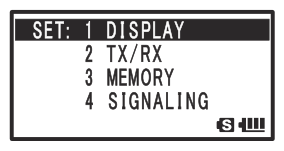</button><figcaption>Figure from page 109</figcaption><dialog id="fig-34"><p>Figure from page 109</p><form method="dialog"><button>Close</button></form></dialog></figure><figure><button aria-label="Enlarge Figure from page 109. 109" class="zoom" data-dialog="fig-35" type="button"></button><figcaption>Figure from page 109. 109</figcaption><dialog id="fig-35"><p>Figure from page 109. 109</p><form method="dialog"><button>Close</button></form></dialog></figure><p><strong>4</strong> Turn O to select [1 MODE].
<strong>5</strong> Press H .
<strong>6</strong> Turn O to select [2 ANTENNA ATT].
<strong>7</strong> Press H .
<strong>8</strong> Turn O to select [ON].</p>
<p>~~<strong>Remark</strong>~~ Default: OFF
<strong>9</strong> Press p to save the attenuator function setting, and exit
the Set mode.</p>
<p>~~<strong>Tip</strong>~~</p>
<ul>
<li>The amount of attenuation by the attenuator (ATT) is about 10 dB.</li>
</ul>
<p>~~<strong>Setting the transmission modulation level</strong>~~</p>
<p>You can set the transmission modulation level to half of its usual level.
Set [OFF] for normal amateur operation.</p>
<p><strong>Enter the Set mode:</strong>
<strong>1</strong> Press and hold M for over 1 second.
<strong>2</strong> Turn O to select [2 TX/RX].
<strong>3</strong> Press H .
<strong>4</strong> Turn O to select [1 MODE].
<strong>5</strong> Press H .
<strong>6</strong> Turn O to select [3 HALF DEVIATION].
<strong>7</strong> Press H .
<strong>8</strong> Turn O to select [ON]</p>
<p>~~<strong>Remark</strong>~~ Default: OFF
<strong>9</strong> Press p to save the transmission modulation level is set,
and exit the Set mode.</p><figure><button aria-label="Enlarge Figure from page 110" class="zoom" data-dialog="fig-36" type="button"></button><figcaption>Figure from page 110</figcaption><dialog id="fig-36"><p>Figure from page 110</p><form method="dialog"><button>Close</button></form></dialog></figure><figure><button aria-label="Enlarge Figure from page 110" class="zoom" data-dialog="fig-37" type="button">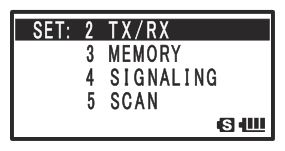</button><figcaption>Figure from page 110</figcaption><dialog id="fig-37"><p>Figure from page 110</p><form method="dialog"><button>Close</button></form></dialog></figure><figure><button aria-label="Enlarge Figure from page 110" class="zoom" data-dialog="fig-38" type="button"></button><figcaption>Figure from page 110</figcaption><dialog id="fig-38"><p>Figure from page 110</p><form method="dialog"><button>Close</button></form></dialog></figure><p>~~<strong>Changing the mode manually</strong>~~</p>
<p>Manually switch to an optimum mode (radio wave type) according to the frequency band.
For more details, see “Changing the Mode Manually” on page 38.</p>
<p>~~<strong>Switching between digital and analog mode</strong>~~</p>
<p>You can set digital and analog mode switching and digital transmission mode.</p>
<p><strong>Enter the Set mode:</strong>
<strong>1</strong> Press and hold M for over 1 second.
<strong>2</strong> Turn O to select [2 TX/RX].
<strong>3</strong> Press H .
<strong>4</strong> Turn O to select [2 DIGITAL].
<strong>5</strong> Press H .
<strong>6</strong> Turn O to select [1 DIGITAL MODE].
<strong>7</strong> Press H .
<strong>8</strong> Turn O to select [MODE].
<strong>9</strong> Press H .
<strong>10</strong> Turn O to select your desired mode.
DIGITAL: Transmit and receive in the digital mode.
ANALOG: Transmit and receive in the analog mode.
AMS (Automatic Mode Select):
Tune to the transmission and reception mode of the remote
station from which a signal is automatically received.
<strong>11</strong> Press M .
<strong>12</strong> Turn O to select [DIGI TX].
<strong>13</strong> Press H .
<strong>14</strong> Turn O to select a reception mode.
DN: Usual digital communication mode. Conversation is</p>
<p>infrequently interrupted even under low power level.
VW: (Voice Wide) Full rate high quality sound mode This is the transmission function</p>
<p>to prioritize the sound quality when the communication condition of the remote
station is relatively good.
<strong>15</strong> Press p to save the setting and exit the Set mode.</p><p>~~<strong>Setting the AMS transmission mode</strong>~~</p>
<p>When operating in the AMS function, the transmit mode may be selected:
<strong>1</strong> Press and hold M for over 1 second.
<strong>2</strong> Turn O to select [2 TX/RX].
<strong>3</strong> Press H .
<strong>4</strong> Turn O to select [2 DIGITAL].
<strong>5</strong> Press H .
<strong>6</strong> Turn O to select [1 DIGITAL MODE].
<strong>7</strong> Press H .
<strong>8</strong> Turn O to select [AMS MODE].
<strong>9</strong> Press H .
<strong>10</strong> Turn O to select the AMS transmit mode.
TX M: The operating mode is automatically selected
from four communication modes to match the
received signal. Pressing the Microphone [PTT]
momentarily, toggles between the Digital and
Analog communication modes.
TX FM: The RX mode is automatically selected from the</p>
<p>four communication modes to match the received
signal. The TX mode is automatically changed to
the “FM” mode.
TX DN: The RX mode is automatically selected from the</p>
<p>four communication modes to match the received
signal. The TX mode is automatically changed to
the “DN” mode.
TX VW: The RX mode is automatically selected from the four communication modes</p>
<p>to match the received signal. The TX mode is automatically changed to the
“VW” mode.
AUTO: The RX and TX operating mode is automatically selected from the four</p>
<p>communication modes to match the received signal.</p>
<p>~~<strong>Remarks</strong>~~   - Default: TX M</p>
<pre><code>       - Blink “ ▎ ” : TX M
</code></pre>
<p>Blink “ ▎ OO” : TX FM / TX DN / TX VW</p>
<p>The OO symbol display differs according to the received signal.
<strong>11</strong> Press p to save the setting and exit the Set mode.</p><p>~~<strong>Setting the squelch type for the digital mode</strong>~~</p>
<p>You can set the squelch type for the digital mode.</p>
<p><strong>Enter the Set mode:</strong>
<strong>1</strong> Press and hold M for over 1 second.
<strong>2</strong> Turn O to select [2 TX/RX].
<strong>3</strong> Press H .
<strong>4</strong> Turn O to select [2 DIGITAL].
<strong>5</strong> Press H .
<strong>6</strong> Turn O to select [2 SQL TYPE].
<strong>7</strong> Press H .
<strong>8</strong> Turn O to select [SQL TYPE].
<strong>9</strong> Press H .
<strong>10</strong> Turn O to select a squelch type.
OFF: Voice is always output upon receiving a digital signal</p>
<p>from a Yaesu transceiver.
CODE: Voice is output only when receiving a signal with a</p>
<p>corresponding SQL CODE.
BREAK: Voice is output regardless of any squelch code</p>
<p>when the remote station transmits with BREAK set.
<strong>11</strong> Press M .
<strong>12</strong> Turn O to select [SQL CODE].
<strong>13</strong> Press H .
<strong>14</strong> Turn O to enter a code.
You can enter SQL CODE of 126 types from 001 to 126.
<strong>15</strong> Press p to save the SQL CODE setting and exit the Set mode.</p>
<p>~~<strong>Setting the pop up time of the remote station information</strong>~~</p>
<p>You can set the time duration to display the remote station information, such as callsign,
on the LCD.</p>
<p><strong>Enter the Set mode:</strong>
<strong>1</strong> Press and hold M for over 1 second.
<strong>2</strong> Turn O to select [2 TX/RX].
<strong>3</strong> Press H .
<strong>4</strong> Turn O to select [2 DIGITAL].
<strong>5</strong> Press H .</p><figure><button aria-label="Enlarge Figure from page 113" class="zoom" data-dialog="fig-39" type="button"></button><figcaption>Figure from page 113</figcaption><dialog id="fig-39"><p>Figure from page 113</p><form method="dialog"><button>Close</button></form></dialog></figure><figure><button aria-label="Enlarge Figure from page 113. 113" class="zoom" data-dialog="fig-40" type="button"></button><figcaption>Figure from page 113. 113</figcaption><dialog id="fig-40"><p>Figure from page 113. 113</p><form method="dialog"><button>Close</button></form></dialog></figure><p><strong>6</strong> Turn O to select [3 DIGI POPUP].
<strong>7</strong> Press H .
<strong>8</strong> Turn O to select the display method.
OFF: Does not display the remote station information.
BND2s to 60s: Set the time to display the remote station</p>
<p>information (2 to 60 seconds).
BNDCNT: Always display the remote station information.</p>
<p>~~<strong>Remark</strong>~~ Default: 10 seconds
<strong>9</strong> Press p to save the pop up time setting and exit the Set mode.</p>
<p>~~<strong>Setting the Standby Beep</strong>~~</p>
<p>When communicating in a digital mode, a beep is sounded after the end of the other
stations transmission.
<strong>1</strong> Press and hold M for over 1 second.
<strong>2</strong> Turn O to select [2 TX/RX].
<strong>3</strong> Press H .
<strong>4</strong> Turn O to select [2 DIGITAL].
<strong>5</strong> Press H .
<strong>6</strong> Turn O to select [5 STANDBY BEEP].
<strong>7</strong> Press H .
<strong>8</strong> Turn O to select [OFF]/[ON].
OFF: Disable the STANDBY BEEP feature.
ON: Enable the STANDBY BEEP feature.</p>
<p>~~<strong>Remark</strong>~~ Default: ON
<strong>9</strong> Press p to exit from the Set mode.</p><p>~~<strong>Displaying the version of the DSP program</strong>~~</p>
<p>You can check the DSP program version of the built in digital unit of the transceiver.</p>
<p><strong>First enter the digital mode, and then enter the Set mode:</strong>
<strong>1</strong> Press and hold M for over 1 second.
<strong>2</strong> Turn O to select [2 TX/RX].
<strong>3</strong> Press H .
<strong>4</strong> Turn O to select [2 DIGITAL].
<strong>5</strong> Press H .
<strong>6</strong> Turn O to select [6 DSP Ver].
<strong>7</strong> Press H .
The version of the DSP program appears on the LCD.
<strong>8</strong> Press p to exit from the Set mode.</p>
<p>~~<strong>Adjusting the microphone sensitivity   Microphone Gain</strong>~~</p>
<p>You can adjust the input level of the built-in microphone or an optional external microphone.</p>
<p><strong>Enter the Set mode:</strong>
<strong>1</strong> Press and hold M for over 1 second.
<strong>2</strong> Turn O to select [2 TX/RX].
<strong>3</strong> Press H .
<strong>4</strong> Turn O to select [3 AUDIO].
<strong>5</strong> Press H .
<strong>6</strong> Turn O to select [1 MIC GAIN].
<strong>7</strong> Press H .
<strong>8</strong> Turn O to select a microphone sensitivity level.
Select a microphone gain level from the following:
LEVEL 1 (Lowest sensitivity) to LEVEL 9 (Highest sensitivity)</p>
<p>~~<strong>Remark</strong>~~ Default: LEVEL 5
<strong>9</strong> Press M twice.
The selected microphone gain level is set.</p><p><strong>10</strong> Press p to exit the Set mode.</p>
<p>~~<strong>Tips</strong>~~</p>
<ul>
<li>
<p>Increasing the microphone gain excessively can distort the sound or pick up the surrounding noise,
impairing intelligibility.</p>
</li>
<li>
<p>Be sure to adjust the microphone gain whenever you change microphones.</p>
</li>
</ul>
<p>~~<strong>Muting Voice</strong>~~</p>
<p>In the dual reception mode, the audio being received on the non-operating band is muted
when a signal is herd on the operating band.
For more details, see “Muting Audio” on page 35.</p>
<p>~~<strong>Simultaneously radio broadcast reception</strong>~~</p>
<p>Set the mute time of the simultaneous broadcast reception.
For more details, see “AF-DUAL Function” for simultaneously monitoring the amateur
frequency while listening to the broadcast radio.</p>
<p>~~<strong>Changing the sound volume setting method</strong>~~</p>
<p>You can set the sound volume adjustment mode to be automatically canceled after about
3 seconds, after pressing v and then adjusting the sound volume with O .</p>
<p><strong>Enter the Set mode:</strong>
<strong>1</strong> Press and hold M for over 1 second.
<strong>2</strong> Turn O to select [2 TX/RX].
<strong>3</strong> Press H .
<strong>4</strong> Turn O to select [3 AUDIO].
<strong>5</strong> Press H .
<strong>6</strong> Turn O to select [4 VOL MODE].
<strong>7</strong> Press H .
<strong>8</strong> Turn O to select [AUTO BACK].</p>
<p>~~<strong>Remark</strong>~~ Default: NORMAL</p>
<p>~~<strong>Tip</strong>~~ Usually adjust the sound volume by turning O while pressing</p>
<p>v . If the [AUTO BACK] is selected, the sound volume
adjustment mode will be automatically canceled after you have
pressed v to enter the sound volume adjustment mode and</p>
<p>return to the frequency display screen.
<strong>9</strong> Press p to exit the Set mode.</p><figure><button aria-label="Enlarge Figure from page 116" class="zoom" data-dialog="fig-41" type="button">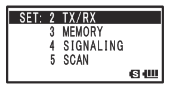</button><figcaption>Figure from page 116</figcaption><dialog id="fig-41"><p>Figure from page 116</p><form method="dialog"><button>Close</button></form></dialog></figure><figure><button aria-label="Enlarge Figure from page 116" class="zoom" data-dialog="fig-42" type="button">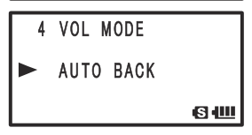</button><figcaption>Figure from page 116</figcaption><dialog id="fig-42"><p>Figure from page 116</p><form method="dialog"><button>Close</button></form></dialog></figure><p>~~<strong>Setting memory bank link</strong>~~</p>
<p>You can link multiple registered memory banks, and also recall a frequently used memory
bank immediately</p>
<p><strong>Enter the Set mode:</strong>
<strong>1</strong> Press and hold M for over 1 second.
<strong>2</strong> Turn O to select [3 MEMORY].
<strong>3</strong> Press H .
<strong>4</strong> Turn O to select [1 BANK LINK].
<strong>5</strong> Press H .
<strong>6</strong> Turn O to select a memory bank to link.
<strong>7</strong> Press B .
The cursor moves to the position (such as BANK1) to set
link.
<strong>8</strong> Turn O to select [ON].</p>
<p>~~<strong>Remark</strong>~~ Default: OFF
<strong>9</strong> Press B .
<strong>10</strong> Also set link to other memory banks.
Set link to each memory bank from memory bank 1 through
memory bank 24 by repeating step 6 to 9.
<strong>11</strong> Press H .
The memory bank link is set.
<strong>12</strong> Press p .
Exits from the Set mode.</p>
<p>~~<strong>Assigning a name to a memory bank</strong>~~</p>
<p>A memory bank can be assigned a name with up to 16 characters.
For more details, see “Assigning Name to Memory Bank” on page 49.</p>
<p>~~<strong>Assigning a name to a memory channel</strong>~~</p>
<p>Memory channels and home channels may be assigned a name (memory tag) such as a
callsign or broadcast station name.
For more details, see “Using Memory Tag” on page 46.</p><p>~~<strong>Prohibiting registration to memory channel</strong>~~
~~<strong>Memory Channel Protect Function</strong>~~</p>
<p>A memory channel may be protected so that a new frequency or memory channel tag
name cannot be registered to it.
<strong>Enter the Set mode:</strong>
<strong>1</strong> Press and hold M for over 1 second.
<strong>2</strong> Turn O to select [3 MEMORY].
<strong>3</strong> Press H .
<strong>4</strong> Turn O to select [4 MEMORY PROTECT].
<strong>5</strong> Press H .
<strong>6</strong> Turn O to select [ON].
Any registration to the memory channel is prohibited.</p>
<p>~~<strong>Remark</strong>~~ Default: OFF
<strong>7</strong> Press p to save the memory channel protect, and exit the
Set mode.</p>
<p>~~<strong>Setting memory skip function</strong>~~</p>
<p>Set the scan method for scanning memory channels.
For more details, see “Specifying a Skip/Selected Memory Channel” on page 60.</p>
<p>~~<strong>Registering to a memory channel with the lowest memory channel</strong>~~
~~<strong>number</strong>~~
~~<strong>Memory Channel Write Function</strong>~~</p>
<p>When registering to a memory channel. you can display an unregistered memory channel
with the lowest memory channel number.
<strong>Enter the Set mode:</strong>
<strong>1</strong> Press and hold M for over 1 second.
<strong>2</strong> Turn O to select [3 MEMORY].
<strong>3</strong> Press H .
<strong>4</strong> Turn O to select [6 MEMORY WRITE].
<strong>5</strong> Press H .
<strong>6</strong> Turn O to select [LOWER].
A memory channel with the lowest memory channel number
appears on the LCD.</p>
<p>~~<strong>Remark</strong>~~ Default: NEXT
<strong>7</strong> Press p to set the memory channel registration to the
lowest unregistered memory channel number, and exit from</p><p>~~<strong>Notifying a call from a remote station by the bell</strong>~~</p>
<p>Notifies you of a call from a remote station by the bell.
See “Notification of a Call from a Remote Station by the Bell” on page 89.</p>
<p>~~<strong>Selecting a DCS code</strong>~~</p>
<p>Select the DCS code from 104 codes from 023 to 754.
For more details, see “Setting a DCS Code” on page 86.</p>
<p>~~<strong>Transmit and receive a DCS Code with a inverted phase</strong>~~
~~<strong>DCS INVERSION Function</strong>~~</p>
<p>You can transmit and receive a DCS code with an inverted phase when using the digital
code squelch function.</p>
<p><strong>Enter the Set mode:</strong>
<strong>1</strong> Press and hold M for over 1 second.
<strong>2</strong> Turn O to select [4 SIGNALING].
<strong>3</strong> Press H .
<strong>4</strong> Turn O to select [3 DCS INVERSION].
<strong>5</strong> Press H .
<strong>6</strong> Turn O to select a phase.
When a phase is selected for the reception side, the phase
for transmission side is automatically determined.
Reception: [Homeomorphic], [Both Phase],</p>
<p>[Inverted Phase], [Homeomorphic],</p>
<p>[Both Phase], [Inverted Phase]
Transmission: [Homeomorphic], [Inverted Phase],</p>
<p>[Inverted Phase], [Inverted Phase],</p>
<p>[Homeomorphic], [Homeomorphic]</p>
<p>~~<strong>Remark</strong>~~ Default: Reception [Homeomorphic], Transmission [Homeomorphic]
<strong>7</strong> Press p .
The phase of DCS code is set, and exits from the Set mode.</p><p>~~<strong>Setting the transmission method of the DTMF code</strong>~~</p>
<p>Set the transmission method of the registered DTMF code.
For more details, see “Sending the Registered DTMF Code” on page 80.</p>
<p>~~<strong>Setting DTMF code</strong>~~</p>
<p>The maximum of 16 digit DTMF code can be registered for a telephone number to make
a call through the public telephone line from a phone patch.
For more details, see “Using DTMF Function” on page 79.</p>
<p>~~<strong>Calling only a specific station</strong>~~
~~<strong>New Pager Function</strong>~~</p>
<p>When using transceivers with your friends, specifying personal codes allows only a
specific station to be called.
For more details, see “Calling Only a Specific Station New Pager Function” on page 90.</p>
<p>~~<strong>Enabling no-communication squelch function</strong>~~
~~<strong>PR FREQUENCY Function</strong>~~</p>
<p>You can set a no-communication squelch frequency in steps of 100 Hz within the range
from 300 Hz to 3000 Hz.</p>
<p><strong>Enter the Set mode:</strong>
<strong>1</strong> Press and hold M for over 1 second.
<strong>2</strong> Turn O to select [4 SIGNALING].
<strong>3</strong> Press H .
<strong>4</strong> Turn O to select [7 PR FREQUENCY].
<strong>5</strong> Press H .
<strong>6</strong> Turn O to tune in to a frequency.
Select no-communication squelch frequency in steps of 100
Hz.</p>
<p>~~<strong>Remark</strong>~~ Default: 1600 Hz
<strong>7</strong> Press p to set the no-communication squelch function,
and exit the Set mode.</p><p>~~<strong>Adjusting the squelch level   SQL LEVEL Function</strong>~~</p>
<p>You can set squelch level to mute the raspy noise heard.</p>
<p><strong>Enter the Set mode:</strong>
<strong>1</strong> Press and hold M for over 1 second.
<strong>2</strong> Turn O to select [4 SIGNALING].
<strong>3</strong> Press H .
<strong>4</strong> Turn O to select [8 SQL LEVEL].
<strong>5</strong> Press H .
<strong>6</strong> Turn O to select a squelch level.
Select from among LEVEL 0 to LEVEL 15.
The higher the squelch level, the greater the noise reduction.</p>
<p>~~<strong>Remark</strong>~~ Default: LEVEL 1
<strong>7</strong> Press p to save the selected squelch type, and exit the Set
mode.</p>
<p>~~<strong>Setting the signal strength to output sound</strong>~~
~~<strong>S Meter Squelch Function</strong>~~</p>
<p>You can set A-Band and B-Band individually to output the sound only when receiving a
signal stronger than signal strength level set to the S-Meter Level.
<strong>1</strong> Select a band as an operating band.
<strong>2</strong> Press and hold M for over 1 second to enter the Set
mode.
<strong>3</strong> Turn O to select [4 SIGNALING].
<strong>4</strong> Press H .
<strong>5</strong> Turn O to select [9 SQL S-METER].
<strong>6</strong> Press H .
<strong>7</strong> Turn O to select a setting value.
Select a S-Meter level with reference to the table shown
below.</p>
<p>~~<strong>Remark</strong>~~ Default: OFF
<strong>8</strong> Press p to save the selected S-Meter level, and exit the
Set mode.</p><table>
<thead>
<tr>
<th>Display</th>
<th>S-Meter Display</th>
<th>Operating Status</th>
</tr>
</thead>
<tbody>
<tr>
<td>OFF</td>
<td>No display</td>
<td>S-Meter</td>
</tr>
<tr>
<td>squelch</td>
<td></td>
<td></td>
</tr>
<tr>
<td>function</td>
<td></td>
<td></td>
</tr>
<tr>
<td>is</td>
<td></td>
<td></td>
</tr>
<tr>
<td>OFF.</td>
<td></td>
<td></td>
</tr>
<tr>
<td>(By default, S-Meter squelch function is set to OFF.)</td>
<td></td>
<td></td>
</tr>
<tr>
<td>Level 1</td>
<td></td>
<td>Outputs the sound of signal stronger than the S-Meter level 1.</td>
</tr>
<tr>
<td>Level 2</td>
<td></td>
<td>Outputs the sound of signal stronger than the S-Meter level 2.</td>
</tr>
<tr>
<td>Level 3</td>
<td></td>
<td>Outputs the sound of signal stronger than the S-Meter level 3.</td>
</tr>
<tr>
<td>Level 4</td>
<td></td>
<td>Outputs the sound of signal stronger than the S-Meter level 4.</td>
</tr>
<tr>
<td>Level 5</td>
<td></td>
<td>Outputs the sound of signal stronger than the S-Meter level 5.</td>
</tr>
<tr>
<td>Level 6</td>
<td></td>
<td>Outputs the sound of signal stronger than the S-Meter level 6.</td>
</tr>
<tr>
<td>Level 7</td>
<td></td>
<td>Outputs the sound of signal stronger than the S-Meter level 7.</td>
</tr>
<tr>
<td>Level 8</td>
<td></td>
<td>Outputs the sound of signal stronger than the S-Meter level 8.</td>
</tr>
<tr>
<td>Level 9</td>
<td></td>
<td>Outputs the sound of signal stronger than the S-Meter level 9.</td>
</tr>
</tbody>
</table>
<p>~~<strong>Setting the squelch type for transmission and reception</strong>~~
~~<strong>SQL EXPANTION FUNCTION</strong>~~</p>
<p>Squelch types set beforehand can function separately for transmission and reception.</p>
<p><strong>Enter the Set mode:</strong>
<strong>1</strong> Press and hold M for over 1 second.
<strong>2</strong> Turn O to select [4 SIGNALING].
<strong>3</strong> Press H .
<strong>4</strong> Turn O to select [10 SQL EXPANTION].
<strong>5</strong> Press H .
<strong>6</strong> Turn O to select [ON].
ON: Use separate squelch for transmission and reception.
OFF: Use the same squelch for transmission and reception.</p>
<p>~~<strong>Remark</strong>~~ Default: OFF
<strong>7</strong> Press p to save the separate squelch setting, and exit the
Set mode.</p><p>~~<strong>Setting the type of tone squelch</strong>~~</p>
<p>Set the tone squelch to open the squelch only when a signal containing the specified
frequency tone is received.
For more details, see “Using the Tone Squelch Function” on page 84.</p>
<p>~~<strong>Selecting a tone frequency</strong>~~</p>
<p>Select the tone frequency from 50 types between 67.0 MHz and 254.1 MHz.
For more details, see “Setting a Tone Frequency” on page 85.</p>
<p>~~<strong>Setting the sound and speed during tone search</strong>~~
~~<strong>Tone Search Function</strong>~~</p>
<p>Sound can be muted during tone search. The operation speed of the tone search can
also be changed.</p>
<p><strong>Enter the Set mode:</strong>
<strong>1</strong> Press and hold M for over 1 second.
<strong>2</strong> Turn O to select [4 SIGNALING].
<strong>3</strong> Press H .
<strong>4</strong> Turn O to select [13 TONE-SRCH].
<strong>5</strong> Press H twice.
<strong>6</strong> Turn O to select MUTE to [ON].</p>
<p>~~<strong>Remark</strong>~~ Default: ON
<strong>7</strong> Press M .
<strong>8</strong> Turn O to select [SPPED].
<strong>9</strong> Press H .
<strong>10</strong> Turn O to select SPEED to [Rapid].</p>
<p>~~<strong>Remark</strong>~~ Default: FAST
<strong>11</strong> Press p to save the Tone Search setting and exit the Set
mode.</p><p>~~<strong>ON/OFF for the Weather Alert Feature</strong>~~</p>
<p>Setting the Weather Alert Feature, used for notifying storms and hurricanes, ON or OFF.</p>
<p><strong>Enter the Set mode:</strong>
<strong>1</strong> Press and hold M for over 1 second.
<strong>2</strong> Turn O to select [4 SIGNALING].
<strong>3</strong> Press H .
<strong>4</strong> Turn O to select [14 WX ALERT].
<strong>5</strong> Press H .
<strong>6</strong> Turn O to select [ON].
ON: Enables the Weather Alert Feature.
OFF: Disables the Weather Alert Feature.</p>
<p>~~<strong>Remark</strong>~~ Default: OFF
<strong>7</strong> Press p to save the Weather Alert ON or OFF setting, and exit the Set mode</p>
<p>~~<strong>Setting the surveillance interval time for priority channels</strong>~~
~~<strong>DW TIME Function</strong>~~</p>
<p>When the dual reception function is active, the interval for monitoring the signal of the
priority channel can be set.</p>
<p><strong>Enter the Set mode:</strong>
<strong>1</strong> Press and hold M for over 1 second.
<strong>2</strong> Turn O to select [5 SCAN].
<strong>3</strong> Press H .
<strong>4</strong> Turn O to select [1 DW TIME].
<strong>5</strong> Press H .
<strong>6</strong> Turn O to select the monitoring interval.
Interval can be selected from 0.1 SEC to 10 SEC.</p>
<p>~~<strong>Remark</strong>~~ Default: 5 seconds
<strong>7</strong> Press p to save the priority memory channel monitoring
interval setting and exit the Set mode.</p><p>~~<strong>Turning illumination off when scanning stops</strong>~~
~~<strong>SCAN LAMP Function</strong>~~</p>
<p>You can set the backlight of LCD to turn ON or OFF when a signal is received during
scanning.</p>
<p><strong>Enter the Set mode:</strong>
<strong>1</strong> Press and hold M for over 1 second.
<strong>2</strong> Turn O to select [5 SCAN].
<strong>3</strong> Press H .
<strong>4</strong> Turn O to select [2 SCAN LAMP].
<strong>5</strong> Press H .
<strong>6</strong> Turn O to select [OFF].
ON: The LCD backlight will light when a signal is received.
OFF: The LCD backlight will not light when a signal is</p>
<p>received.</p>
<p>~~<strong>Remark</strong>~~ Default: ON
<strong>7</strong> Press p to save the backlight ON or OFF setting when
scanning stops, and exit the Set mode.</p>
<p>~~<strong>Setting the time to resume scan</strong>~~
~~<strong>SCAN RE-START Function</strong>~~</p>
<p>You can set the time to resume scanning after a signal is received during scanning.</p>
<p><strong>Enter the Set mode:</strong>
<strong>1</strong> Press and hold M for over 1 second.
<strong>2</strong> Turn O to select [5 SCAN].
<strong>3</strong> Press H .
<strong>4</strong> Turn O to select [3 SCAN RE-START].
<strong>5</strong> Press H .
<strong>6</strong> Turn O to select the time to resume scanning.
Select from 0.1 SEC to 10 SEC.</p>
<p>~~<strong>Remark</strong>~~ Default: 2 seconds
<strong>7</strong> Press p to set the resume scanning time, and exit the Set
mode.</p><p>~~<strong>Selecting a reception method when scanning stops</strong>~~</p>
<p>Set the reception method for when scanning stops.
For more details, see “Selecting a Reception Method When Scanning Stops” on page
P. 59.</p>
<p>~~<strong>Setting the range for SCAN</strong>~~</p>
<p>You can set the frequency range for scanning with the SCAN Function.</p>
<p><strong>Enter the Set mode:</strong>
<strong>1</strong> Press and hold M for over 1 second.
<strong>2</strong> Turn O to select [5 SCAN].
<strong>3</strong> Press H .
<strong>4</strong> Turn O to select [5 SCAN WIDTH].
<strong>5</strong> Press H .
<strong>6</strong> Turn O to select [VFO].
<strong>7</strong> Press H .
<strong>8</strong> Turn O to select the range for scanning.
Specify the scanning range with reference to the next list.
<strong>9</strong> Press M .
<strong>10</strong> Turn O to select [MEMORY].
<strong>11</strong> Press H .
<strong>12</strong> Turn O to select the range for scanning.</p>
<table>
<thead>
<tr>
<th>Mode</th>
<th>Display*</th>
<th>Operation Status</th>
</tr>
</thead>
<tbody>
<tr>
<td>VFO Mode</td>
<td>ALL</td>
<td>Scans all bands within the range from the current frequency to 108-999</td>
</tr>
<tr>
<td>MHz.</td>
<td></td>
<td></td>
</tr>
<tr>
<td>VFO Mode</td>
<td>BAND</td>
<td>Scans the current band (see the table on the next page) starting with the</td>
</tr>
<tr>
<td>current frequency.</td>
<td></td>
<td></td>
</tr>
<tr>
<td>Memory</td>
<td></td>
<td></td>
</tr>
<tr>
<td>Mode</td>
<td>ALL CH</td>
<td>Scans all memory channels (1-900) of the currently selected memory</td>
</tr>
<tr>
<td>channel. When selected memory channels are specified, all of them are</td>
<td></td>
<td></td>
</tr>
<tr>
<td>scanned (See page 59).</td>
<td></td>
<td></td>
</tr>
<tr>
<td>Memory</td>
<td></td>
<td></td>
</tr>
<tr>
<td>Mode</td>
<td>BAND</td>
<td>Scans only the memory channels to which frequencies in the same fre-</td>
</tr>
<tr>
<td>quency band*1 are registered. When the selected memory channels are</td>
<td></td>
<td></td>
</tr>
<tr>
<td>specified, scans only the selected memory channels to which frequencies</td>
<td></td>
<td></td>
</tr>
<tr>
<td>in the same frequency band*1 are registered (See page 61).</td>
<td></td>
<td></td>
</tr>
</tbody>
</table>
<p>*1 For the relationship between frequency bands and reception frequencies, see the table at the</p>
<p>bottom of page 28.
<strong>13</strong> Press p to save the range for scanning, and exit the Set mode.</p><p>~~<strong>Turning off the power automatically</strong>~~
~~<strong>APO Function</strong>~~</p>
<p>The transceiver may be set to turn off automatically if there is no operation for a certain
period of time.</p>
<p><strong>Enter the Set mode:</strong>
<strong>1</strong> Press and hold M for over 1 second.
<strong>2</strong> Turn O to select [8 CONFIG].
<strong>3</strong> Press H .
<strong>4</strong> Turn O to select [1 APO].
<strong>5</strong> Press H .
<strong>6</strong> Turn O to set the time.
Set the time for the transceiver to turn off automatically in
steps of 30 minutes.
OFF/30 MIN/1 HOUR to 12 HOURS</p>
<p>~~<strong>Remark</strong>~~ Default: OFF
<strong>7</strong> Press p to save the auto power-off function setting, and
exit the Set mode. The transceiver will be automatically
turned off if there is no operation for the set period of time.</p><p>~~<strong>Preventing accidental transmission</strong>~~
~~<strong>Busy Channel Lockout (BCLO) Function</strong>~~</p>
<p>You can prevent accidental transmission during signal reception.</p>
<p><strong>Enter the Set mode:</strong>
<strong>1</strong> Press and hold M for over 1 second.
<strong>2</strong> Turn O to select [8 CONFIG].
<strong>3</strong> Press H .
<strong>4</strong> Turn O to select [2 BCLO].
<strong>5</strong> Press H .
<strong>6</strong> Turn O to select [ON].</p>
<p>~~<strong>Remark</strong>~~ Default: OFF
<strong>7</strong> Press p to save the BCLO function setting, and exit the Set
mode.</p>
<p>~~<strong>Muting the key operation confirmation tone</strong>~~</p>
<p>The operation confirmation sound (beep sound) that is heard when keys are operated, or
when scanning reaches the end of a frequency band, can be turned off.</p>
<p><strong>Enter the Set mode:</strong>
<strong>1</strong> Press and hold M for over 1 second.
<strong>2</strong> Turn O to select [8 CONFIG].
<strong>3</strong> Press H .
<strong>4</strong> Turn O to select [3 BEEP].
<strong>5</strong> Press H .
<strong>6</strong> Turn O to select [SELECT].
<strong>7</strong> Press H .
<strong>8</strong> Turn O to select [OFF].</p>
<p>~~<strong>Remarks</strong>~~ Default: KEY&amp;SCAN</p>
<table>
<thead>
<tr>
<th>Display OFF</th>
<th>Description Mutes the beep.</th>
</tr>
</thead>
<tbody>
<tr>
<td>OFF</td>
<td></td>
</tr>
<tr>
<td>KEY&amp;SCAN</td>
<td>Mutes the beep.</td>
</tr>
<tr>
<td>Emits a beep when a key is operated or scan-</td>
<td></td>
</tr>
<tr>
<td>ning stops.</td>
<td></td>
</tr>
<tr>
<td>KEY</td>
<td>Emits a beep when a key is pressed.</td>
</tr>
</tbody>
</table>
<p><strong>9</strong> Press M .
<strong>10</strong> Turn O to select [EDGE].
<strong>11</strong> Press H .
<strong>12</strong> Turn O to select [OFF]</p><figure><button aria-label="Enlarge Figure from page 128" class="zoom" data-dialog="fig-43" type="button">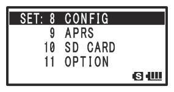</button><figcaption>Figure from page 128</figcaption><dialog id="fig-43"><p>Figure from page 128</p><form method="dialog"><button>Close</button></form></dialog></figure><figure><button aria-label="Enlarge Figure from page 128" class="zoom" data-dialog="fig-44" type="button">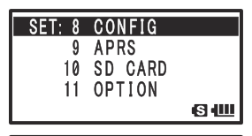</button><figcaption>Figure from page 128</figcaption><dialog id="fig-44"><p>Figure from page 128</p><form method="dialog"><button>Close</button></form></dialog></figure><figure><button aria-label="Enlarge Figure from page 128" class="zoom" data-dialog="fig-45" type="button">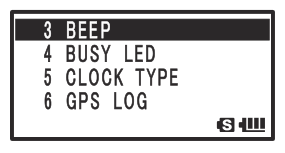</button><figcaption>Figure from page 128</figcaption><dialog id="fig-45"><p>Figure from page 128</p><form method="dialog"><button>Close</button></form></dialog></figure><figure><button aria-label="Enlarge Figure from page 128" class="zoom" data-dialog="fig-46" type="button">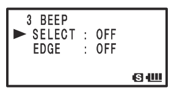</button><figcaption>Figure from page 128</figcaption><dialog id="fig-46"><p>Figure from page 128</p><form method="dialog"><button>Close</button></form></dialog></figure><p>~~<strong>Turning off the BUSY Indicator</strong>~~</p>
<p>When you listen to the radio continuously or when the remaining battery level has become
low, you can turn off the BUSY indicator to save battery power consumption.</p>
<p><strong>Enter the Set mode:</strong>
<strong>1</strong> Press and hold M for over 1 second.
<strong>2</strong> Turn O to select [8 CONFIG].
<strong>3</strong> Press H .
<strong>4</strong> Turn O to select [4 BUSY LED].
<strong>5</strong> Press H .
<strong>6</strong> Turn O to select a band.
Select a band from among [A BAND], [B BAND], and</p>
<p>[RADIO].
<strong>7</strong> Press H .
<strong>8</strong> Turn O to select [OFF].</p>
<p>~~<strong>Remark</strong>~~ Default: ON
<strong>9</strong> Press p .
The BUSY indicator is turned off, and exits from the Set
mode.</p>
<p>~~<strong>Setting the clock shift for the micro computer</strong>~~
~~<strong>Clock Type Function</strong>~~</p>
<p>The micro computer Clock Shift function may be set to reduce internal high frequency
spurious interference signals. Select [A] for normal use.</p>
<p><strong>Enter the Set mode:</strong>
<strong>1</strong> Press and hold M for over 1 second.
<strong>2</strong> Turn O to select [8 CONFIG].
<strong>3</strong> Press H .
<strong>4</strong> Turn O to select [5 CLOCK TYPE].
<strong>5</strong> Press H .
<strong>6</strong> Turn O to select a clock type.
A: The Clock Shift function is automatically turned on or off.
B: The Clock Shift function is continually active.</p>
<p>~~<strong>Remark</strong>~~ Default: A
<strong>7</strong> Press p to save the Clock Type setting, and exit the Set
mode.</p><p>~~<strong>Setting interval to save GPS position information</strong>~~</p>
<p>Set the interval at which the GPS information of your current position is saved to the
microSD memory card.</p>
<p><strong>Enter the Set mode:</strong>
<strong>1</strong> Press and hold M for over 1 second.
<strong>2</strong> Turn O to select [8 CONFIG].
<strong>3</strong> Press H .
<strong>4</strong> Turn O to select [6 GPS LOG].
<strong>5</strong> Press H .
<strong>6</strong> Turn O to select an interval to save GPS position
information.
OFF / 1 SEC / 2 SEC / 5 SEC /10 SEC / 30 SEC / 60 SEC
Information is not recorded to the microSD memory card if
OFF is selected.</p>
<p>~~<strong>Remark</strong>~~ Default: OFF
<strong>7</strong> Press p to save the GPS information saving interval
setting, and exit the Set mode.</p>
<p>~~<strong>Tips</strong>~~</p>
<ul>
<li>
<p>Data saved to the microSD memory card is saved in xxx.LOG format.</p>
</li>
<li>
<p>Saved data can be viewed with PC applications*.</p>
</li>
<li>
<p>PC applications are not supported by our company.</p>
</li>
</ul>
<p>~~<strong>Permitting Transfer of Home Channel Frequency to VFO</strong>~~</p>
<p>You can use the set operation to transfer home channel frequency information to the VFO.</p>
<p><strong>Enter the Set mode:</strong>
<strong>1</strong> Press and hold M for over 1 second.
<strong>2</strong> Turn O to select [8 CONFIG].
<strong>3</strong> Press H .
<strong>4</strong> Turn O to select [7 HOME VFO].
<strong>5</strong> Press H .
<strong>6</strong> Turn O to select Unlock or Lock.
ENABLE: Turning O in home channel transfers the home</p>
<p>channel frequency to VFO.
DISABLE: The home channel frequency cannot be</p>
<p>transferred.</p>
<p>~~<strong>Remark</strong>~~ Default: ENABLE
<strong>7</strong> Press p to save the frequency transfer ENABLE/DISABLE/</p>
<p>�������������
���
����������
���</p><p>~~<strong>Using the White LED as a Flashlight</strong>~~</p>
<p>The white LED may be used as a flashlight.</p>
<p><strong>Enter the Set mode:</strong>
<strong>1</strong> Press and hold M for over 1 second.
<strong>2</strong> Turn O to select [8 CONFIG].
<strong>3</strong> Press H .
<strong>4</strong> Turn O to select [8 LED LIGT].
<strong>5</strong> Press H .
The white LED lights as a flashlight.
<strong>6</strong> Press M .
The LED goes out.
<strong>7</strong> Press p to exit from the Set mode.</p>
<p>~~<strong>Setting the conditions for locking</strong>~~
~~<strong>LOCK Function</strong>~~</p>
<p>Conditions for activating Lock Function, such as keys, O, and p, can be set.
<strong>Enter the Set mode:</strong>
<strong>1</strong> Press and hold M for over 1 second.
<strong>2</strong> Turn O to select [8 CONFIG].
<strong>3</strong> Press H .
<strong>4</strong> Turn O to select [9 LOCK].
<strong>5</strong> Press H .
<strong>6</strong> Turn O to select the keys and switches to lock.
KEY &amp; DIAL: Locks the keys and O on the front of the</p>
<p>transceiver.
PTT: Locks p .
KEY &amp; PTT: Locks the keys and p on the front of the</p>
<p>transceiver.
DIAL &amp; PTT: Locks O and p .
ALL: Locks the keys, O, and p on the front of the
transceiver.
KEY: Locks the keys on the front of the transceiver.
DIAL: Locks O .</p>
<p>~~<strong>Remark</strong>~~ Default: KEY&amp;DIAL
<strong>7</strong> Press p .
The keys and switches to lock are set, and exits from the Set mode.</p><figure><button aria-label="Enlarge Figure from page 131" class="zoom" data-dialog="fig-47" type="button">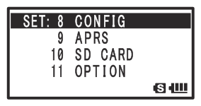</button><figcaption>Figure from page 131</figcaption><dialog id="fig-47"><p>Figure from page 131</p><form method="dialog"><button>Close</button></form></dialog></figure><figure><button aria-label="Enlarge Figure from page 131" class="zoom" data-dialog="fig-48" type="button">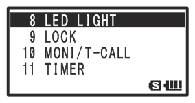</button><figcaption>Figure from page 131</figcaption><dialog id="fig-48"><p>Figure from page 131</p><form method="dialog"><button>Close</button></form></dialog></figure><p>~~<strong>Setting the operation of</strong>~~</p>
<p>The function for when T is pressed can be set.
<strong>Enter the Set mode:</strong>
<strong>1</strong> Press and hold M for over 1 second.
<strong>2</strong> Turn O to select [8 CONFIG].
<strong>3</strong> Press H .
<strong>4</strong> Turn O to select [10 MONI/T-CALL].
<strong>5</strong> Press H .
<strong>6</strong> Turn O to select the function.
MONI: Pressing T monitors frequency.
T-CALL: Pressing T functions as tone call.</p>
<p>~~<strong>Remark</strong>~~ Default: Depends on the transceiver version.
<strong>7</strong> Press H .
The function for T is set.
<strong>8</strong> Press p to save the setting and exit the Set mode.</p>
<p>~~<strong>Turning on/off the transceiver at the specified time</strong>~~
~~<strong>Timer Function</strong>~~</p>
<p>You can turn the transceiver to turn on/off at the set time. Before using this function, adjust
the clock. See “Setting clock time” on page 34.</p>
<p><strong>Enter the Set mode:</strong>
<strong>1</strong> Press and hold M over 1 second.
<strong>2</strong> Turn O to select [8 CONFIG].
<strong>3</strong> Press H .
<strong>4</strong> Turn O to select [11 TIMER].
<strong>5</strong> Press H .
<strong>6</strong> Turn O to select [ON] or [OFF].
ON: Turns on the transceiver at the specified time.
OFF: Turns off the transceiver at the specified time.
<strong>7</strong> Press H .
<strong>8</strong> Turn O to specify hours.
<strong>9</strong> Press H .
<strong>10</strong> Turn O to specify minutes.
<strong>11</strong> Press H .
<strong>12</strong> Turn O to switch between ON/OFF of the timer.
<strong>13</strong> Press M .
The timer function is turned on</p><figure><button aria-label="Enlarge Figure from page 132" class="zoom" data-dialog="fig-49" type="button">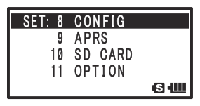</button><figcaption>Figure from page 132</figcaption><dialog id="fig-49"><p>Figure from page 132</p><form method="dialog"><button>Close</button></form></dialog></figure><figure><button aria-label="Enlarge Figure from page 132" class="zoom" data-dialog="fig-50" type="button">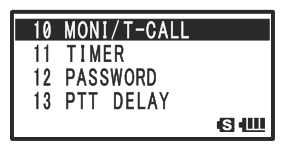</button><figcaption>Figure from page 132</figcaption><dialog id="fig-50"><p>Figure from page 132</p><form method="dialog"><button>Close</button></form></dialog></figure><figure><button aria-label="Enlarge Figure from page 132" class="zoom" data-dialog="fig-51" type="button"></button><figcaption>Figure from page 132</figcaption><dialog id="fig-51"><p>Figure from page 132</p><form method="dialog"><button>Close</button></form></dialog></figure><figure><button aria-label="Enlarge Figure from page 132" class="zoom" data-dialog="fig-52" type="button">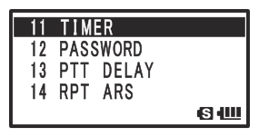</button><figcaption>Figure from page 132</figcaption><dialog id="fig-52"><p>Figure from page 132</p><form method="dialog"><button>Close</button></form></dialog></figure><figure><button aria-label="Enlarge Figure from page 132" class="zoom" data-dialog="fig-53" type="button">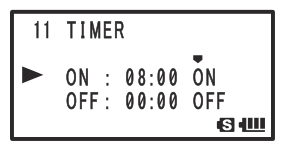</button><figcaption>Figure from page 132</figcaption><dialog id="fig-53"><p>Figure from page 132</p><form method="dialog"><button>Close</button></form></dialog></figure><figure><button aria-label="Enlarge Figure from page 132" class="zoom" data-dialog="fig-54" type="button">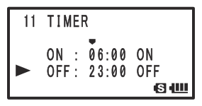</button><figcaption>Figure from page 132</figcaption><dialog id="fig-54"><p>Figure from page 132</p><form method="dialog"><button>Close</button></form></dialog></figure><p>~~<strong>Password Function</strong>~~</p>
<p>You can enter a 4-character password to prevent a third party from using your transceiver
without permission. Once a password is entered, the transceiver cannot be turned on until
the valid password is entered.</p>
<p><strong>Enter the Set mode:</strong>
<strong>1</strong> Press and hold M for over 1 second.
<strong>2</strong> Turn O to select [8 CONFIG].
<strong>3</strong> Press H .
<strong>4</strong> Turn O to select [12 PASSWORD].
<strong>5</strong> Press H .
<strong>6</strong> Press H .
<strong>7</strong> Turn O to enter the first character of the password.
Enter the first character (0-9. A to D, , and #) of the
password.
<strong>8</strong> Press H .
The cursor moves to the next character position.
<strong>9</strong> Repeat steps 7 and 8 to enter the remaining three characters.
<strong>10</strong> Press H .
<strong>11</strong> Turn O to select [ON].</p>
<p>~~<strong>Remark</strong>~~ Default: OFF
<strong>12</strong> Press p to save the password setting, and exit the Set mode.</p>
<p>~~<strong>Tips</strong>~~</p>
<ul>
<li>
<p>To cancel the password function, execute the above-mentioned steps 1 to 5, select “OFF” with O,
and then press p over 1 second.</p>
</li>
<li>
<p>Keypad keys cannot be used to enter the password.</p>
</li>
<li>
<p>When the on-timer function is active, the password function is ineffective.</p>
</li>
<li>
<p><strong>Turning on the transceiver using a password</strong>
<strong>1</strong> Press and hold P for over 1 second.
The password entry screen appears.
<strong>2</strong> Enter the password using keypad keys.
Enter the registered 4-character password.
When the valid password is entered, the frequency display screen appears.</p>
</li>
</ul>
<p>~~<strong>Remark</strong>~~ When an invalid password is entered, the transceiver is turned off automatically.</p>
<p>~~<strong>Caution</strong>~~</p>
<p>If you’ve forget the registered password, carrying out all resetting allows you to turn on the transceiver
without entering the password.
It should be noted that performing all resetting resets (initializes) all information such as the information
registered to memory channels and various setting values</p><p>~~<strong>Setting the PTT delay time</strong>~~
~~<strong>PTT DELAY Function</strong>~~</p>
<p>You can set the time for actual transmission to start after p is pressed.</p>
<p><strong>Enter the Set mode:</strong>
<strong>1</strong> Press and hold M for over 1 second.
<strong>2</strong> Turn O to select [8 CONFIG].
<strong>3</strong> Press H .
<strong>4</strong> Turn O to select [13 PTT DELAY].
<strong>5</strong> Press H .
<strong>6</strong> Turn O to select the time.
OFF/20ms/50ms/100ms/200ms</p>
<p>~~<strong>Remark</strong>~~ Default: OFF
<strong>7</strong> Press p to save the PTT delay time setting, and exit the
Set mode.</p>
<p>~~<strong>Setting the ARS function</strong>~~
~~<strong>RPT ARS Function</strong>~~</p>
<p>You can set the operation of ARS (Tuning in to the repeater frequency automatically
enables the repeater).</p>
<p><strong>Enter the Set mode:</strong>
<strong>1</strong> Press and hold M for over 1 second.
<strong>2</strong> Turn O to select [8 CONFIG].
<strong>3</strong> Press H .
<strong>4</strong> Turn O to select [14 RPT ARS].
<strong>5</strong> Press H .
<strong>6</strong> Turn O to select ON/OFF.
ON: ARS is functional.
OFF: ARS is not functional.</p>
<p>~~<strong>Remark</strong>~~ Default: ON
<strong>7</strong> Press p to save the ARS function ON/OFF setting, and exit
the Set mode.</p><figure><button aria-label="Enlarge Figure from page 134" class="zoom" data-dialog="fig-55" type="button">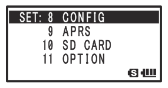</button><figcaption>Figure from page 134</figcaption><dialog id="fig-55"><p>Figure from page 134</p><form method="dialog"><button>Close</button></form></dialog></figure><figure><button aria-label="Enlarge Figure from page 134" class="zoom" data-dialog="fig-56" type="button">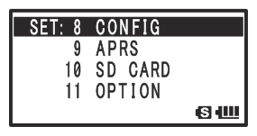</button><figcaption>Figure from page 134</figcaption><dialog id="fig-56"><p>Figure from page 134</p><form method="dialog"><button>Close</button></form></dialog></figure><p>~~<strong>Setting the direction for repeater shift</strong>~~
~~<strong>RPT SHIFT Function</strong>~~</p>
<p>You can set the direction of repeater shift.</p>
<p><strong>Enter the Set mode:</strong>
<strong>1</strong> Press and hold M for over 1 second.
<strong>2</strong> Turn O to select [8 CONFIG].
<strong>3</strong> Press H .
<strong>4</strong> Turn O to select [15 RPT SHIFT].
<strong>5</strong> Press H .
<strong>6</strong> Turn O to select the shift direction.
SIMPLEX: Does not shift.
–RPT: Shifts toward lower frequencies.
+RPT: Shifts toward higher frequencies.</p>
<p>~~<strong>Remark</strong>~~ Default setting differs depending frequency
<strong>7</strong> Press p to save the repeater shift direction setting, and exit
the Set mode.</p>
<p>~~<strong>Setting the range for repeater shift</strong>~~
~~<strong>RPT SHIFT FREQ Function</strong>~~</p>
<p>You can set the repeater shift range.</p>
<p><strong>Enter the Set mode:</strong>
<strong>1</strong> Press and hold M for over 1 second.
<strong>2</strong> Turn O to select [8 CONFIG].
<strong>3</strong> Press H .
<strong>4</strong> Turn O to select [16 RPT SHIFT FREQ].
<strong>5</strong> Press H .
<strong>6</strong> Turn O to select shift range.
The range can be set in steps of 50 kHz between 0.0000
MHz and 150.000 MHz.
Pressing F and then turning O allows you to set
frequencies in steps of 1 MHz.</p>
<p>~~<strong>Remark</strong>~~ Default setting differs depending frequency
<strong>7</strong> Press p to save the repeater shift range setting, and exit
the Set mode.</p><figure><button aria-label="Enlarge Figure from page 135" class="zoom" data-dialog="fig-57" type="button">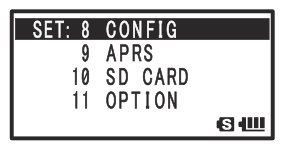</button><figcaption>Figure from page 135</figcaption><dialog id="fig-57"><p>Figure from page 135</p><form method="dialog"><button>Close</button></form></dialog></figure><figure><button aria-label="Enlarge Figure from page 135" class="zoom" data-dialog="fig-58" type="button">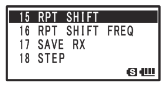</button><figcaption>Figure from page 135</figcaption><dialog id="fig-58"><p>Figure from page 135</p><form method="dialog"><button>Close</button></form></dialog></figure><p>~~<strong>Disabling reception while no signal is received</strong>~~
~~<strong>Reception Save Function</strong>~~</p>
<p>To reduce power consumption, the reception function can be turned off when not receiving
a signal.</p>
<p><strong>Enter the Set mode:</strong>
<strong>1</strong> Press and hold M for over 1 second.
<strong>2</strong> Turn O to select [8 CONFIG].
<strong>3</strong> Press H .
<strong>4</strong> Turn O to select [17 SAVE RX].
<strong>5</strong> Press H .
<strong>6</strong> Turn O to select the time.
Select the time for the reception to be turned off automatically.
0.2 SEC (1:1) to 1.0 SEC (1:5) (Step: 0.1 sec)
to 1.0 SEC (1:5) to 10 SEC (1:50) (Step: 0.5 sec)
to 1.0 sec (1:50) to 60 sec (1:300 sec) step 5 sec
OFF</p>
<p>~~<strong>Remark</strong>~~ Default: 0.2 sec (1:1)
<strong>7</strong> Press p to save the Reception Save function setting, and
exit the Set mode.</p>
<p>~~<strong>Changing the frequency step manually</strong>~~</p>
<p>Frequency step can be set so that it can be changed manually.
For more details, see “Changing the Frequency Step Manually” on page 37.</p>
<p>~~<strong>Setting clock time</strong>~~</p>
<p>Set the time for the internal clock of this transceiver.
For details, see “Setting clock time” on page 34.</p>
<p>~~<strong>Restricting the continuous transmission time</strong>~~
~~<strong>TOT Function</strong>~~</p>
<p>Set the transceiver to automatically return to the receive mode after transmitting
continuously for a certain period of time. Accidental transmission of unnecessary signals,
and unwanted battery power consumption can be prevented (time-out timer function).</p>
<p><strong>Enter the Set mode:</strong>
<strong>1</strong> Press and hold M for over 1 second.
<strong>2</strong> Turn O to select [8 CONFIG].
<strong>3</strong> Press H .</p><figure><button aria-label="Enlarge Figure from page 136" class="zoom" data-dialog="fig-59" type="button"></button><figcaption>Figure from page 136</figcaption><dialog id="fig-59"><p>Figure from page 136</p><form method="dialog"><button>Close</button></form></dialog></figure><p><strong>4</strong> Turn O to select [20 TOT].
<strong>5</strong> Press H .
<strong>6</strong> Turn O to select the time.
Set the time for the transceiver to automatically return to the
reception state in steps of 30 seconds.
OFF/30 SEC to 10 MIN</p>
<p>~~<strong>Remark</strong>~~ Default: OFF
<strong>7</strong> Press p to save the TOT function setting, and exit the Set
mode.</p>
<p>~~<strong>Tips</strong>~~</p>
<ul>
<li>
<p>When the time-out timer function is active, a beep is emitted when it comes near the set time. About
10 seconds later, the transceiver returns to the reception state.</p>
</li>
<li>
<p>Once the time is set, it is retained until “OFF” is selected in step 6 of the above-mentioned procedure.</p>
</li>
</ul>
<p>~~<strong>Setting the frequency selection range for operation in the VFO mode</strong>~~
~~<strong>VFO MODE Function</strong>~~</p>
<p>You can set the frequency selection range for operating in the VFO mode.</p>
<p><strong>Enter the Set mode:</strong>
<strong>1</strong> Press and hold M over 1 second.
<strong>2</strong> Turn O to select [8 CONFIG].
<strong>3</strong> Press H .
<strong>4</strong> Turn O to select [21 VFO MODE].
<strong>5</strong> Press H .
<strong>6</strong> Turn O to select a frequency range.
ALL: Switches to the next band when the end of a band is</p>
<p>reached.
BAND: Moves to the other end of the band when the end of</p>
<p>that band is reached.</p>
<p>~~<strong>Remark</strong>~~ Default: BAND
<strong>7</strong> Press p to save the frequency selection range setting, and
exit the Set mode.</p><p>~~<strong>Notification of a call from a remote station by vibration</strong>~~</p>
<p>The vibrator function may be set to notify you of a call from a remote station.
For details, see “Notification of Call from the Remote Station by Vibration of the Vibrator”
on page 88.</p>
<p>~~<strong>Saving/ Loading data to/from microSD memory card</strong>~~</p>
<p>Settings information can be saved to a microSD memory card, also the saved information
can be loaded to the transceiver.</p>
<p><strong>Enter the Set mode:</strong>
<strong>1</strong> Press and hold M over 1 second.
<strong>2</strong> Turn O to select [10 SD CARD].
<strong>3</strong> Press H .
<strong>4</strong> Turn O to select [1 BACKUP].
<strong>5</strong> Press H .
<strong>6</strong> Turn O to select [Write to SD] or [Read from SD].
Write to SD: Saves the setting information of your transceiver</p>
<p>to the microSD memory card.
Read from SD: Loads the setting information to your</p>
<p>transceiver from the microSD memory card.
Cancel: Stops save or load.
<strong>7</strong> Press H .</p>
<p>[OK?] appears on the LCD.
<strong>8</strong> Press H .
The write or read is performed and [Completed] appears
when finished.
<strong>9</strong> Press p to exit from the Set mode.</p>
<p>~~<strong>Saving/ Loading memory channel information</strong>~~
~~<strong>to/from microSD memory card</strong>~~</p>
<p>Memory channel setting information can be saved to a microSD memory card, or saved
information can be loaded to this transceiver.</p>
<p><strong>Enter the Set mode:</strong>
<strong>1</strong> Press and hold M for over 1 second.
<strong>2</strong> Turn O to select [10 SD CARD].
<strong>3</strong> Press H .</p><figure><button aria-label="Enlarge Figure from page 138" class="zoom" data-dialog="fig-60" type="button"></button><figcaption>Figure from page 138</figcaption><dialog id="fig-60"><p>Figure from page 138</p><form method="dialog"><button>Close</button></form></dialog></figure><p><strong>4</strong> Turn O to select [2 MEMORY CH].
<strong>5</strong> Press H .
<strong>6</strong> Turn O to select [Write to SD] or [Read from SD].
Write to SD: A beep is heard and [Completed] appears when</p>
<p>writing to SD finished.
Read from SD: A beep is heard when loading from SD finished</p>
<p>and the transceiver restarts with the settings
read from the microSD memory card. (The
operation in step 9 is not required.)
Cancel: Stops save or load.
<strong>7</strong> Press H .</p>
<p>[OK?] appears on the LCD.
<strong>8</strong> Press H .
The write or read is performed and [Completed] appears
when finished.
<strong>9</strong> Press p to exit from the Set mode.</p>
<p>~~<strong>Saving/ Loading GROUP ID information to/from</strong>~~
~~<strong>microSD memory card</strong>~~</p>
<p>Group ID setting information can be saved to a microSD memory card, or saved information can be loaded to this transceiver.</p>
<p><strong>Enter the Set mode:</strong>
<strong>1</strong> Press and hold M for over 1 second.
<strong>2</strong> Turn O to select [10 SD CARD].
<strong>3</strong> Press H .
<strong>4</strong> Turn O to select [3 GROUP ID].
<strong>5</strong> Press H .
<strong>6</strong> Turn O to select [Write to SD] or [Read from SD].
Write to SD: Saves the Group ID information to your</p>
<p>transceiver to the microSD memory card.
Read from SD: Loads the Group ID information to your</p>
<p>transceiver from the microSD memory card.
Cancel: Stops save or load.
<strong>7</strong> Press H .</p>
<p>[OK?] appears on the LCD.</p><p><strong>8</strong> Press H .
Write to SD: A beep is heard and [Completed] appears when</p>
<p>writing to SD finished.
Read from SD: A beep is heard when loading from SD</p>
<p>finished and the transceiver restarts with
the settings read from the microSD memory
card. (The operation in step 9 is not required.)
<strong>9</strong> Press p to exit from the Set mode.</p>
<p>~~<strong>Formatting a microSD memory card</strong>~~</p>
<p>Format a new microSD.
For more details, see “Formatting a microSD memory card” on page 24.</p>
<p>~~<strong>Setting the optional microphone with camera for use</strong>~~</p>
<p>Image size and quality can be set for the optional microphone with camera (MH-85A11U).</p>
<p><strong>Enter the Set mode:</strong>
<strong>1</strong> Press and hold M for over 1 second.
<strong>2</strong> Turn O to select [11 OPTION].
<strong>3</strong> Press H .
<strong>4</strong> Turn O to select [1 USB CAMERA].
<strong>5</strong> Press H .
<strong>6</strong> Turn O to select [SIZE].
<strong>7</strong> Press H .
<strong>8</strong> Turn O to select an image size.
320 × 240
160 × 120
<strong>9</strong> Press H .
<strong>10</strong> Turn O to select [QUALITY].
<strong>11</strong> Press H .
<strong>12</strong> Turn O to select an image quality.
LOW: Low image quality
NORMAL: Intermediate image quality
HIGH: High image quality
<strong>13</strong> Press p to exit from the Set mode.</p>
<p>~~<strong>Caution</strong>~~</p>
<p>�If image size is set to large or image quality is set to high, the data transmission time becomes longer.
�The transmission time varies depending on the content of an image.</p><figure><button aria-label="Enlarge Figure from page 140" class="zoom" data-dialog="fig-61" type="button">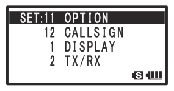</button><figcaption>Figure from page 140</figcaption><dialog id="fig-61"><p>Figure from page 140</p><form method="dialog"><button>Close</button></form></dialog></figure><figure><button aria-label="Enlarge Figure from page 140" class="zoom" data-dialog="fig-62" type="button"></button><figcaption>Figure from page 140</figcaption><dialog id="fig-62"><p>Figure from page 140</p><form method="dialog"><button>Close</button></form></dialog></figure><figure><button aria-label="Enlarge Figure from page 140" class="zoom" data-dialog="fig-63" type="button">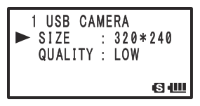</button><figcaption>Figure from page 140</figcaption><dialog id="fig-63"><p>Figure from page 140</p><form method="dialog"><button>Close</button></form></dialog></figure><figure><button aria-label="Enlarge Figure from page 140" class="zoom" data-dialog="fig-64" type="button">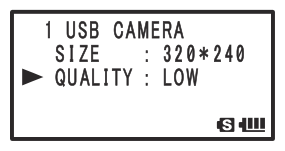</button><figcaption>Figure from page 140</figcaption><dialog id="fig-64"><p>Figure from page 140</p><form method="dialog"><button>Close</button></form></dialog></figure><p>~~<strong>Registering CALLSIGN</strong>~~</p>
<p>The CALLSIGN used in the digital mode can be registered with up to 10 alphanumeric
characters.</p>
<p><strong>Enter the Set mode:</strong>
<strong>1</strong> Press and hold M for over 1 second.
<strong>2</strong> Turn O to select [12 CALLSIGN].
<strong>3</strong> Press H .
<strong>4</strong> Enter the characters using keypad keys.
Enter a callsign using keypad keys with reference to the
following table.</p>
<table>
<thead>
<tr>
<th>Numeric key</th>
<th>A, 0 (Alphanumeric)</th>
</tr>
</thead>
<tbody>
<tr>
<td>1</td>
<td>1</td>
</tr>
<tr>
<td>2</td>
<td>ABC2</td>
</tr>
<tr>
<td>3</td>
<td>DEF3</td>
</tr>
<tr>
<td>4</td>
<td>GHI4</td>
</tr>
<tr>
<td>5</td>
<td>JKL5</td>
</tr>
<tr>
<td>6</td>
<td>MNO6</td>
</tr>
<tr>
<td>7</td>
<td>PQRS7</td>
</tr>
<tr>
<td>8</td>
<td>TUV8</td>
</tr>
<tr>
<td>9</td>
<td>WXYZ9</td>
</tr>
<tr>
<td>0</td>
<td>0</td>
</tr>
</tbody>
</table>
<p>~~<strong>Tip</strong>~~   - Pressing H moves the cursor to the right.</p>
<pre><code>  - Press the % to move the corsor back to the left.

  - Press the F to delete the letter or number at the current cursor position.
</code></pre>
<p><strong>5</strong> Press H .
The cursor moves.
<strong>6</strong> Repeat steps 4 and 5 to enter the CALLSIGN.
<strong>7</strong> Press p to save the CALLSIGN setting and exit the Set mode.</p><p>~~<strong>Using the transceiver for packet communication</strong>~~</p>
<p>You can perform packet communication with your transceiver by connecting TNC
(Terminal Node Controller) using an optional connection cable (CT-44).</p>
<p>After TNC is connected, set the level of output to TNC by adjusting the sound volume level
of your transceiver.
Also adjust the level of input to your transceiver using the output level adjustment volume
on the TNC (Input level cannot be adjusted on your transceiver)</p>
<p>~~<strong>Caution</strong>~~</p>
<ul>
<li>When sending a vast volume of data, the transmission takes a longer time and the transceiver may be
overheated.
If the transmission is continued for a long time, the overheat prevention circuit will operate and the
transmission power decreases. If the transmission is continued further, the transmission will be automatically stopped to prevent the transceiver from overheating and consequently malfunctioning.
The transceiver will return to the receive mode.
When the transceiver returns to the receive mode after the overheat prevention circuit has operated,
turn the transceiver off, or keep it in the receive mode until the temperature cools.</li>
</ul>
<p>~~<strong>Tips</strong>~~</p>
<ul>
<li>Set the Receive Battery Save function to OFF during packet communication by selecting</li>
</ul>
<p>[8 CONFIG] → [17 SAVE RX] in the Set mode.</p>
<ul>
<li>
<p>The reception can be interfered with a noise generated from PC.
If the transceiver can not receive normally, disconnect it from the PC and reconnect it to the PC using
a photocoupler or noise filter.</p>
</li>
<li>
<p>To connect the TNC and PC, refer to the TNC instruction manual.</p>
</li>
</ul><p>~~<strong>Clone Operation</strong>~~</p>
<p>Data and various settings saved in your transceiver can be copied to another FT1XDR/
DE transceiver.</p>
<p><strong>1</strong> Turn off the power of both FT1XDR/DE transceivers and connect an optional clone
cable (CT-168) to the DATA terminal of each transceiver.
<strong>2</strong> Press P while pressing F on each transceiver.
The two transceivers are turned on and placed in the clone
mode.
<strong>3</strong> Press % on the receiving side transceiver and B on
the transmission side.
Copying data starts.
When copying starts, the display on the receiving transceiver changes from</p>
<p>[--WAIT--] to [--RX--]. When data transmission begins from the sending transceiver,
the data transmission indicator appears on the LCD, indicating the data transfer is
in progress. The indicator appears on the receiving transceiver, as well when data
reception starts.</p>
<p>~~<strong>Tips</strong>~~ When copying is completed, the reception side transceiver returns to the normal mode. The</p>
<p>indication on the LCD of the transmission side transceiver returns from [--TX--] to [CLONE].
<strong>4</strong> Turn off the power of both transceivers and disconnect the clone cable.</p>
<p>~~<strong>Caution</strong>~~</p>
<p>�When the [ERROR] appears on the LCD during data transfer, copying cannot be completed. Check
the clone cable connection, and redo the clone operation from the beginning.</p><p>~~<strong>Connecting an external device</strong>~~</p>
<p>Using the DATA terminal, the transceiver can support various functions by setting “GPS”,
the internal GPS unit begins outputting the position information data. The position
information of the transceiver can be transferred at approximately 1 second intervals
to the computer so that the position of the transceiver can be displayed in real-time on
programs such as map software.</p>
<p>~~<strong>Tips</strong>~~</p>
<ul>
<li>
<p>For properties such as communication speed and Input/Output between COM ports.</p>
</li>
<li>
<p>For more details, see the Set mode option, [9 APRS] → [17 COM PORT SETTING].</p>
</li>
</ul>
<p><strong>Connecting to a PC</strong></p>
<p>Connecting a PC to the data terminal of the FT1XDR/DE using the PC Connection Cable
(SCU-19) accessory will enable data transmission or updating firmware as described
below.</p>
<p><strong>a. Transmit position location information received by the FT1XDR/DE internal GPS</strong></p>
<p><strong>unit.</strong>
By setting [OUTPUT] in [17 COM PORT SETTING] of Set mode option [9 APRS] to details
on settings, see Set mode option [17 COM PORT SETTING] in the APRS Instruction
Manual.</p>
<ul>
<li>To show information, software operating with NMEA-0183 specified GGA and RMC
sentence is required.</li>
</ul>
<p><strong>b. FT1XDR/DE Firmware Updates</strong>
When a new firmware update for the FT1XDR/DE is available, go to the YAESU homepage
to download the programming data and update the FT1XDR/DE to its newest state.</p>
<p>~~<strong>Tip</strong>~~</p>
<p>To use the SCU-19, install a dedicated driver to the PC. For downloading the dedicated driver and</p><p><strong>Connecting the FT1XDR/DE to external devices</strong></p>
<p>Position information data can be exchanged between commercially sold GPS receivers
or other external devices by using the optional Data Cable (CT-170) or the Data Cable
2.5Φ (CT-176).</p>
<p>~~<strong>Tip</strong>~~</p>
<p>Connect the Data Cable (CT-170) and the Data Output Cable (CT-176) by referring to the instruction
manual for the GPS device to be used, and cable specifications on the next page.</p>
<p><strong>Data Cable (CT-170)</strong></p>
<p>①</p>
<p>①
↓
⑤</p>
<p>⑥
↓
⑪</p>
<p>③</p>
<p>②</p>
<p>⑦ RXD (Serial data input [FT1XDR/DE ← External</p>
<p>Equipment]) Equipment])</p>
<p>⑧ TXD (Serial data output [FT1XDR/DE → External ②</p>
<p>Equipment]) Equipment])</p>
<p>⑪ GND ③ GND</p>
<p>Equipment])</p>
<p>Equipment])</p>
<p>① RXD (Serial data input [FT1XDR/DE ← External</p>
<p>Equipment])</p>
<p>② TXD (Serial data output [FT1XDR/DE → External</p>
<p><strong>Data Cable (2.5Φ) (CT-176)</strong></p>
<p>③</p>
<p>③</p>
<p>②</p>
<p>②</p>
<p>① RXD (Serial data input [FT1XDR/DE ← External</p>
<p>Equipment]) Equipment])</p>
<p>② TXD (Serial data output [FT1XDR/DE → External ②</p>
<p>Equipment]) Equipment])</p>
<p>③ GND ③ GND</p>
<p>Equipment])</p>
<p>Equipment])</p>
<p>① TXD (Serial data output [FT1XDR/DE → External</p>
<p>Equipment])</p>
<p>② RXD (Serial data input [FT1XDR/DE ← External</p><figure><button aria-label="Enlarge Figure from page 145" class="zoom" data-dialog="fig-65" type="button">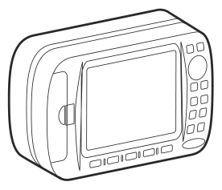</button><figcaption>Figure from page 145</figcaption><dialog id="fig-65"><p>Figure from page 145</p><form method="dialog"><button>Close</button></form></dialog></figure><p>① Speaker / Microphone (MH-34B4B)
② Earpiece Microphone (MH-37A4B)
③ VOX Headset (SSM-63A)
④ Microphone Adapter (CT-44)
⑤ DC Cable w/ Noise Filter (SDD-13)</p>
<p>(USA/EXP market only)
⑥ DC Cable (E-DC-6) (USA/EXP market only)
⑦ BNC-to-SMA Adapter (CN-3)
⑧ Soft Case (CSC-97)
⑨ 3x “AA” Cell Battery Case (FBA-39)
⑩ Lithium Ion Battery Packs (FNB-101LI, 7.4 V,</p>
<p>⑪ Lithium Ion Battery Packs
(SBR-14LI, 7.2 V, 2200 mAh)
⑫ Rapid Charger (CD-41)
⑬ Battery Charger (PA-48B/C/U*)
Battery Charger (SAD-14B; for USA market)
⑭ Speaker Microphone with Snapshot camera</p>
<p>(MH-85A11U)
⑮ Clone Cable (CT-168)
⑯ Data Cable (CT-170)
⑰ PC Connection Cable (SCU-19)
⑱ Data Cable (2.5Φ) (CT-176)
⑲ Belt Clip (SBH-13)</p>
<p>1100 mAh)</p>
<ul>
<li>“B” suffix is for use with 120 VAC (Type-A plug), “C” suffix is for use with 230-240 VAC (Type-C plug), and
“U” suffix is for use with 230 VAC (Type-BF plug).</li>
</ul>
<p><em>Availability of accessories may vary. Some accessories are supplied as standard per local requirements,</em>
<em>while others may be unavailable in some regions. Consult your Yaesu Dealer for details regarding these</em>
<em>and any newly-available options. Connection of any non-Yaesu approved accessory, should it cause dam-</em>
<em>age, may void the Limited Warranty on this apparatus.</em></p><figure><button aria-label="Enlarge Figure from page 146. ⑧ ⑦" class="zoom" data-dialog="fig-66" type="button">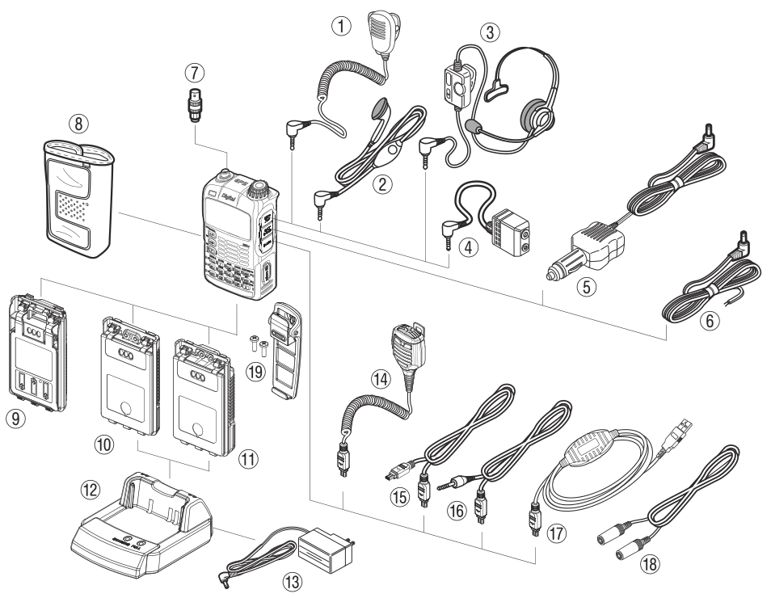</button><figcaption>Figure from page 146. ⑧ ⑦</figcaption><dialog id="fig-66"><p>Figure from page 146. ⑧ ⑦</p><form method="dialog"><button>Close</button></form></dialog></figure><p><strong>The transceiver does not turn on.</strong></p>
<p>⿠ ⿠Is the battery is depleted?</p>
<p>⿠ ⿠Charge the battery pack after purchase, and when the transceiver has not been used for a long time.</p>
<p>⿠ ⿠Is the battery pack properly set?</p>
<p>Refer to “Mounting the battery pack” and securely mount the battery pack.
⿠ ⿠Is the external power supply properly connected?</p>
<p>When using a external power supply, connect an external power supply adapter with a cigarette lighter
plug (SDD-13) or an external power cable (E-DC-6) to this jack.
⿠ ⿠Is the voltage of the battery pack or the SDD-13 correct?</p>
<p>Be sure that there is a charge left in the battery pack (do not completely discharge). Check that the
output voltage of the SDD-13 is approximately 12V.</p>
<p><strong>There is no sound</strong></p>
<p>⿠ ⿠Is the level of squelch (or S meter squelch) set too high?</p>
<p>Press the Monitor Switch and check that you can hear white noise.
Adjust the level of squelch (or S meter squelch) when receiving a weak signal.
⿠ ⿠Is the volume low?</p>
<p>Turn O clockwise while pressing v to increase the sound volume.
⿠ ⿠Is the tone squelch or DCS on?</p>
<p>When the tone squelch or DCS is on, the sound is not output until the transceiver receives a signal
containing the same tone frequency or DCS code set.</p>
<p><strong>There is no transmission of radio waves.</strong></p>
<p>⿠ ⿠Are you pressing the p switch properly?</p>
<p>⿠ ⿠Is the PTT lock on?</p>
<p>⿠ ⿠Is the Busy TX Block (BCLO function) on?</p>
<p>When the Busy TX Block (BCLO Function) is on, transmission cannot be done when receiving a signal
even if p is pressed. Wait until signal being received stops and then press p .
⿠ ⿠Is the transmission frequency on an ham radio band?</p>
<p>Transmission cannot be performed on the AM Radio Broadcast Band/ Short Wave Radio Band/ FM
Radio Broadcast Band/ Air Band/ Information Radio Band.
⿠ ⿠Is the voltage of the battery pack or external power source correct?</p>
<p>Check the remaining charge on the battery pack.
In addition, using a power supply where voltage drops during transmission will prevent the FT1XDR/DE
from operating on full capability.</p>
<p><strong>The keys or</strong> O <strong>does not respond.</strong></p>
<p>⿠ ⿠Is the Key Lock or DIAL Lock on?</p><p><strong>The battery pack cannot be charged or battery</strong>
<strong>power depletes immediately after charging.</strong></p>
<p>⿠ ⿠Is the battery pack being charged with a charger specified by Yaesu?</p>
<p>Charge the battery pack using the accessory battery charger (PA-48B or SAD-14B) or the rapid charge
cradle (CD-41).
When using a external power supply, use the external power supply adapter with a cigarette lighter plug
(SDD-13) or an external power cable (E-DC-6).
⿠ ⿠Is the battery pack in use exhausted?</p>
<p>If the “Charging Error” appears on the LCD when charging, there is a chance the battery pack is over
discharged. If the error is repetitively displayed after charging the battery pack several times, the battery
pack may have reached its service life or defective. Battery packs are consumables. Please replace the
battery pack with a new one immediately. Battery packs can be charged and reused up to approximately
300 times.</p>
<p>Depending on the combination for simultaneous reception, there may be internal beats from high frequencies caused by the internal oscillator. This is not a malfunction. (See the calculation formula below: “n” is for
the arbitrary integer). Depending on the combination for simultaneous reception, there may be fluctuations
in reception sensitivity.</p>
<p>⿠ ⿠Reception Frequency = 16 MHz × n multiplicative</p>
<p>⿠ ⿠Reception Frequency = 15.6 MHz × n multiplicative</p>
<p>⿠ ⿠Reception Frequency = 4.9152 MHz × n multiplicative</p>
<p>⿠ ⿠Reception Frequency = 15.6 MHz × n multiplicative</p>
<p>⿠ ⿠Reception Frequency = 18.432 MHz × n multiplicative</p>
<p>⿠ ⿠Upper Side (A-Band) Frequency = (Lower Side (B-band) Frequency ± 46.35 MHz) × n multiplicative</p>
<p>⿠ ⿠Upper Side (A-Band) Frequency = (Lower Side (B-band) Frequency ± 47.25 MHz) × n multiplicative @</p>
<p>Upper Side (A-band) Mode = NFM</p><p><strong>Symbol</strong></p>
<ul>
<li>A key — 12</li>
<li>B key . — 12</li>
<li>D key . — 12</li>
<li>F key — 12</li>
<li>H key — 12</li>
<li>p switch . — 12</li>
<li>P switch — 12</li>
<li>T key — 12</li>
</ul>
<p><strong>A</strong></p>
<ul>
<li>Activating the GPS function . — 68</li>
</ul>
<p>Adjusting the LCD backlight and
keypad key light brightness level <strong>.</strong> ..107</p>
<ul>
<li>Adjusting the LCD contrast level — 106</li>
<li>Adjusting the microphone sensitivity — 115</li>
</ul>
<p>Adjusting the squelch level...............................................37, 121</p>
<ul>
<li>Adjusting the volume level . — 26</li>
<li>AF-DUAL function . — 77</li>
<li>All reset — 39</li>
<li>AMS . — 32</li>
<li>AMS transmission mode — 112</li>
<li>Analog FM mode — 32</li>
<li>Antenna — 6</li>
<li>Antenna terminal — 12</li>
<li>APO function — 127</li>
<li>APRS function — 67</li>
</ul>
<p>*web</p>
<ul>
<li>Assigning a name to a memory channel — 47</li>
<li>Assigning name to memory bank — 49</li>
<li>ATT function — 109</li>
<li>Attaching a hand strap — 16</li>
<li>Attaching the belt clip — 15</li>
<li>Attaching the protective cap — 15</li>
<li>Attenuator function — 109</li>
</ul>
<p><strong>B</strong></p>
<ul>
<li>BACK TRACK function screen — 74</li>
<li>Backtrack function — 74</li>
<li>Band scope function — 82</li>
<li>Battery approximate operating time — 19</li>
<li>Battery case (FBA-39) — 16</li>
<li>Battery Case 3x “AA” Cell (FBA-39) — 146</li>
<li>Battery charger (PA-48B/C/U) . — 146</li>
<li>Battery charger (SAD-14B; for USA market) — 146</li>
<li>BCLO function — 128</li>
<li>Before transmitting radio waves — 11</li>
<li>Being called by the remote station (standby operation) — 93</li>
<li>Bell — 89</li>
<li>Belt clip — 6</li>
<li>BNC-to-SMA adapter (CN-3) — 146</li>
<li>Bundled items . — 6</li>
<li>Busy Channel Lockout function — 128</li>
<li>BUSY/TX lamp — 12</li>
</ul>
<p><strong>C</strong></p>
<ul>
<li>Calling a specific station — 92</li>
<li>Calling only a specific station (new pager function) — 90</li>
<li>Callsign . — 25</li>
<li>Canceling memory channel registration in memory bank — 49</li>
<li>
<p>Canceling scanning — 57</p>
</li>
<li>
<p>Changing the frequency step manually — 37</p>
</li>
<li>Changing the lighting condition — 105</li>
<li>Changing the mode manually . — 38</li>
<li>Changing the number of times the bell rings — 89</li>
</ul>
<p>Changing the opening message displayed</p>
<ul>
<li>immediately after power-on — 107</li>
<li>Changing the sound volume setting method — 116</li>
<li>Changing the transmission power level . — 36</li>
<li>Charging the battery pack — 17</li>
<li>Clock Type function — 129</li>
<li>Clone cable (CT-168) — 146</li>
<li>Clone operation — 143</li>
<li>Communicating via the repeater — 40</li>
<li>Communicating with a apecific remote station — 84</li>
<li>Communication mode — 32</li>
<li>Confirming the entered DTMF code by the sound — 80</li>
<li>Connecting the FT1XDR/DE to external devices — 145</li>
</ul>
<p><strong>D</strong></p>
<ul>
<li>Data Cable (2.5Φ) (CT-176) — 146</li>
<li>Data cable (CT-170) — 146</li>
<li>Data FR mode — 32</li>
<li>DATA terminal . — 12</li>
<li>DC cable (E-DC-6) — 146</li>
<li>DC cable w/ noise filter (SDD-13) — 146</li>
<li>DCS — 84</li>
<li>DCS code — 86</li>
<li>DCS INVERSION function — 119</li>
</ul>
<p>Deleting a frequency registered to the
skip search memory channel <strong>.</strong> ..58</p>
<ul>
<li>Deleting memory channel . — 46</li>
<li>Digital communication — 32</li>
<li>Digital mode — 32</li>
<li>Disabling reception while no signal is received — 136</li>
<li>Dismounting microSD memory card . — 23</li>
<li>Displaying memory tag — 47</li>
<li>Displaying the GPS screen — 103</li>
<li>Displaying the version of the DSP program . — 115</li>
<li>DTMF function — 79</li>
<li>Dual reception function . — 75</li>
<li>DW . — 75</li>
<li>DW TIME function — 124</li>
</ul>
<p><strong>E</strong></p>
<ul>
<li>Earpiece microphone (MH-37A4B) — 146</li>
<li>Enabling no-communication squelch function — 120</li>
<li>Enter the Set mode — 94</li>
<li>EXT DC IN jack — 12</li>
<li>External power supply — 21</li>
<li>External power supply for use in vehicle — 20</li>
</ul>
<p><strong>F</strong></p>
<ul>
<li>Flashlight (white LED) — 12</li>
<li>Flow of operation to use the pager function — 90</li>
<li>FM mode — 32</li>
<li>Formatting a microSD memory card — 24</li>
<li>Frequencies of international VHF (marine) radio — 53</li>
<li>Frequency band for the A-band — 29</li>
<li>Frequency band for the B-band . — 29</li>
<li>FT1XDR/DE . — 6</li>
<li>FT1XDR/DE Firmware Updates — 144</li>
</ul><table>
<thead>
<tr>
<th>Col1</th>
<th>Col2</th>
</tr>
</thead>
<tbody>
<tr>
<td></td>
<td></td>
</tr>
<tr>
<td><strong>G</strong></td>
<td></td>
</tr>
</tbody>
</table>
<ul>
<li>GM function — 65</li>
</ul>
<p>*web</p>
<ul>
<li>GPS — 68</li>
<li>Group monitor function — 65</li>
</ul>
<p>*web
<strong>H</strong></p>
<ul>
<li>Home channel — 45</li>
<li>Home channel dual reception. — 76</li>
<li>HOME VFO — 130</li>
</ul>
<p><strong>I</strong></p>
<ul>
<li>Input a callsign — 25</li>
<li>Installing the antenna — 15</li>
<li>Installing the battery pack. — 17</li>
<li>International VHF (marine) radio — 52</li>
</ul>
<p>IPX5<strong>.</strong>........................................................................................11|<strong>P</strong></p>
<ul>
<li>Packet communication — 142</li>
<li>Password function — 133</li>
</ul>
<p>PC connection cable (SCU-19)..........................................6, 146
Performing communication<strong>.</strong>...............................................25, 31</p>
<ul>
<li>Performing programmable memory channel scan — 64</li>
<li>Permitting transfer of home channel frequency to VFO — 130</li>
<li>PMS. — 63</li>
<li>PMS memory channel — 63</li>
<li>Positioning by GPS — 70</li>
<li>Power cable. — 20</li>
<li>Power supply voltage measurement function. — 108</li>
<li>PR FREQUENCY function — 120</li>
<li>Preset receiver memory channel. — 51</li>
<li>Preventing accidental transmission — 128</li>
<li>Priority memory channel. — 75</li>
<li>Programmable memory channel — 63</li>
<li>Programmable memory channel scan. — 63</li>
<li>Prohibiting registration to memory channel — 118</li>
<li>Protective plate for battery pack — 6</li>
<li>PTT DELAY function. — 134</li>
</ul>
<p>|<strong>L</strong></p>
<ul>
<li>Listen to the international VHF (marine) radio. — 52</li>
<li>Listening radio broadcast with AF-DUAL reception function — 77</li>
<li>Lithium ion battery packs (FNB-101LI, 7.4 V, 1100 mAh). — 146</li>
<li>Lithium ion battery packs (SBR-14LI, 7.2 V, 2200 mAh) — 146</li>
<li>LOCK function — 131</li>
<li>Locking keys. — 39</li>
<li>Locking switches — 39</li>
</ul>
<p><strong>M</strong>
Measuring the battery voltage and the transceiver</p>
<ul>
<li>temperature — 108</li>
<li>Memory bank link scan. — 62</li>
<li>Memory channel dual reception — 76</li>
<li>Memory channel protect function — 118</li>
<li>Memory channel scanning — 59</li>
<li>Memory channel write function. — 118</li>
<li>Memory functions — 42</li>
<li>Memory tag — 46</li>
<li>Method of positioning by GPS — 70</li>
<li>Microphone adapter (CT-44) — 146</li>
<li>Microphone gain — 115</li>
<li>microSD memory card. — 22</li>
<li>Mounting microSD memory card — 22</li>
<li>Mute — 35</li>
<li>Muting audio — 35</li>
</ul>
<p>Muting the key operation confirmation tone...........................128|<strong>R</strong></p>
<ul>
<li>Rapid charger (CD-41) — 146</li>
<li>Real-time navigation function — 73</li>
<li>Recalling a memory channel — 44</li>
<li>Recalling home channel — 45</li>
<li>Recalling memory bank — 49</li>
<li>Reception frequencies. — 28</li>
<li>Reception mode (radio wave type). — 38</li>
<li>Reception Save function — 136</li>
<li>Reducing receiver sensitivity — 109</li>
<li>Register to a memory channel — 43</li>
<li>Registering a memory channel in a memory bank — 48</li>
<li>Registering CALLSIGN — 141</li>
</ul>
<p>Registering to a memory channel with the</p>
<ul>
<li>lowest memory channel number — 118</li>
<li>Registering to a programmable memory channel — 63</li>
<li>Registering your current position. — 74</li>
</ul>
<p>Registering your favorite preset receiver</p>
<ul>
<li>memory channels in memory bank — 51</li>
<li>Removing the battery pack. — 17</li>
<li>Repeater operation. — 40</li>
<li>Resetting the Set mode options — 94</li>
<li>Restoring deleted memory channel. — 46</li>
<li>Restoring to defaults — 39</li>
<li>Restricting the continuous transmission time — 136</li>
<li>RPT ARS function. — 134</li>
<li>RPT SHIFT FREQ function — 135</li>
<li>RPT SHIFT function — 135</li>
</ul>
<p>|<strong>N</strong></p>
<ul>
<li>New pager function — 90</li>
<li>Notification of a call from a remote station by the bell — 89</li>
</ul>
<p>Notification of call from the remote station by</p>
<ul>
<li>vibration of the vibrator — 88</li>
</ul>
<p><strong>O</strong></p>
<ul>
<li>Operating band. — 27</li>
</ul>
<p>Optional parts.........................................................................146|<strong>S</strong></p>
<ul>
<li>S meter squelch function — 121</li>
<li>Safety precautions. — 7</li>
<li>Saving/ Loading data to/from microSD memory card. — 138</li>
</ul>
<p>Saving/ Loading GROUP ID information to/from</p>
<ul>
<li>microSD memory card. — 139</li>
</ul>
<p>Saving/ Loading memory channel information</p>
<ul>
<li>to/from microSD memory card. — 138</li>
<li>SCAN LAMP function — 125</li>
<li>SCAN RE-START function — 125</li>
<li>Scanning a memory bank. — 61</li>
<li>Scanning function — 56
|||</li>
</ul><ul>
<li>Searching for signals with the signal strength graph — 82</li>
</ul>
<p>Searching for the frequency of the DCS used by the</p>
<ul>
<li>remote station . — 87</li>
</ul>
<p>Searching for the frequency of the</p>
<ul>
<li>tone squelch used by the remote station . — 86</li>
<li>Select a tone squelch type — 84</li>
<li>Selected memory channel — 60</li>
<li>Selecting a band . — 29</li>
<li>Selecting a DCS code — 86</li>
<li>Selecting a display language . — 106</li>
<li>Selecting a frequency band — 29</li>
<li>Selecting a reception method when scanning stops — 59</li>
<li>Selecting a tone frequency — 85</li>
<li>Selecting an operating band . — 27</li>
<li>Selecting communication mode — 32</li>
<li>Selecting vibrator operation mode . — 88</li>
<li>Sending a DTMF code manually — 81</li>
<li>Sending the registered DTMF code — 80</li>
<li>Set mode — 94</li>
<li>Set mode option list — 95</li>
<li>Setting clock time — 34</li>
<li>Setting interval to save GPS position information — 130</li>
<li>Setting memory bank link — 117</li>
<li>Setting the ARS function — 134</li>
<li>Setting the clock shift for the micro computer — 129</li>
<li>Setting the code of your station — 91</li>
<li>Setting the conditions for locking . — 131</li>
<li>Setting the direction for repeater shift — 135</li>
<li>Setting the display method for BACKTRACK — 104</li>
</ul>
<p>Setting the display method of the remote station</p>
<ul>
<li>information . — 104</li>
<li>Setting the DTMF code — 79</li>
</ul>
<p>Setting the frequency selection range for</p>
<ul>
<li>operation in the VFO mode — 137</li>
<li>Setting the operation of T — 132</li>
<li>Setting the operation of Monitor key . — 132</li>
<li>Setting the optional microphone with camera for use — 140</li>
<li>Setting the pop up time of the remote station information — 112</li>
<li>Setting the PTT delay time — 134</li>
<li>Setting the range for repeater shift — 135</li>
<li>Setting the range for SCAN — 126</li>
<li>Setting the resumption time of radio reception — 78</li>
</ul>
<p>Setting the search channels for the BAND SCOPE</p>
<ul>
<li>function — 105</li>
<li>Setting the signal strength to output sound — 121</li>
<li>Setting the sound and speed during tone search — 123</li>
<li>Setting the squelch type for the digital mode — 112</li>
<li>Setting the squelch type for transmission and reception — 122</li>
<li>Setting the surveillance interval time for priority channels — 124</li>
<li>Setting the time signal — 34</li>
<li>Setting the time to resume scan — 124</li>
<li>Setting the transmission modulation level — 110</li>
<li>Simultaneous radio broadcast reception — 77</li>
</ul>
<p>Simultaneous signal reception over the other frequency</p>
<ul>
<li>while listening to the radio — 77</li>
<li>Skip memory channel — 60</li>
<li>Skip search memory . — 57</li>
<li>Smart navigation function — 73</li>
<li>Soft case (CSC-97) — 146</li>
<li>Speaker / microphone (MH-34B4B) — 146</li>
</ul>
<p>Speaker Microphone with
Snapshot camera (MH-85A11U)........82, 146</p>
<ul>
<li>Specifying a selected memory channel — 60</li>
<li>Specifying a skip memory channel — 60</li>
<li>Specifying the frequency you do not want to scan — 58</li>
<li>
<p>Split memory — 44</p>
</li>
<li>
<p>Squelch level — 37</p>
</li>
<li>STANDBY BEEP setting . — 114</li>
<li>Switching between AM antennas — 33</li>
<li>Switching between digital and analog mode — 111</li>
</ul>
<p><strong>T</strong></p>
<ul>
<li>Taking picture — 82</li>
</ul>
<p>Taking picture with the optional camera</p>
<ul>
<li>mounted on speaker microphone — 82</li>
<li>Temperature measurement function . — 108</li>
<li>Time signal tone — 34</li>
<li>Timer function . — 132</li>
<li>Tone Calling (1750 Hz) — 40</li>
<li>Tone Search function . — 123</li>
<li>Tone squelch — 84</li>
<li>TOT function . — 136</li>
<li>Transmission power level — 36</li>
<li>Transmit and receive a DCS code with a inverted phase . — 119</li>
<li>Transmitting GPS data — 144</li>
<li>Tuning in to a frequency — 30</li>
<li>Turning illumination off when scanning stops — 125</li>
<li>Turning off the BUSY indicator — 129</li>
<li>Turning off the power automatically . — 127</li>
<li>Turning on the transceiver . — 25</li>
<li>Turning on/off the transceiver at the specified time — 132</li>
</ul>
<p><strong>U</strong></p>
<ul>
<li>Usable microSD memory card — 22</li>
<li>Using memory bank — 48</li>
<li>Using the memory — 42</li>
<li>Using the scanning function — 56</li>
<li>Using the white LED as a flashlight — 131</li>
</ul>
<p><strong>V</strong></p>
<ul>
<li>V/D mode — 32</li>
<li>VFO dual reception — 75</li>
<li>VFO MODE function . — 137</li>
<li>VFO scan — 56</li>
<li>Vibrator — 88</li>
<li>Vibrator operation mode — 88</li>
<li>Voice FR mode — 32</li>
<li>VOX headset (SSM-63A) — 146</li>
</ul>
<p><strong>W</strong></p>
<ul>
<li>WIRES-X Function — 67</li>
<li>Worldwide short wave broadcast . — 54</li>
</ul><table>
<thead>
<tr>
<th>�General Frequency Range</th>
<th>Col2</th>
</tr>
</thead>
<tbody>
<tr>
<td><strong>Frequency Range</strong></td>
<td></td>
</tr>
<tr>
<td><strong>A (Main) Band RX:</strong></td>
<td></td>
</tr>
<tr>
<td><strong>B (Sub) Band RX:</strong></td>
<td></td>
</tr>
<tr>
<td><strong>TX:</strong></td>
<td>0.5 ~ 1.8 MHz (AM Radio)</td>
</tr>
<tr>
<td>1.8 ~ 30 MHz (SW Radio)</td>
<td></td>
</tr>
<tr>
<td>30 ~ 76 MHz (50 MHz HAM: USA version)</td>
<td></td>
</tr>
<tr>
<td>30 ~ 88 MHz (50 MHz HAM: EXP/EU version)</td>
<td></td>
</tr>
<tr>
<td>76 ~ 108 MHz (FM Radio: USA version)</td>
<td></td>
</tr>
<tr>
<td>88 ~ 108 MHz (FM Radio: EXP/EU version)</td>
<td></td>
</tr>
<tr>
<td>108 ~ 137 MHz (Air Band)</td>
<td></td>
</tr>
<tr>
<td>137 ~ 174 MHz (144 MHz HAM)</td>
<td></td>
</tr>
<tr>
<td>174 ~ 222 MHz (VHF Band)</td>
<td></td>
</tr>
<tr>
<td>222 ~ 420 MHz (GEN1)</td>
<td></td>
</tr>
<tr>
<td>420 ~ 470 MHz (430 MHz HAM)</td>
<td></td>
</tr>
<tr>
<td>470 ~ 774 MHz (UHF Band: USA version)</td>
<td></td>
</tr>
<tr>
<td>470 ~ 800 MHz (UHF Band: EXP/EU version)</td>
<td></td>
</tr>
<tr>
<td>803 ~ 999 MHz (GEN2, Cellular Blocked: USA version)</td>
<td></td>
</tr>
<tr>
<td>800 ~ 999 MHz (GEN2: EXP/EU version)</td>
<td></td>
</tr>
<tr>
<td>108 ~ 137 MHz (Air Band)</td>
<td></td>
</tr>
<tr>
<td>137 ~ 174 MHz (144 MHz HAM)</td>
<td></td>
</tr>
<tr>
<td>174 ~ 222 MHz (VHF Band)</td>
<td></td>
</tr>
<tr>
<td>222 ~ 420 MHz (GEN1)</td>
<td></td>
</tr>
<tr>
<td>420 ~ 470 MHz (430 MHz HAM)</td>
<td></td>
</tr>
<tr>
<td>470 ~ 580 MHz (UHF Band)</td>
<td></td>
</tr>
<tr>
<td>144 ~ 146 MHz or 144 ~ 148 MHz</td>
<td></td>
</tr>
<tr>
<td>430 ~ 440 MHz or 430 ~ 450 MHz</td>
<td></td>
</tr>
<tr>
<td><strong>Channel Steps:</strong></td>
<td></td>
</tr>
<tr>
<td><strong>Frequency Stability:</strong></td>
<td></td>
</tr>
<tr>
<td><strong>Emission Type:</strong></td>
<td></td>
</tr>
<tr>
<td><strong>Supply Voltage:</strong></td>
<td></td>
</tr>
<tr>
<td><strong>Operating:</strong></td>
<td></td>
</tr>
<tr>
<td><strong>Current Consumption:</strong></td>
<td></td>
</tr>
<tr>
<td><strong>Operating Temperature:</strong></td>
<td></td>
</tr>
<tr>
<td><strong>Case Size (W</strong>×** H<strong>×</strong> D):**</td>
<td></td>
</tr>
<tr>
<td>5/6.25/8.33/9/10/12.5/15/20/25/50/100 kHz</td>
<td></td>
</tr>
<tr>
<td>±2.5 ppm (–20 °C to +60 °C [–4 °F to +140 °F])</td>
<td></td>
</tr>
<tr>
<td>F1D, F2D, F3E, F7W</td>
<td></td>
</tr>
<tr>
<td>Nominal: 7.4 V DC (Negative Ground)</td>
<td></td>
</tr>
<tr>
<td>4 – 14 V (Negative Ground, EXT DC JACK)</td>
<td></td>
</tr>
<tr>
<td>11 – 16 V (Negative Ground, EXT DC JACK with SDD-13)</td>
<td></td>
</tr>
<tr>
<td>7.4 V DC (Negative Ground)</td>
<td></td>
</tr>
<tr>
<td>150 mA (Mono band Receive)</td>
<td></td>
</tr>
<tr>
<td>220 mA (Dual band Receive)</td>
<td></td>
</tr>
<tr>
<td>100 mA (Mono band Receive, Standby)</td>
<td></td>
</tr>
<tr>
<td>150 mA (Dual band Receive, Standby)</td>
<td></td>
</tr>
<tr>
<td>45 mA (Mono band Receive, Standby, Saver On “Save Ratio 1:5”)</td>
<td></td>
</tr>
<tr>
<td>45 mA (Dual band Receive, Standby, Saver On “Save Ratio 1:5”)</td>
<td></td>
</tr>
<tr>
<td>+30 mA (GPS On)</td>
<td></td>
</tr>
<tr>
<td>+65 mA (Digital)</td>
<td></td>
</tr>
<tr>
<td>600μA (Auto Power Off)</td>
<td></td>
</tr>
<tr>
<td>1.7 A (5 W TX, 144 MHz 7.4 V DC)</td>
<td></td>
</tr>
<tr>
<td>2.0 A (5 W TX, 430 MHz 7.4 V DC)</td>
<td></td>
</tr>
<tr>
<td>–20 °C to +60 °C [–4 °F to +140 °F]</td>
<td></td>
</tr>
<tr>
<td>60× 95× 32.5 mm (2.4″× 3.7″× 1.28″) w/o knob &amp; antenna</td>
<td></td>
</tr>
<tr>
<td></td>
<td></td>
</tr>
<tr>
<td><strong>Weight (Approx.):</strong></td>
<td>290 g (10.23 oz) with SBR-14LI &amp; Antenna</td>
</tr>
</tbody>
</table><ul>
<li><strong>Transmitter</strong></li>
</ul>
<p><strong>RF Power Output:</strong> 5 W (@ 7.4 V or EXT DC)
<strong>Modulation Type:</strong> F1D, F2D, F3E: Variable Reactance modulation
F7W: 4 FSK (C4FM)
<strong>Spurious Emission:</strong> At least 60 dB below (@TX Power Hi, L3, L2)
At least 50 dB below (@TX Power L1)</p>
<ul>
<li><strong>Receiver</strong></li>
</ul>
<p><strong>Circuit Type:</strong> AM, NFM: Double-Conversion Super heterodyne
AM/FM Radio: Single-Conversion Super heterodyne
<strong>Intermediate Frequencies:</strong> 1st: 47.25MHz (AM, NFM A Band)
1st: 46.35MHz (AM, NFM B Band)
2nd: 450 kHz (AM, NFM)
1st: 130 kHz (AM/FM Radio)
<strong>Sensitivity:</strong> 3 μ V for 10 dB SN (0.5 ~ 30 MHz, AM)
0.35 μ V TYP for 12 dB SINAD (30 ~ 54 MHz, NFM)
1 μ V TYP for 12 dB SINAD (54 ~ 76 (88) MHz, NFM)
1.5 μ V TYP for 12 dB SINAD (76 (88) ~ 108 MHz, WFM)
1.5 μ V TYP for 10 dB SN (108 ~ 137 MHz, AM)
0.2 μ V for 12 dB SINAD (137 ~ 140 MHz, NFM)
0.16 μ V for 12 dB SINAD (140 ~ 150 MHz, NFM)
0.2 μ V for 12 dB SINAD (150 ~ 174 MHz, NFM)
1 μ V for 12 dB SINAD (174 ~ 222 MHz, NFM)
0.5 μ V for 12 dB SINAD (300 ~ 350 MHz, NFM)
0.2 μ V for 12 dB SINAD (350 ~ 400 MHz, NFM)
0.16 μ V for 12 dB SINAD (400 ~ 470 MHz, NFM)
1.5 μ V for 12 dB SINAD (470 ~ 540 MHz, NFM)
3 μ V TYP for 12 dB SINAD (540 ~ 800 MHz, NFM)
1.5 μ V TYP for 12 dB SINAD (800 ~ 999 MHz, NFM, Cellular Blocked)
0.19 μ V TYP for BER 1% (Digital Mode)
<strong>Selectivity:</strong> NFM, AM 12 kHz / 35 kHz (–6 dB / –60 dB)
<strong>AF Output:</strong> 200 mW (8 Ω for 10 % THD 7.4 V)
400 mW (8 Ω for 10 % THD 13.8 V)</p>
<p><em>Specifications are subject to change without notice, and are guaranteed within the 144/222 (USA ver-</em>
<em>sion)/430 MHz amateur bands only.</em></p><ol>
<li>Changes or modifications to this device not expressly approved by YAESU
MUSEN could void the user’s authorization to operate this device.</li>
<li>This device complies with part 15 of the FCC Rules. Operation is subject to the
following two conditions: (1) This device may not cause harmful interference, and
(2) this device must accept any interference including received, interference that
may cause undesired operation.</li>
<li>The scanning receiver in this equipment is incapable of tuning, or readily being
altered, by the User to operate within the frequency bands allocated to the
Domestic public Cellular Telecommunications Service in Part 22.</li>
</ol>
<p><strong>Attention in case of use</strong></p>
<p>This transceiver works on frequencies which are not
generally permitted.
As for the actual usage, the user has to possess an
amateur radio licence.
Usage is allowed only in the frequency bands which
are allocated for amateur radios.</p>
<table>
<thead>
<tr>
<th>List of national codes</th>
<th>Col2</th>
<th>Col3</th>
<th>Col4</th>
<th>Col5</th>
<th>Col6</th>
</tr>
</thead>
<tbody>
<tr>
<td>AT</td>
<td></td>
<td></td>
<td></td>
<td></td>
<td></td>
</tr>
<tr>
<td></td>
<td></td>
<td></td>
<td></td>
<td></td>
<td></td>
</tr>
<tr>
<td>BE</td>
<td></td>
<td></td>
<td></td>
<td></td>
<td></td>
</tr>
<tr>
<td></td>
<td></td>
<td></td>
<td></td>
<td></td>
<td></td>
</tr>
<tr>
<td>BG</td>
<td></td>
<td></td>
<td></td>
<td></td>
<td></td>
</tr>
<tr>
<td></td>
<td></td>
<td></td>
<td></td>
<td></td>
<td></td>
</tr>
<tr>
<td>CY</td>
<td></td>
<td></td>
<td></td>
<td></td>
<td></td>
</tr>
<tr>
<td></td>
<td></td>
<td></td>
<td></td>
<td></td>
<td></td>
</tr>
<tr>
<td>CZ</td>
<td></td>
<td></td>
<td></td>
<td></td>
<td></td>
</tr>
<tr>
<td>DE</td>
<td></td>
<td></td>
<td></td>
<td></td>
<td></td>
</tr>
<tr>
<td></td>
<td></td>
<td></td>
<td></td>
<td></td>
<td></td>
</tr>
<tr>
<td>DK</td>
<td></td>
<td></td>
<td></td>
<td></td>
<td></td>
</tr>
<tr>
<td>ES</td>
<td></td>
<td></td>
<td></td>
<td></td>
<td></td>
</tr>
<tr>
<td>EE</td>
<td></td>
<td></td>
<td></td>
<td></td>
<td></td>
</tr>
<tr>
<td>FI</td>
<td></td>
<td></td>
<td></td>
<td></td>
<td></td>
</tr>
<tr>
<td>FR</td>
<td></td>
<td></td>
<td></td>
<td></td>
<td></td>
</tr>
<tr>
<td>GB</td>
<td></td>
<td></td>
<td></td>
<td></td>
<td></td>
</tr>
<tr>
<td></td>
<td></td>
<td></td>
<td></td>
<td></td>
<td></td>
</tr>
<tr>
<td>GR</td>
<td></td>
<td></td>
<td></td>
<td></td>
<td></td>
</tr>
<tr>
<td>HR</td>
<td></td>
<td></td>
<td></td>
<td></td>
<td></td>
</tr>
<tr>
<td>HU</td>
<td></td>
<td></td>
<td></td>
<td></td>
<td></td>
</tr>
<tr>
<td>IE</td>
<td></td>
<td></td>
<td></td>
<td></td>
<td></td>
</tr>
<tr>
<td>IT</td>
<td></td>
<td></td>
<td></td>
<td></td>
<td></td>
</tr>
<tr>
<td>LT</td>
<td></td>
<td></td>
<td></td>
<td></td>
<td></td>
</tr>
<tr>
<td></td>
<td></td>
<td></td>
<td></td>
<td></td>
<td></td>
</tr>
<tr>
<td>LU</td>
<td></td>
<td></td>
<td></td>
<td></td>
<td></td>
</tr>
<tr>
<td>LV</td>
<td></td>
<td></td>
<td></td>
<td></td>
<td></td>
</tr>
<tr>
<td>MT</td>
<td></td>
<td></td>
<td></td>
<td></td>
<td></td>
</tr>
<tr>
<td>NL</td>
<td></td>
<td></td>
<td></td>
<td></td>
<td></td>
</tr>
<tr>
<td>PL</td>
<td></td>
<td></td>
<td></td>
<td></td>
<td></td>
</tr>
<tr>
<td>PT</td>
<td></td>
<td></td>
<td></td>
<td></td>
<td></td>
</tr>
<tr>
<td></td>
<td></td>
<td></td>
<td></td>
<td></td>
<td></td>
</tr>
<tr>
<td>RO</td>
<td></td>
<td></td>
<td></td>
<td></td>
<td></td>
</tr>
<tr>
<td>SK</td>
<td></td>
<td></td>
<td></td>
<td></td>
<td></td>
</tr>
<tr>
<td>SI</td>
<td></td>
<td></td>
<td></td>
<td></td>
<td></td>
</tr>
<tr>
<td>SE</td>
<td></td>
<td></td>
<td></td>
<td></td>
<td></td>
</tr>
<tr>
<td>CH</td>
<td></td>
<td></td>
<td></td>
<td></td>
<td></td>
</tr>
<tr>
<td>IS</td>
<td></td>
<td></td>
<td></td>
<td></td>
<td></td>
</tr>
<tr>
<td></td>
<td></td>
<td></td>
<td></td>
<td></td>
<td></td>
</tr>
<tr>
<td>LI</td>
<td>NO</td>
<td>–</td>
<td>–</td>
<td>–</td>
<td>–</td>
</tr>
</tbody>
</table>
<p><strong>Disposal of your Electronic and Electric Equipment</strong>
Products with the symbol (crossed-out wheeled bin) cannot be disposed as household
waste.
Electronic and Electric Equipment should be recycled at a facility capable of
handling these items and their waste by products.
In EU countries, please contact your local equipment supplier representative or
service center for information about the waste collection system in your count</p><p>Winchester SO23 OLB
United Kingdom
Tel: +44 (0)1962 866667
Fax: +44 (0)1962 856801
Email: sales@yaesu.co.uk</p>
<h2 id="declaration-of-conformity"><em>Declaration of Conformity</em></h2>
<p>Nr. YUK-DOC-0823-15</p>
<p>We, Yaesu UK Ltd. certify and declare under our sole responsibility that the following
equipment complies with the essential requirements of the Directive 1999/5/EC and
2011/65/EU.</p>
<p>Applicable Standards:
This equipment is tested to and conforms to the essential requirements of directive, as included
in following standards:</p>
<p>|Health
1999/5/EC Art. 3 (1) (a)|EN 62311:2008|
|---|---|
|Health
1999/5/EC Art. 3 (1) (a)||
|Health
1999/5/EC Art. 3 (1) (a)||
|Safety
1999/5/EC Art. 3 (1) (a)|EN 60950-1:2006+A2:2013|
|Safety
1999/5/EC Art. 3 (1) (a)||
|Safety
1999/5/EC Art. 3 (1) (a)||
|EMC
1999/5/EC Art. 3 (1) (b)|EN 301 489-01 V1.9.2|
|EMC
1999/5/EC Art. 3 (1) (b)|EN 301 489-15 V1.2.1|
|EMC
1999/5/EC Art. 3 (1) (b)||
|Radio Spectrum
1999/5/EC Art. 3 (2)|EN 301 783-02 V1.2.1|
|Radio Spectrum
1999/5/EC Art. 3 (2)||
|Radio Spectrum
1999/5/EC Art. 3 (2)||
|RoHS2
2011/65/EU Art. 7 (b)|EN 50581:2012|
|RoHS2
2011/65/EU Art. 7 (b)||
|RoHS2
2011/65/EU Art. 7 (b)||</p>
<p>The technical documentation as required by the Conformity Assessment procedures is kept at
the following address:</p>
<p>Company: Yaesu UK Ltd
Address: Unit 12, Sun Valley Business Park, Winnall Close,
Winchester, Hampshire, UK, SO23 0LB</p>
<p>Technical Construction File: Issued by Yaesu Musen Co. Ltd., Tokyo, Japan</p>
<p>File No. YETA00291A</p>
<p>Drawn up in: Winchester, Hampshire UK</p>
<p>Name and position: PCJ Bigwood</p><p><strong>YAESU MUSEN CO., LTD.</strong>
Tennozu Parkside Building
2-5-8 Higashi-Shinagawa, Shinagawa-ku, Tokyo
140-0002 Japan
<strong>YAESU USA</strong>
6125 Phyllis Drive, Cypress, CA 90630, U.S.A.
<strong>YAESU UK</strong></p>
<p>Copyright 2015
YAESU MUSEN CO., LTD.
All rights reserved.
No portion of this manual
may be reproduced
without the permission of
YAESU MUSEN CO., LTD.</p>
<p>Printed in Japan</p>
<p>1510V-AO</p><figure><button aria-label="Enlarge Figure from page 156. 1510V-AO Printed in Japan" class="zoom" data-dialog="fig-67" type="button"></button><figcaption>Figure from page 156. 1510V-AO Printed in Japan</figcaption><dialog id="fig-67"><p>Figure from page 156. 1510V-AO Printed in Japan</p><form method="dialog"><button>Close</button></form></dialog></figure>
    </main>
  </div>
  <script>document.querySelectorAll('button.zoom').forEach(function (b) {
  b.addEventListener('click', function () {
    var d = document.getElementById(b.getAttribute('data-dialog'));
    if (d && d.showModal) d.showModal();
  });
});</script>
</body>
</html>
